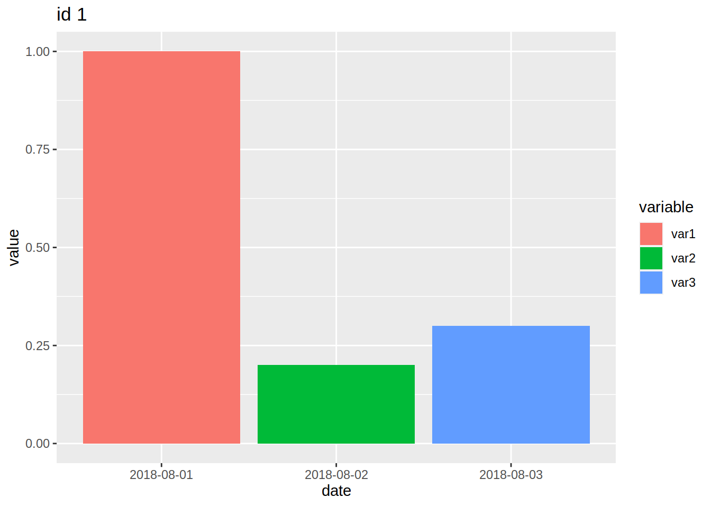
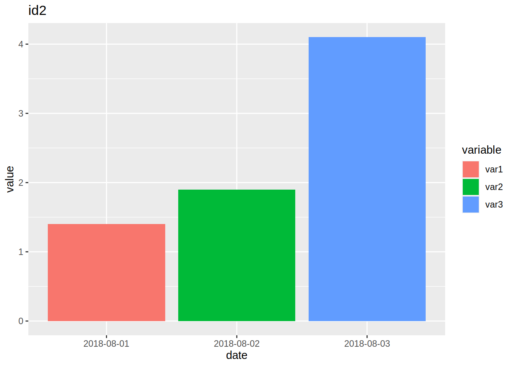
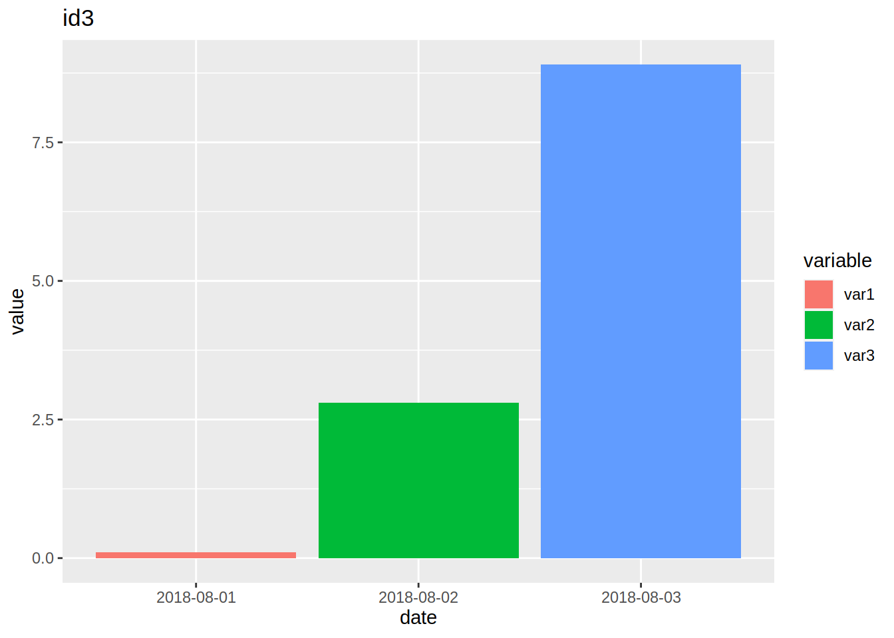
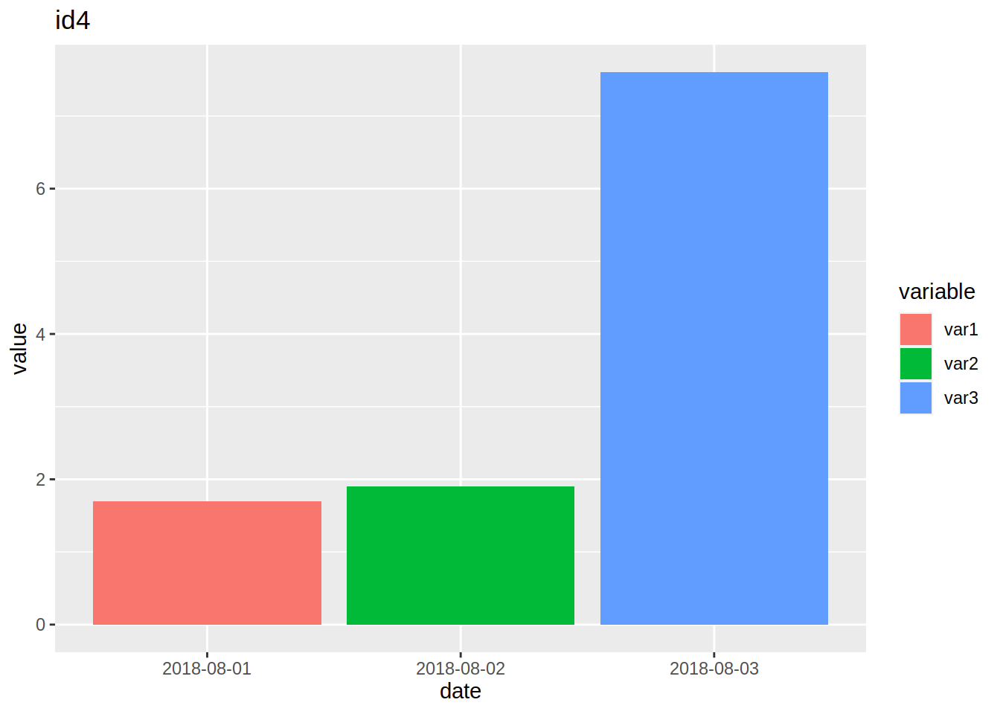

Chapter 4 Descriptive statistics and data manipulation
Now that we are familiar with some R objects and know how to import data, it is time to write some
code. In this chapter, we are going to compute descriptive statistics for a single dataset, but
also for a list of datasets. However, I will not give a list of functions to compute descriptive
statistics; if you need a specific function you can find easily in the Help pane in Rstudio or
using any modern internet search engine. What I will do is show you a workflow that allows you to
compute the descripitive statisics you need fast.
R has a lot of built-in functions for descriptive statistics; however, if you want to compute
statistics by, say, gender, some more complex manipulations are needed. At least this was true in
the past. Nowadays, thanks to the packages from the tidyverse, it is very easy and fast to
compute descriptive statistics by any stratifying variable(s). The package we are going to use for
this is called dplyr. dplyr contains a lot of functions that make manipulating
data and computing descriptive statistics very easy. To make things easier for now, we are going to
use example data included with dplyr. So no need to import an external dataset; this does not
change anything to the example that we are going to study here; the source of the data does not
matter for this. Using dplyr is possible only if the data you are working with is already in
a useful shape. When data is more messy, you will need to first manipulate it to bring it a tidy
format. For this, we will use tidyr, which is very useful package to reshape data and to do
advanced cleaning of your data.
All these tidyverse functions are also called verbs. However, before getting to know these verbs,
let’s do an analysis using standard, or base R functions. This will be the benchmark against
which we are going to measure a {tidyverse} workflow.
4.1 A data exploration exercice using base R
Let’s first load the starwars data set, included in the {dplyr} package:
library(dplyr)
data(starwars)Let’s first take a look at the data:
head(starwars)## # A tibble: 6 x 13
## name height mass hair_color skin_color eye_color birth_year gender
## <chr> <int> <dbl> <chr> <chr> <chr> <dbl> <chr>
## 1 Luke… 172 77 blond fair blue 19 male
## 2 C-3PO 167 75 <NA> gold yellow 112 <NA>
## 3 R2-D2 96 32 <NA> white, bl… red 33 <NA>
## 4 Dart… 202 136 none white yellow 41.9 male
## 5 Leia… 150 49 brown light brown 19 female
## 6 Owen… 178 120 brown, gr… light blue 52 male
## # … with 5 more variables: homeworld <chr>, species <chr>, films <list>,
## # vehicles <list>, starships <list>This data contains information on Star Wars characters. The first question you have to answer is to find the average height of the characters:
mean(starwars$height)## [1] NALet’s also take a look at the standard deviation:
sd(starwars$height)## [1] NAIt might be more informative to compute these two statistics by species, so for this, we are going
to use aggregate():
aggregate(starwars$height,
by = list(Species = starwars$species),
mean)## Species x
## 1 Aleena 79.0000
## 2 Besalisk 198.0000
## 3 Cerean 198.0000
## 4 Chagrian 196.0000
## 5 Clawdite 168.0000
## 6 Droid NA
## 7 Dug 112.0000
## 8 Ewok 88.0000
## 9 Geonosian 183.0000
## 10 Gungan 208.6667
## 11 Human NA
## 12 Hutt 175.0000
## 13 Iktotchi 188.0000
## 14 Kaleesh 216.0000
## 15 Kaminoan 221.0000
## 16 Kel Dor 188.0000
## 17 Mirialan 168.0000
## 18 Mon Calamari 180.0000
## 19 Muun 191.0000
## 20 Nautolan 196.0000
## 21 Neimodian 191.0000
## 22 Pau'an 206.0000
## 23 Quermian 264.0000
## 24 Rodian 173.0000
## 25 Skakoan 193.0000
## 26 Sullustan 160.0000
## 27 Tholothian 184.0000
## 28 Togruta 178.0000
## 29 Toong 163.0000
## 30 Toydarian 137.0000
## 31 Trandoshan 190.0000
## 32 Twi'lek 179.0000
## 33 Vulptereen 94.0000
## 34 Wookiee 231.0000
## 35 Xexto 122.0000
## 36 Yoda's species 66.0000
## 37 Zabrak 173.0000Even if you are not familiar with aggregate(), I believe the above lines are quite self-explanatory.
You need to provide aggregate() with 3 things; the variable you want to summarize (or only the
data frame, if you want to summarize all variables), a list of grouping variables and then the
function that will be applied to each subset. You can easily add another grouping variable:
aggregate(starwars$height,
by = list(Species = starwars$species,
Homeworld = starwars$homeworld),
mean)## Species Homeworld x
## 1 Human Alderaan 176.3333
## 2 Aleena Aleen Minor 79.0000
## 3 Human Bespin 175.0000
## 4 Human Bestine IV 180.0000
## 5 Neimodian Cato Neimoidia 191.0000
## 6 Cerean Cerea 198.0000
## 7 Chagrian Champala 196.0000
## 8 Human Chandrila 150.0000
## 9 Human Concord Dawn 183.0000
## 10 Human Corellia 175.0000
## 11 Human Coruscant 168.5000
## 12 Tholothian Coruscant 184.0000
## 13 Zabrak Dathomir 175.0000
## 14 Kel Dor Dorin 188.0000
## 15 Ewok Endor 88.0000
## 16 Human Eriadu 180.0000
## 17 Geonosian Geonosis 183.0000
## 18 Nautolan Glee Anselm 196.0000
## 19 Human Haruun Kal 188.0000
## 20 Iktotchi Iktotch 188.0000
## 21 Zabrak Iridonia 171.0000
## 22 Kaleesh Kalee 216.0000
## 23 Human Kamino 183.0000
## 24 Kaminoan Kamino 221.0000
## 25 Wookiee Kashyyyk 231.0000
## 26 Dug Malastare 112.0000
## 27 Mirialan Mirial 168.0000
## 28 Mon Calamari Mon Cala 180.0000
## 29 Muun Muunilinst 191.0000
## 30 Droid Naboo 96.0000
## 31 Gungan Naboo 208.6667
## 32 Human Naboo 168.4000
## 33 Hutt Nal Hutta 175.0000
## 34 Besalisk Ojom 198.0000
## 35 Quermian Quermia 264.0000
## 36 Rodian Rodia 173.0000
## 37 Twi'lek Ryloth 179.0000
## 38 Human Serenno 193.0000
## 39 Togruta Shili 178.0000
## 40 Skakoan Skako 193.0000
## 41 Human Socorro 177.0000
## 42 Human Stewjon 182.0000
## 43 Sullustan Sullust 160.0000
## 44 Droid Tatooine 132.0000
## 45 Human Tatooine 179.2500
## 46 Toydarian Toydaria 137.0000
## 47 Trandoshan Trandosha 190.0000
## 48 Xexto Troiken 122.0000
## 49 Toong Tund 163.0000
## 50 Pau'an Utapau 206.0000
## 51 Vulptereen Vulpter 94.0000
## 52 Clawdite Zolan 168.0000or use another function:
aggregate(starwars$height,
by = list(Species = starwars$species),
sd)## Species x
## 1 Aleena NA
## 2 Besalisk NA
## 3 Cerean NA
## 4 Chagrian NA
## 5 Clawdite NA
## 6 Droid NA
## 7 Dug NA
## 8 Ewok NA
## 9 Geonosian NA
## 10 Gungan 14.189198
## 11 Human NA
## 12 Hutt NA
## 13 Iktotchi NA
## 14 Kaleesh NA
## 15 Kaminoan 11.313708
## 16 Kel Dor NA
## 17 Mirialan 2.828427
## 18 Mon Calamari NA
## 19 Muun NA
## 20 Nautolan NA
## 21 Neimodian NA
## 22 Pau'an NA
## 23 Quermian NA
## 24 Rodian NA
## 25 Skakoan NA
## 26 Sullustan NA
## 27 Tholothian NA
## 28 Togruta NA
## 29 Toong NA
## 30 Toydarian NA
## 31 Trandoshan NA
## 32 Twi'lek 1.414214
## 33 Vulptereen NA
## 34 Wookiee 4.242641
## 35 Xexto NA
## 36 Yoda's species NA
## 37 Zabrak 2.828427aggregate() returns a data.frame object:
class(aggregate(starwars$height, by = list(Species = starwars$species), mean))## [1] "data.frame"tapply() is another base R alternative:
tapply(starwars$height, list(starwars$species), mean)## Aleena Besalisk Cerean Chagrian Clawdite
## 79.0000 198.0000 198.0000 196.0000 168.0000
## Droid Dug Ewok Geonosian Gungan
## NA 112.0000 88.0000 183.0000 208.6667
## Human Hutt Iktotchi Kaleesh Kaminoan
## NA 175.0000 188.0000 216.0000 221.0000
## Kel Dor Mirialan Mon Calamari Muun Nautolan
## 188.0000 168.0000 180.0000 191.0000 196.0000
## Neimodian Pau'an Quermian Rodian Skakoan
## 191.0000 206.0000 264.0000 173.0000 193.0000
## Sullustan Tholothian Togruta Toong Toydarian
## 160.0000 184.0000 178.0000 163.0000 137.0000
## Trandoshan Twi'lek Vulptereen Wookiee Xexto
## 190.0000 179.0000 94.0000 231.0000 122.0000
## Yoda's species Zabrak
## 66.0000 173.0000which returns an array object, which is similar to a vector.
However, tapply() does not work if you want the mean by species for all the variables in the
data frame:
tapply(starwars, list(starwars$species), mean)Error in tapply(starwars, list(starwars$species), mean) :
arguments must have same lengthIn both cases, you can only specify one function. So if you need the average and the standard deviation you have to do it in two steps.
Let’s continue now, by only computing the average height by species, but for males:
starwars_males <- subset(starwars, gender == "male")
aggregate(starwars_males$height,
by = list(Species = starwars_males$species),
mean)## Species x
## 1 Aleena 79.0000
## 2 Besalisk 198.0000
## 3 Cerean 198.0000
## 4 Chagrian 196.0000
## 5 Dug 112.0000
## 6 Ewok 88.0000
## 7 Geonosian 183.0000
## 8 Gungan 208.6667
## 9 Human NA
## 10 Iktotchi 188.0000
## 11 Kaleesh 216.0000
## 12 Kaminoan 229.0000
## 13 Kel Dor 188.0000
## 14 Mon Calamari 180.0000
## 15 Muun 191.0000
## 16 Nautolan 196.0000
## 17 Neimodian 191.0000
## 18 Pau'an 206.0000
## 19 Quermian 264.0000
## 20 Rodian 173.0000
## 21 Skakoan 193.0000
## 22 Sullustan 160.0000
## 23 Toong 163.0000
## 24 Toydarian 137.0000
## 25 Trandoshan 190.0000
## 26 Twi'lek 180.0000
## 27 Vulptereen 94.0000
## 28 Wookiee 231.0000
## 29 Xexto 122.0000
## 30 Yoda's species 66.0000
## 31 Zabrak 173.0000I first use subset() to create a subset of the data in which I only kept males. Then, I rerun
the analysis from before again. subset() can also be used to select columns. So if you want
the average of the height and mass for males, you could do something like this:
starwars_males_height_mass <- subset(starwars, gender == "male", select = c(height, mass, species))
aggregate(starwars_males_height_mass,
by = list(Species = starwars_males_height_mass$species),
mean)## Warning in mean.default(X[[i]], ...): argument is not numeric or logical:
## returning NA
## Warning in mean.default(X[[i]], ...): argument is not numeric or logical:
## returning NA
## Warning in mean.default(X[[i]], ...): argument is not numeric or logical:
## returning NA
## Warning in mean.default(X[[i]], ...): argument is not numeric or logical:
## returning NA
## Warning in mean.default(X[[i]], ...): argument is not numeric or logical:
## returning NA
## Warning in mean.default(X[[i]], ...): argument is not numeric or logical:
## returning NA
## Warning in mean.default(X[[i]], ...): argument is not numeric or logical:
## returning NA
## Warning in mean.default(X[[i]], ...): argument is not numeric or logical:
## returning NA
## Warning in mean.default(X[[i]], ...): argument is not numeric or logical:
## returning NA
## Warning in mean.default(X[[i]], ...): argument is not numeric or logical:
## returning NA
## Warning in mean.default(X[[i]], ...): argument is not numeric or logical:
## returning NA
## Warning in mean.default(X[[i]], ...): argument is not numeric or logical:
## returning NA
## Warning in mean.default(X[[i]], ...): argument is not numeric or logical:
## returning NA
## Warning in mean.default(X[[i]], ...): argument is not numeric or logical:
## returning NA
## Warning in mean.default(X[[i]], ...): argument is not numeric or logical:
## returning NA
## Warning in mean.default(X[[i]], ...): argument is not numeric or logical:
## returning NA
## Warning in mean.default(X[[i]], ...): argument is not numeric or logical:
## returning NA
## Warning in mean.default(X[[i]], ...): argument is not numeric or logical:
## returning NA
## Warning in mean.default(X[[i]], ...): argument is not numeric or logical:
## returning NA
## Warning in mean.default(X[[i]], ...): argument is not numeric or logical:
## returning NA
## Warning in mean.default(X[[i]], ...): argument is not numeric or logical:
## returning NA
## Warning in mean.default(X[[i]], ...): argument is not numeric or logical:
## returning NA
## Warning in mean.default(X[[i]], ...): argument is not numeric or logical:
## returning NA
## Warning in mean.default(X[[i]], ...): argument is not numeric or logical:
## returning NA
## Warning in mean.default(X[[i]], ...): argument is not numeric or logical:
## returning NA
## Warning in mean.default(X[[i]], ...): argument is not numeric or logical:
## returning NA
## Warning in mean.default(X[[i]], ...): argument is not numeric or logical:
## returning NA
## Warning in mean.default(X[[i]], ...): argument is not numeric or logical:
## returning NA
## Warning in mean.default(X[[i]], ...): argument is not numeric or logical:
## returning NA
## Warning in mean.default(X[[i]], ...): argument is not numeric or logical:
## returning NA
## Warning in mean.default(X[[i]], ...): argument is not numeric or logical:
## returning NA## Species height mass species
## 1 Aleena 79.0000 15 NA
## 2 Besalisk 198.0000 102 NA
## 3 Cerean 198.0000 82 NA
## 4 Chagrian 196.0000 NA NA
## 5 Dug 112.0000 40 NA
## 6 Ewok 88.0000 20 NA
## 7 Geonosian 183.0000 80 NA
## 8 Gungan 208.6667 NA NA
## 9 Human NA NA NA
## 10 Iktotchi 188.0000 NA NA
## 11 Kaleesh 216.0000 159 NA
## 12 Kaminoan 229.0000 88 NA
## 13 Kel Dor 188.0000 80 NA
## 14 Mon Calamari 180.0000 83 NA
## 15 Muun 191.0000 NA NA
## 16 Nautolan 196.0000 87 NA
## 17 Neimodian 191.0000 90 NA
## 18 Pau'an 206.0000 80 NA
## 19 Quermian 264.0000 NA NA
## 20 Rodian 173.0000 74 NA
## 21 Skakoan 193.0000 48 NA
## 22 Sullustan 160.0000 68 NA
## 23 Toong 163.0000 65 NA
## 24 Toydarian 137.0000 NA NA
## 25 Trandoshan 190.0000 113 NA
## 26 Twi'lek 180.0000 NA NA
## 27 Vulptereen 94.0000 45 NA
## 28 Wookiee 231.0000 124 NA
## 29 Xexto 122.0000 NA NA
## 30 Yoda's species 66.0000 17 NA
## 31 Zabrak 173.0000 NA NAThis is starting to get a bit verbose, but it is quite easy to follow and very powerful. It certainly beats having to write loops to achieve the same thing.
Let’s now consider this new dataset:
survey_data_base## id var1 var2 var3
## 1 1 1.0 0.2 0.3
## 2 2 1.4 1.9 4.1
## 3 3 0.1 2.8 8.9
## 4 4 1.7 1.9 7.6I will explain later where this comes from. Depending on what you want to do with this data, it is
not in the right shape. So let’s reshape it, using the aptly-called reshape() command:
survey_data_long <- reshape(survey_data_base,
varying = list(2:4), v.names = "variable", direction = "long")We can now easily compute the average of variable for each id:
aggregate(survey_data_long$variable,
by = list(Id = survey_data_long$id),
mean)## Id x
## 1 1 0.500000
## 2 2 2.466667
## 3 3 3.933333
## 4 4 3.733333There is also the possiblity to merge two datasets with merge(). I won’t go into that however.
As you can see, R comes with very powerful functions right out of the box, ready to use. When I was
studying, unfortunately, my professors had been brought up on FORTRAN loops, so we had to do to all
this using loops (not reshaping, thankfully), which was not so easy.
Now that we have seen how base R works, let’s redo the analysis using {tidyverse} verbs.
But before deep diving into the {tidyverse}, let’s take a moment to discuss about our lord and
saviour, %>%.
4.2 Smoking is bad for you, but pipes are your friend
The title of this section might sound weird at first, but by the end of it, you’ll get this (terrible) pun.
You probably know the following painting by René Magritte, La trahison des images:

It turns out there’s an R package from the tidyverse that is called magrittr. What does this
package do? It brings pipes to R. Pipes are a concept from the Unix operating system; if you’re
using a GNU+Linux distribution or macOS, you’re basically using a modern unix (that’s an
oversimplification, but I’m an economist by training, and outrageously oversimplifying things is
what we do, deal with it).
The idea of pipes is to take the output of a command, and feed it as the input of another
command. The magrittr package brings pipes to R, by using the weird looking %>%. Try the
following:
library(magrittr)16 %>% sqrt## [1] 4This looks quite weird, but you probably understand what happened; 16 got fed as the first
argument of the function sqrt(). You can chain multiple functions:
16 %>% sqrt %>% `+`(18)## [1] 22The output of 16 (16) got fed to sqrt(), and the output of sqrt(16) (4) got fed to +(18)
(22). Without %>% you’d write the line just above like this:
sqrt(16) + 18## [1] 22It might not be very clear right now why this is useful, but the %>% is probably one of the
most useful infix operators, because when using packages from the tidyverse, you will
naturally want to chain a lot of functions together. Without the %>% it would become messy very fast.
%>% is not the only pipe operator in magrittr. There’s %T%, %<>% and %$%. All have their
uses, but are basically shortcuts to some common tasks with %>% plus another function. Which
means that you can live without them, and because of this, I will not discuss them.
4.3 The {tidyverse}’s enfant prodige: {dplyr}
The best way to get started with the tidyverse packages is to get to know {dplyr}. {dplyr} provides
a lot of very useful functions that makes it very easy to get discriptive statistics or add new columns
to your data.
4.3.1 A first taste of data manipulation with {dplyr}
This section will walk you through a typical analysis using {dplyr} funcitons. Just go with it; I
will give more details in the next sections.
First, let’s load dplyr and the included starwars dataset. Let’s also take a look at the first 5
lines of the dataset:
library(dplyr)
data(starwars)
head(starwars)## # A tibble: 6 x 13
## name height mass hair_color skin_color eye_color birth_year gender
## <chr> <int> <dbl> <chr> <chr> <chr> <dbl> <chr>
## 1 Luke… 172 77 blond fair blue 19 male
## 2 C-3PO 167 75 <NA> gold yellow 112 <NA>
## 3 R2-D2 96 32 <NA> white, bl… red 33 <NA>
## 4 Dart… 202 136 none white yellow 41.9 male
## 5 Leia… 150 49 brown light brown 19 female
## 6 Owen… 178 120 brown, gr… light blue 52 male
## # … with 5 more variables: homeworld <chr>, species <chr>, films <list>,
## # vehicles <list>, starships <list>data(starwars) loads the example dataset called starwars that is included in the package dplyr.
As I said earlier, this is just an example; you could have loaded an external dataset, from a
.csv file for instance. This does not matter for what comes next.
R includes a lot of functions for descriptive statistics, such as mean(), sd(), cov(), and many
more. What dplyr brings to the table (among other niceties) is the possibility to apply these
functions to the dataset easily. For example, imagine you want the average height of everyone in
the dataset. Using the basic R functions, you could write this:
mean(starwars$height)## [1] NAstarwars$height means that the user wants to access the column called height from the dataset
starwars. Remember that the $ symbol is how you access elements of a named list. This is the
same for columns of datasets as you can see. This is then given as an argument to the function
mean(). But what if the user wants the average height by species? Before dplyr, a solution to
this simple problem would have required more than a single command. Now this is as easy as:
starwars %>%
group_by(species) %>%
summarise(mean(height))## # A tibble: 38 x 2
## species `mean(height)`
## <chr> <dbl>
## 1 <NA> NA
## 2 Aleena 79
## 3 Besalisk 198
## 4 Cerean 198
## 5 Chagrian 196
## 6 Clawdite 168
## 7 Droid NA
## 8 Dug 112
## 9 Ewok 88
## 10 Geonosian 183
## # … with 28 more rowsThe usefulness of the %>% (pipe operator) becomes apparent now. Without it, one would write
instead:
summarise(group_by(starwars, species), mean(height))## # A tibble: 38 x 2
## species `mean(height)`
## <chr> <dbl>
## 1 <NA> NA
## 2 Aleena 79
## 3 Besalisk 198
## 4 Cerean 198
## 5 Chagrian 196
## 6 Clawdite 168
## 7 Droid NA
## 8 Dug 112
## 9 Ewok 88
## 10 Geonosian 183
## # … with 28 more rowsas you can clearly see, it is much more difficult to read. Imagine now that I want the average height
by species, but only for males. Again, this is very easy using %>%:
starwars %>%
filter(gender == "male") %>%
group_by(species) %>%
summarise(mean(height))## # A tibble: 32 x 2
## species `mean(height)`
## <chr> <dbl>
## 1 <NA> 183
## 2 Aleena 79
## 3 Besalisk 198
## 4 Cerean 198
## 5 Chagrian 196
## 6 Dug 112
## 7 Ewok 88
## 8 Geonosian 183
## 9 Gungan 209.
## 10 Human NA
## # … with 22 more rowsAgain, the %>% makes the above lines of code very easy to read. Without it, one would need to write:
summarise(group_by(filter(starwars, gender == "male"), species), mean(height))## # A tibble: 32 x 2
## species `mean(height)`
## <chr> <dbl>
## 1 <NA> 183
## 2 Aleena 79
## 3 Besalisk 198
## 4 Cerean 198
## 5 Chagrian 196
## 6 Dug 112
## 7 Ewok 88
## 8 Geonosian 183
## 9 Gungan 209.
## 10 Human NA
## # … with 22 more rowsI think you agree with me that this is not very readable. One way to make it more readable would be to save intermediary variables:
filtered_data <- filter(starwars, gender == "male")
grouped_data <- group_by(filter(starwars, gender == "male"), species)
summarise(grouped_data, mean(height))## # A tibble: 32 x 2
## species `mean(height)`
## <chr> <dbl>
## 1 <NA> 183
## 2 Aleena 79
## 3 Besalisk 198
## 4 Cerean 198
## 5 Chagrian 196
## 6 Dug 112
## 7 Ewok 88
## 8 Geonosian 183
## 9 Gungan 209.
## 10 Human NA
## # … with 22 more rowsBut this can get very tedious. Once you’re used to %>%, you won’t go back to not use it.
Before continuing and to make things clearer; filter(), group_by() and summarise() are
functions that are included in dplyr. %>% is actually a function from magrittr, but this
package gets loaded on the fly when you load dplyr, so you do not need to worry about it.
mean() is a function native to R.
The result of all these operations that use dplyr functions are actually other datasets, or
tibbles. This means that you can save them in variable, and then work with these as any other
datasets.
mean_height <- starwars %>%
group_by(species) %>%
summarise(mean(height))
class(mean_height)## [1] "tbl_df" "tbl" "data.frame"head(mean_height)## # A tibble: 6 x 2
## species `mean(height)`
## <chr> <dbl>
## 1 <NA> NA
## 2 Aleena 79
## 3 Besalisk 198
## 4 Cerean 198
## 5 Chagrian 196
## 6 Clawdite 168You could then write this data to disk using rio::export() for instance. If you need more than the
mean of the height, you can keep adding as many functions as needed:
summary_table <- starwars %>%
group_by(species) %>%
summarise(ave_height = mean(height), var_height = var(height), n_obs = n())
print(summary_table)## # A tibble: 38 x 4
## species ave_height var_height n_obs
## <chr> <dbl> <dbl> <int>
## 1 <NA> NA NA 5
## 2 Aleena 79 NA 1
## 3 Besalisk 198 NA 1
## 4 Cerean 198 NA 1
## 5 Chagrian 196 NA 1
## 6 Clawdite 168 NA 1
## 7 Droid NA NA 5
## 8 Dug 112 NA 1
## 9 Ewok 88 NA 1
## 10 Geonosian 183 NA 1
## # … with 28 more rowsI’ve added more functions, namely var(), to get the variance of height, and n(), which
is a function from dplyr, not base R, to get the number of observations. This is quite useful,
because we see that for a lot of species we only have one single individual! Let’s focus on the
species for which we have more than 1 individual. Since we save all the previous operations (which
produce a tibble) in a variable, we can keep going from there:
summary_table2 <- summary_table %>%
filter(n_obs > 1)
print(summary_table2)## # A tibble: 9 x 4
## species ave_height var_height n_obs
## <chr> <dbl> <dbl> <int>
## 1 <NA> NA NA 5
## 2 Droid NA NA 5
## 3 Gungan 209. 201. 3
## 4 Human NA NA 35
## 5 Kaminoan 221 128 2
## 6 Mirialan 168 8 2
## 7 Twi'lek 179 2 2
## 8 Wookiee 231 18 2
## 9 Zabrak 173 8 2There’s a lot of NAs; this is because by default, mean() and var() return NA if even one
single observation is NA. This is good, because it forces you to look at the data
to see what is going on. If you would get a number, even if there were NAs you could very easily
miss these missing values. It is better for functions to fail early and often than the opposite.
mean() and var() have a na.rm option that the user can set to TRUE to get the result by
ignoring the NAs:
starwars %>%
group_by(species) %>%
summarise(ave_height = mean(height, na.rm = TRUE), var_height = var(height, na.rm = TRUE), n_obs = n()) %>%
filter(n_obs > 1)## # A tibble: 9 x 4
## species ave_height var_height n_obs
## <chr> <dbl> <dbl> <int>
## 1 <NA> 160 1826 5
## 2 Droid 140 2705. 5
## 3 Gungan 209. 201. 3
## 4 Human 177. 157. 35
## 5 Kaminoan 221 128 2
## 6 Mirialan 168 8 2
## 7 Twi'lek 179 2 2
## 8 Wookiee 231 18 2
## 9 Zabrak 173 8 2In the code above, I have combined the two previous steps to get the result I’m interested in. There’s
a line in the final output that says NA for the species. Let’s go back to the raw data and find
these lines:
starwars %>%
filter(is.na(species))## # A tibble: 5 x 13
## name height mass hair_color skin_color eye_color birth_year gender
## <chr> <int> <dbl> <chr> <chr> <chr> <dbl> <chr>
## 1 Ric … 183 NA brown fair blue NA male
## 2 Quar… 183 NA black dark brown 62 male
## 3 R4-P… 96 NA none silver, r… red, blue NA female
## 4 Sly … 178 48 none pale white NA female
## 5 Capt… NA NA unknown unknown unknown NA female
## # … with 5 more variables: homeworld <chr>, species <chr>, films <list>,
## # vehicles <list>, starships <list>To test for NA, one uses the function is.na() not something like species == "NA" or anything
like that. !is.na() does the opposite:
starwars %>%
filter(!is.na(species))## # A tibble: 82 x 13
## name height mass hair_color skin_color eye_color birth_year gender
## <chr> <int> <dbl> <chr> <chr> <chr> <dbl> <chr>
## 1 Luke… 172 77 blond fair blue 19 male
## 2 C-3PO 167 75 <NA> gold yellow 112 <NA>
## 3 R2-D2 96 32 <NA> white, bl… red 33 <NA>
## 4 Dart… 202 136 none white yellow 41.9 male
## 5 Leia… 150 49 brown light brown 19 female
## 6 Owen… 178 120 brown, gr… light blue 52 male
## 7 Beru… 165 75 brown light blue 47 female
## 8 R5-D4 97 32 <NA> white, red red NA <NA>
## 9 Bigg… 183 84 black light brown 24 male
## 10 Obi-… 182 77 auburn, w… fair blue-gray 57 male
## # … with 72 more rows, and 5 more variables: homeworld <chr>,
## # species <chr>, films <list>, vehicles <list>, starships <list>The ! function negates a predicate function (a predicate function is a function that returns
TRUE or FALSE). We can then rerun our analysis from before:
starwars %>%
filter(!is.na(species)) %>%
group_by(species) %>%
summarise(ave_height = mean(height, na.rm = TRUE), var_height = var(height, na.rm = TRUE), n_obs = n()) %>%
filter(n_obs > 1)## # A tibble: 8 x 4
## species ave_height var_height n_obs
## <chr> <dbl> <dbl> <int>
## 1 Droid 140 2705. 5
## 2 Gungan 209. 201. 3
## 3 Human 177. 157. 35
## 4 Kaminoan 221 128 2
## 5 Mirialan 168 8 2
## 6 Twi'lek 179 2 2
## 7 Wookiee 231 18 2
## 8 Zabrak 173 8 2And why not compute the same table, but first add another stratifying variable?
starwars %>%
filter(!is.na(species)) %>%
group_by(species, gender) %>%
summarise(ave_height = mean(height, na.rm = TRUE), var_height = var(height, na.rm = TRUE), n_obs = n()) %>%
filter(n_obs > 1)## # A tibble: 8 x 5
## # Groups: species [6]
## species gender ave_height var_height n_obs
## <chr> <chr> <dbl> <dbl> <int>
## 1 Droid <NA> 120 1657 3
## 2 Droid none 200 NA 2
## 3 Gungan male 209. 201. 3
## 4 Human female 160. 48.8 9
## 5 Human male 182. 67.1 26
## 6 Mirialan female 168 8 2
## 7 Wookiee male 231 18 2
## 8 Zabrak male 173 8 2Ok, that’s it for a first taste. We have already discovered some very useful {dplyr} functions,
filter(), group_by() and summarise summarise().
Now, we are going to learn more about these functions in more detail.
4.3.2 Filter the rows of a dataset with filter()
We’re going to use the Gasoline dataset from the plm package, so install that first:
install.packages("plm")Then load the required data:
data(Gasoline, package = "plm")and load dplyr:
library(dplyr)This dataset gives the consumption of gasoline for 18 countries from 1960 to 1978. When you load
the data like this, it is a standard data.frame. dplyr functions can be used on standard
data.frame objects, but also on tibbles. tibbles are just like data frame, but with a better
print method (and other niceties). I’ll discuss the {tibble} package later, but for now, let’s
convert the data to a tibble and change its name:
gasoline <- as_tibble(Gasoline)filter() is pretty straightforward. What if you would like to subset the data to focus on the
year 1969? Simple:
filter(gasoline, year == 1969)## # A tibble: 18 x 6
## country year lgaspcar lincomep lrpmg lcarpcap
## <fct> <int> <dbl> <dbl> <dbl> <dbl>
## 1 AUSTRIA 1969 4.05 -6.15 -0.559 -8.79
## 2 BELGIUM 1969 3.85 -5.86 -0.355 -8.52
## 3 CANADA 1969 4.86 -5.56 -1.04 -8.10
## 4 DENMARK 1969 4.17 -5.72 -0.407 -8.47
## 5 FRANCE 1969 3.77 -5.84 -0.315 -8.37
## 6 GERMANY 1969 3.90 -5.83 -0.589 -8.44
## 7 GREECE 1969 4.89 -6.59 -0.180 -10.7
## 8 IRELAND 1969 4.21 -6.38 -0.272 -8.95
## 9 ITALY 1969 3.74 -6.28 -0.248 -8.67
## 10 JAPAN 1969 4.52 -6.16 -0.417 -9.61
## 11 NETHERLA 1969 3.99 -5.88 -0.417 -8.63
## 12 NORWAY 1969 4.09 -5.74 -0.338 -8.69
## 13 SPAIN 1969 3.99 -5.60 0.669 -9.72
## 14 SWEDEN 1969 3.99 -7.77 -2.73 -8.20
## 15 SWITZERL 1969 4.21 -5.91 -0.918 -8.47
## 16 TURKEY 1969 5.72 -7.39 -0.298 -12.5
## 17 U.K. 1969 3.95 -6.03 -0.383 -8.47
## 18 U.S.A. 1969 4.84 -5.41 -1.22 -7.79Let’s use %>%, since we’re familiar with it now:
gasoline %>% filter(year == 1969)## # A tibble: 18 x 6
## country year lgaspcar lincomep lrpmg lcarpcap
## <fct> <int> <dbl> <dbl> <dbl> <dbl>
## 1 AUSTRIA 1969 4.05 -6.15 -0.559 -8.79
## 2 BELGIUM 1969 3.85 -5.86 -0.355 -8.52
## 3 CANADA 1969 4.86 -5.56 -1.04 -8.10
## 4 DENMARK 1969 4.17 -5.72 -0.407 -8.47
## 5 FRANCE 1969 3.77 -5.84 -0.315 -8.37
## 6 GERMANY 1969 3.90 -5.83 -0.589 -8.44
## 7 GREECE 1969 4.89 -6.59 -0.180 -10.7
## 8 IRELAND 1969 4.21 -6.38 -0.272 -8.95
## 9 ITALY 1969 3.74 -6.28 -0.248 -8.67
## 10 JAPAN 1969 4.52 -6.16 -0.417 -9.61
## 11 NETHERLA 1969 3.99 -5.88 -0.417 -8.63
## 12 NORWAY 1969 4.09 -5.74 -0.338 -8.69
## 13 SPAIN 1969 3.99 -5.60 0.669 -9.72
## 14 SWEDEN 1969 3.99 -7.77 -2.73 -8.20
## 15 SWITZERL 1969 4.21 -5.91 -0.918 -8.47
## 16 TURKEY 1969 5.72 -7.39 -0.298 -12.5
## 17 U.K. 1969 3.95 -6.03 -0.383 -8.47
## 18 U.S.A. 1969 4.84 -5.41 -1.22 -7.79You can also filter more than just one year, by using the %in% operator:
gasoline %>% filter(year %in% seq(1969, 1973))## # A tibble: 90 x 6
## country year lgaspcar lincomep lrpmg lcarpcap
## <fct> <int> <dbl> <dbl> <dbl> <dbl>
## 1 AUSTRIA 1969 4.05 -6.15 -0.559 -8.79
## 2 AUSTRIA 1970 4.08 -6.08 -0.597 -8.73
## 3 AUSTRIA 1971 4.11 -6.04 -0.654 -8.64
## 4 AUSTRIA 1972 4.13 -5.98 -0.596 -8.54
## 5 AUSTRIA 1973 4.20 -5.90 -0.594 -8.49
## 6 BELGIUM 1969 3.85 -5.86 -0.355 -8.52
## 7 BELGIUM 1970 3.87 -5.80 -0.378 -8.45
## 8 BELGIUM 1971 3.87 -5.76 -0.399 -8.41
## 9 BELGIUM 1972 3.91 -5.71 -0.311 -8.36
## 10 BELGIUM 1973 3.90 -5.64 -0.373 -8.31
## # … with 80 more rowsIt is also possible use between(), a helper function:
gasoline %>% filter(between(year, 1969, 1973))## # A tibble: 90 x 6
## country year lgaspcar lincomep lrpmg lcarpcap
## <fct> <int> <dbl> <dbl> <dbl> <dbl>
## 1 AUSTRIA 1969 4.05 -6.15 -0.559 -8.79
## 2 AUSTRIA 1970 4.08 -6.08 -0.597 -8.73
## 3 AUSTRIA 1971 4.11 -6.04 -0.654 -8.64
## 4 AUSTRIA 1972 4.13 -5.98 -0.596 -8.54
## 5 AUSTRIA 1973 4.20 -5.90 -0.594 -8.49
## 6 BELGIUM 1969 3.85 -5.86 -0.355 -8.52
## 7 BELGIUM 1970 3.87 -5.80 -0.378 -8.45
## 8 BELGIUM 1971 3.87 -5.76 -0.399 -8.41
## 9 BELGIUM 1972 3.91 -5.71 -0.311 -8.36
## 10 BELGIUM 1973 3.90 -5.64 -0.373 -8.31
## # … with 80 more rowsTo select non-consecutive years:
gasoline %>% filter(year %in% c(1969, 1973, 1977))## # A tibble: 54 x 6
## country year lgaspcar lincomep lrpmg lcarpcap
## <fct> <int> <dbl> <dbl> <dbl> <dbl>
## 1 AUSTRIA 1969 4.05 -6.15 -0.559 -8.79
## 2 AUSTRIA 1973 4.20 -5.90 -0.594 -8.49
## 3 AUSTRIA 1977 3.93 -5.83 -0.422 -8.25
## 4 BELGIUM 1969 3.85 -5.86 -0.355 -8.52
## 5 BELGIUM 1973 3.90 -5.64 -0.373 -8.31
## 6 BELGIUM 1977 3.85 -5.56 -0.432 -8.14
## 7 CANADA 1969 4.86 -5.56 -1.04 -8.10
## 8 CANADA 1973 4.90 -5.41 -1.13 -7.94
## 9 CANADA 1977 4.81 -5.34 -1.07 -7.77
## 10 DENMARK 1969 4.17 -5.72 -0.407 -8.47
## # … with 44 more rows%in% tests if an object is part of a set.
4.3.3 Select columns with select()
While filter() allows you to keep or discard rows of data, select()
allows you to keep or discard entire columns. To keep columns:
gasoline %>% select(country, year, lrpmg)## # A tibble: 342 x 3
## country year lrpmg
## <fct> <int> <dbl>
## 1 AUSTRIA 1960 -0.335
## 2 AUSTRIA 1961 -0.351
## 3 AUSTRIA 1962 -0.380
## 4 AUSTRIA 1963 -0.414
## 5 AUSTRIA 1964 -0.445
## 6 AUSTRIA 1965 -0.497
## 7 AUSTRIA 1966 -0.467
## 8 AUSTRIA 1967 -0.506
## 9 AUSTRIA 1968 -0.522
## 10 AUSTRIA 1969 -0.559
## # … with 332 more rowsTo discard them:
gasoline %>% select(-country, -year, -lrpmg)## # A tibble: 342 x 3
## lgaspcar lincomep lcarpcap
## <dbl> <dbl> <dbl>
## 1 4.17 -6.47 -9.77
## 2 4.10 -6.43 -9.61
## 3 4.07 -6.41 -9.46
## 4 4.06 -6.37 -9.34
## 5 4.04 -6.32 -9.24
## 6 4.03 -6.29 -9.12
## 7 4.05 -6.25 -9.02
## 8 4.05 -6.23 -8.93
## 9 4.05 -6.21 -8.85
## 10 4.05 -6.15 -8.79
## # … with 332 more rowsTo rename them:
gasoline %>% select(country, date = year, lrpmg)## # A tibble: 342 x 3
## country date lrpmg
## <fct> <int> <dbl>
## 1 AUSTRIA 1960 -0.335
## 2 AUSTRIA 1961 -0.351
## 3 AUSTRIA 1962 -0.380
## 4 AUSTRIA 1963 -0.414
## 5 AUSTRIA 1964 -0.445
## 6 AUSTRIA 1965 -0.497
## 7 AUSTRIA 1966 -0.467
## 8 AUSTRIA 1967 -0.506
## 9 AUSTRIA 1968 -0.522
## 10 AUSTRIA 1969 -0.559
## # … with 332 more rowsThere’s also rename():
gasoline %>% rename(date = year)## # A tibble: 342 x 6
## country date lgaspcar lincomep lrpmg lcarpcap
## <fct> <int> <dbl> <dbl> <dbl> <dbl>
## 1 AUSTRIA 1960 4.17 -6.47 -0.335 -9.77
## 2 AUSTRIA 1961 4.10 -6.43 -0.351 -9.61
## 3 AUSTRIA 1962 4.07 -6.41 -0.380 -9.46
## 4 AUSTRIA 1963 4.06 -6.37 -0.414 -9.34
## 5 AUSTRIA 1964 4.04 -6.32 -0.445 -9.24
## 6 AUSTRIA 1965 4.03 -6.29 -0.497 -9.12
## 7 AUSTRIA 1966 4.05 -6.25 -0.467 -9.02
## 8 AUSTRIA 1967 4.05 -6.23 -0.506 -8.93
## 9 AUSTRIA 1968 4.05 -6.21 -0.522 -8.85
## 10 AUSTRIA 1969 4.05 -6.15 -0.559 -8.79
## # … with 332 more rowsrename() does not do any kind of selection, but just renames.
You can also use select() to re-order columns:
gasoline %>% select(year, country, lrpmg, everything())## # A tibble: 342 x 6
## year country lrpmg lgaspcar lincomep lcarpcap
## <int> <fct> <dbl> <dbl> <dbl> <dbl>
## 1 1960 AUSTRIA -0.335 4.17 -6.47 -9.77
## 2 1961 AUSTRIA -0.351 4.10 -6.43 -9.61
## 3 1962 AUSTRIA -0.380 4.07 -6.41 -9.46
## 4 1963 AUSTRIA -0.414 4.06 -6.37 -9.34
## 5 1964 AUSTRIA -0.445 4.04 -6.32 -9.24
## 6 1965 AUSTRIA -0.497 4.03 -6.29 -9.12
## 7 1966 AUSTRIA -0.467 4.05 -6.25 -9.02
## 8 1967 AUSTRIA -0.506 4.05 -6.23 -8.93
## 9 1968 AUSTRIA -0.522 4.05 -6.21 -8.85
## 10 1969 AUSTRIA -0.559 4.05 -6.15 -8.79
## # … with 332 more rowseverything() is a helper function, and there’s also starts_with(),
and ends_with(). For example, what if we are only interested
in columns whose name start with “l”?
gasoline %>% select(starts_with("l"))## # A tibble: 342 x 4
## lgaspcar lincomep lrpmg lcarpcap
## <dbl> <dbl> <dbl> <dbl>
## 1 4.17 -6.47 -0.335 -9.77
## 2 4.10 -6.43 -0.351 -9.61
## 3 4.07 -6.41 -0.380 -9.46
## 4 4.06 -6.37 -0.414 -9.34
## 5 4.04 -6.32 -0.445 -9.24
## 6 4.03 -6.29 -0.497 -9.12
## 7 4.05 -6.25 -0.467 -9.02
## 8 4.05 -6.23 -0.506 -8.93
## 9 4.05 -6.21 -0.522 -8.85
## 10 4.05 -6.15 -0.559 -8.79
## # … with 332 more rowsends_with() works in a similar fashion. There is also contains():
gasoline %>% select(country, year, contains("car"))## # A tibble: 342 x 4
## country year lgaspcar lcarpcap
## <fct> <int> <dbl> <dbl>
## 1 AUSTRIA 1960 4.17 -9.77
## 2 AUSTRIA 1961 4.10 -9.61
## 3 AUSTRIA 1962 4.07 -9.46
## 4 AUSTRIA 1963 4.06 -9.34
## 5 AUSTRIA 1964 4.04 -9.24
## 6 AUSTRIA 1965 4.03 -9.12
## 7 AUSTRIA 1966 4.05 -9.02
## 8 AUSTRIA 1967 4.05 -8.93
## 9 AUSTRIA 1968 4.05 -8.85
## 10 AUSTRIA 1969 4.05 -8.79
## # … with 332 more rowsAnother verb, similar to select(), is pull(). Let’s compare the two:
gasoline %>% select(lrpmg)## # A tibble: 342 x 1
## lrpmg
## <dbl>
## 1 -0.335
## 2 -0.351
## 3 -0.380
## 4 -0.414
## 5 -0.445
## 6 -0.497
## 7 -0.467
## 8 -0.506
## 9 -0.522
## 10 -0.559
## # … with 332 more rowsgasoline %>% pull(lrpmg)## [1] -0.33454761 -0.35132761 -0.37951769 -0.41425139 -0.44533536
## [6] -0.49706066 -0.46683773 -0.50588340 -0.52241255 -0.55911051
## [11] -0.59656122 -0.65445914 -0.59633184 -0.59444681 -0.46602693
## [16] -0.45414221 -0.50008372 -0.42191563 -0.46960312 -0.16570961
## [21] -0.17173098 -0.22229138 -0.25046225 -0.27591057 -0.34493695
## [26] -0.23639770 -0.26699499 -0.31116076 -0.35480852 -0.37794044
## [31] -0.39922992 -0.31064584 -0.37309192 -0.36223563 -0.36430848
## [36] -0.37896584 -0.43164133 -0.59094964 -0.97210650 -0.97229024
## [41] -0.97860756 -1.01904791 -1.00285696 -1.01712549 -1.01694436
## [46] -1.02359713 -1.01984524 -1.03686389 -1.06733308 -1.05803676
## [51] -1.09966703 -1.13316142 -1.12379997 -1.18568427 -1.06179659
## [56] -1.07084448 -1.07495073 -0.19570260 -0.25361844 -0.21875400
## [61] -0.24800936 -0.30654923 -0.32701542 -0.39618846 -0.44257369
## [66] -0.35204752 -0.40687922 -0.44046082 -0.45473954 -0.49918863
## [71] -0.43257185 -0.42517720 -0.39395431 -0.35361534 -0.35690917
## [76] -0.29068135 -0.01959833 -0.02386000 -0.06892022 -0.13792900
## [81] -0.19784646 -0.23365325 -0.26427164 -0.29405795 -0.32316179
## [86] -0.31519087 -0.33384616 -0.37945667 -0.40781642 -0.47503429
## [91] -0.21698191 -0.25838174 -0.24651309 -0.22550681 -0.38075942
## [96] -0.18591078 -0.23095384 -0.34384171 -0.37464672 -0.39965256
## [101] -0.43987825 -0.54000197 -0.54998139 -0.43824222 -0.58923137
## [106] -0.63329520 -0.67176311 -0.71797458 -0.72587521 -0.56982876
## [111] -0.56482380 -0.62481298 -0.59761210 -0.62817279 -0.08354740
## [116] -0.10421997 -0.13320751 -0.15653576 -0.18051772 -0.07793999
## [121] -0.11491900 -0.13775849 -0.15375883 -0.17986997 -0.20252426
## [126] -0.06761078 -0.11973059 -0.05191029 0.31625351 0.20631574
## [131] 0.19319312 0.23502961 0.16896037 -0.07648118 -0.12040874
## [136] -0.14160039 -0.15232915 -0.24428212 -0.16899366 -0.21071901
## [141] -0.17383533 -0.21339314 -0.27162842 -0.32069023 -0.36041067
## [146] -0.42393131 -0.64567297 -0.55343875 -0.64126416 -0.66134256
## [151] -0.56011483 -0.66277808 0.16507708 -0.08559038 -0.18351291
## [156] -0.26541405 -0.42609643 -0.32712637 -0.24887418 -0.19160048
## [161] -0.20616656 -0.24756681 -0.23271512 -0.14822267 -0.21508857
## [166] -0.32508487 -0.22290860 -0.03270913 0.10292798 0.16418805
## [171] 0.03482212 -0.14532271 -0.14874940 -0.18731459 -0.19996473
## [176] -0.20386433 -0.23786571 -0.27411537 -0.33167240 -0.35126918
## [181] -0.41685019 -0.46203546 -0.43941354 -0.52100094 -0.46270739
## [186] -0.19090636 -0.15948473 -0.20726559 -0.21904447 -0.28707638
## [191] -0.20148480 -0.21599265 -0.25968008 -0.29718661 -0.36929389
## [196] -0.34197503 -0.34809007 -0.31232019 -0.44450431 -0.41694955
## [201] -0.39954544 -0.43393029 -0.31903240 -0.42728193 -0.35253685
## [206] -0.43426178 -0.42908393 -0.46474195 -0.55791459 -0.13968957
## [211] -0.15790514 -0.19908809 -0.23263318 -0.26374731 -0.31593124
## [216] -0.25011726 -0.26555763 -0.30036775 -0.33823045 -0.39072560
## [221] -0.30127223 -0.26023925 -0.33880765 -0.15100924 -0.32726757
## [226] -0.35308752 -0.38255762 -0.30765935 1.12531070 1.10956235
## [231] 1.05700394 0.97683534 0.91532254 0.81666055 0.75671751
## [236] 0.74130811 0.70386453 0.66948950 0.61217208 0.60699563
## [241] 0.53716844 0.43377166 0.52492096 0.62955545 0.68385409
## [246] 0.52627167 0.62141374 -2.52041588 -2.57148340 -2.53448158
## [251] -2.60511224 -2.65801626 -2.64476790 -2.63901460 -2.65609762
## [256] -2.67918662 -2.73190414 -2.73359211 -2.77884554 -2.77467537
## [261] -2.84142900 -2.79840677 -2.76731461 -2.82294480 -2.82005896
## [266] -2.89649671 -0.82321833 -0.86558473 -0.82218510 -0.86012004
## [271] -0.86767682 -0.90528668 -0.85956665 -0.90656671 -0.87232520
## [276] -0.91812162 -0.96344188 -1.03746081 -0.94015345 -0.86722756
## [281] -0.88692306 -0.88475790 -0.90736205 -0.91147285 -1.03208811
## [286] -0.25340821 -0.34252375 -0.40820484 -0.22499174 -0.25219448
## [291] -0.29347614 -0.35640491 -0.33515022 -0.36507386 -0.29845417
## [296] -0.39882648 -0.30461880 -0.54637424 -0.69162023 -0.33965308
## [301] -0.53794675 -0.75141027 -0.95552413 -0.35290961 -0.39108581
## [306] -0.45185308 -0.42287690 -0.46335147 -0.49577430 -0.42654915
## [311] -0.47068145 -0.44118786 -0.46245080 -0.38332457 -0.41899030
## [316] -0.46135978 -0.52777246 -0.56529718 -0.56641296 -0.20867428
## [321] -0.27354010 -0.50886285 -0.78652911 -1.12111489 -1.14624034
## [326] -1.16187449 -1.17991524 -1.20026222 -1.19428750 -1.19026054
## [331] -1.18991215 -1.20730059 -1.22314272 -1.25176347 -1.28131560
## [336] -1.33116930 -1.29066967 -1.23146686 -1.20037697 -1.15468197
## [341] -1.17590974 -1.21206183pull(), unlike select(), does not return a tibble, but only the column you want.
4.3.4 Group the observations of your dataset with group_by()
group_by() is a very useful verb; as the name implies, it allows you to create groups and then,
for example, compute descriptive statistics by groups. For example, let’s group our data by
country:
gasoline %>% group_by(country)## # A tibble: 342 x 6
## # Groups: country [18]
## country year lgaspcar lincomep lrpmg lcarpcap
## <fct> <int> <dbl> <dbl> <dbl> <dbl>
## 1 AUSTRIA 1960 4.17 -6.47 -0.335 -9.77
## 2 AUSTRIA 1961 4.10 -6.43 -0.351 -9.61
## 3 AUSTRIA 1962 4.07 -6.41 -0.380 -9.46
## 4 AUSTRIA 1963 4.06 -6.37 -0.414 -9.34
## 5 AUSTRIA 1964 4.04 -6.32 -0.445 -9.24
## 6 AUSTRIA 1965 4.03 -6.29 -0.497 -9.12
## 7 AUSTRIA 1966 4.05 -6.25 -0.467 -9.02
## 8 AUSTRIA 1967 4.05 -6.23 -0.506 -8.93
## 9 AUSTRIA 1968 4.05 -6.21 -0.522 -8.85
## 10 AUSTRIA 1969 4.05 -6.15 -0.559 -8.79
## # … with 332 more rowsIt looks like nothing much happened, but if you look at the second line of the output you can read the following:
## # Groups: country [18]this means that the data is grouped, and every computation you will do now will take these groups into account. It is also possible to group by more than one variable:
gasoline %>% group_by(country, year)## # A tibble: 342 x 6
## # Groups: country, year [342]
## country year lgaspcar lincomep lrpmg lcarpcap
## <fct> <int> <dbl> <dbl> <dbl> <dbl>
## 1 AUSTRIA 1960 4.17 -6.47 -0.335 -9.77
## 2 AUSTRIA 1961 4.10 -6.43 -0.351 -9.61
## 3 AUSTRIA 1962 4.07 -6.41 -0.380 -9.46
## 4 AUSTRIA 1963 4.06 -6.37 -0.414 -9.34
## 5 AUSTRIA 1964 4.04 -6.32 -0.445 -9.24
## 6 AUSTRIA 1965 4.03 -6.29 -0.497 -9.12
## 7 AUSTRIA 1966 4.05 -6.25 -0.467 -9.02
## 8 AUSTRIA 1967 4.05 -6.23 -0.506 -8.93
## 9 AUSTRIA 1968 4.05 -6.21 -0.522 -8.85
## 10 AUSTRIA 1969 4.05 -6.15 -0.559 -8.79
## # … with 332 more rowsand so on. You can then also ungroup:
gasoline %>% group_by(country, year) %>% ungroup()## # A tibble: 342 x 6
## country year lgaspcar lincomep lrpmg lcarpcap
## <fct> <int> <dbl> <dbl> <dbl> <dbl>
## 1 AUSTRIA 1960 4.17 -6.47 -0.335 -9.77
## 2 AUSTRIA 1961 4.10 -6.43 -0.351 -9.61
## 3 AUSTRIA 1962 4.07 -6.41 -0.380 -9.46
## 4 AUSTRIA 1963 4.06 -6.37 -0.414 -9.34
## 5 AUSTRIA 1964 4.04 -6.32 -0.445 -9.24
## 6 AUSTRIA 1965 4.03 -6.29 -0.497 -9.12
## 7 AUSTRIA 1966 4.05 -6.25 -0.467 -9.02
## 8 AUSTRIA 1967 4.05 -6.23 -0.506 -8.93
## 9 AUSTRIA 1968 4.05 -6.21 -0.522 -8.85
## 10 AUSTRIA 1969 4.05 -6.15 -0.559 -8.79
## # … with 332 more rowsOnce your data is grouped, the operations that will follow will be executed inside each group.
4.3.5 Get summary statistics with summarise()
Ok, now that we have learned the basic verbs, we can start to do more interesting stuff. For example, one might want to compute the average gasoline consumption in each country, for the whole period:
gasoline %>%
group_by(country) %>%
summarise(mean(lgaspcar))## # A tibble: 18 x 2
## country `mean(lgaspcar)`
## <fct> <dbl>
## 1 AUSTRIA 4.06
## 2 BELGIUM 3.92
## 3 CANADA 4.86
## 4 DENMARK 4.19
## 5 FRANCE 3.82
## 6 GERMANY 3.89
## 7 GREECE 4.88
## 8 IRELAND 4.23
## 9 ITALY 3.73
## 10 JAPAN 4.70
## 11 NETHERLA 4.08
## 12 NORWAY 4.11
## 13 SPAIN 4.06
## 14 SWEDEN 4.01
## 15 SWITZERL 4.24
## 16 TURKEY 5.77
## 17 U.K. 3.98
## 18 U.S.A. 4.82mean() was given as an argument to summarise(), which is a dplyr verb. What we get is another
tibble, that contains the variable we used to group, as well as the average per country. We can
also rename this column:
gasoline %>%
group_by(country) %>%
summarise(mean_gaspcar = mean(lgaspcar))## # A tibble: 18 x 2
## country mean_gaspcar
## <fct> <dbl>
## 1 AUSTRIA 4.06
## 2 BELGIUM 3.92
## 3 CANADA 4.86
## 4 DENMARK 4.19
## 5 FRANCE 3.82
## 6 GERMANY 3.89
## 7 GREECE 4.88
## 8 IRELAND 4.23
## 9 ITALY 3.73
## 10 JAPAN 4.70
## 11 NETHERLA 4.08
## 12 NORWAY 4.11
## 13 SPAIN 4.06
## 14 SWEDEN 4.01
## 15 SWITZERL 4.24
## 16 TURKEY 5.77
## 17 U.K. 3.98
## 18 U.S.A. 4.82and because the output is a tibble, we can continue to use dplyr verbs on it:
gasoline %>%
group_by(country) %>%
summarise(mean_gaspcar = mean(lgaspcar)) %>%
filter(country == "france")## # A tibble: 0 x 2
## # … with 2 variables: country <fct>, mean_gaspcar <dbl>summarise() is a very useful verb. For example, we can compute several descriptive statistics at once:
gasoline %>%
group_by(country) %>%
summarise(mean_gaspcar = mean(lgaspcar),
sd_gaspcar = sd(lgaspcar),
max_gaspcar = max(lgaspcar),
min_gaspcar = min(lgaspcar))## # A tibble: 18 x 5
## country mean_gaspcar sd_gaspcar max_gaspcar min_gaspcar
## <fct> <dbl> <dbl> <dbl> <dbl>
## 1 AUSTRIA 4.06 0.0693 4.20 3.92
## 2 BELGIUM 3.92 0.103 4.16 3.82
## 3 CANADA 4.86 0.0262 4.90 4.81
## 4 DENMARK 4.19 0.158 4.50 4.00
## 5 FRANCE 3.82 0.0499 3.91 3.75
## 6 GERMANY 3.89 0.0239 3.93 3.85
## 7 GREECE 4.88 0.255 5.38 4.48
## 8 IRELAND 4.23 0.0437 4.33 4.16
## 9 ITALY 3.73 0.220 4.05 3.38
## 10 JAPAN 4.70 0.684 6.00 3.95
## 11 NETHERLA 4.08 0.286 4.65 3.71
## 12 NORWAY 4.11 0.123 4.44 3.96
## 13 SPAIN 4.06 0.317 4.75 3.62
## 14 SWEDEN 4.01 0.0364 4.07 3.91
## 15 SWITZERL 4.24 0.102 4.44 4.05
## 16 TURKEY 5.77 0.329 6.16 5.14
## 17 U.K. 3.98 0.0479 4.10 3.91
## 18 U.S.A. 4.82 0.0219 4.86 4.79Because the output is a tibble, you can save it in a variable of course:
desc_gasoline <- gasoline %>%
group_by(country) %>%
summarise(mean_gaspcar = mean(lgaspcar),
sd_gaspcar = sd(lgaspcar),
max_gaspcar = max(lgaspcar),
min_gaspcar = min(lgaspcar))And then you can answer questions such as, which country has the maximum average gasoline consumption?:
desc_gasoline %>%
filter(max(mean_gaspcar) == mean_gaspcar)## # A tibble: 1 x 5
## country mean_gaspcar sd_gaspcar max_gaspcar min_gaspcar
## <fct> <dbl> <dbl> <dbl> <dbl>
## 1 TURKEY 5.77 0.329 6.16 5.14Turns out it’s Turkey. What about the minimum consumption?
desc_gasoline %>%
filter(min(mean_gaspcar) == mean_gaspcar)## # A tibble: 1 x 5
## country mean_gaspcar sd_gaspcar max_gaspcar min_gaspcar
## <fct> <dbl> <dbl> <dbl> <dbl>
## 1 ITALY 3.73 0.220 4.05 3.38Because the output of dplyr verbs is a tibble, it is possible to continue working with it. This
is one shortcoming of using the base summary() function. The object returned by that function
is not very easy to manipulate.
4.3.6 Adding columns with mutate() and transmute()
mutate() adds a column to the tibble, which can contain any transformation of any other
variable:
gasoline %>%
group_by(country) %>%
mutate(n())## # A tibble: 342 x 7
## # Groups: country [18]
## country year lgaspcar lincomep lrpmg lcarpcap `n()`
## <fct> <int> <dbl> <dbl> <dbl> <dbl> <int>
## 1 AUSTRIA 1960 4.17 -6.47 -0.335 -9.77 19
## 2 AUSTRIA 1961 4.10 -6.43 -0.351 -9.61 19
## 3 AUSTRIA 1962 4.07 -6.41 -0.380 -9.46 19
## 4 AUSTRIA 1963 4.06 -6.37 -0.414 -9.34 19
## 5 AUSTRIA 1964 4.04 -6.32 -0.445 -9.24 19
## 6 AUSTRIA 1965 4.03 -6.29 -0.497 -9.12 19
## 7 AUSTRIA 1966 4.05 -6.25 -0.467 -9.02 19
## 8 AUSTRIA 1967 4.05 -6.23 -0.506 -8.93 19
## 9 AUSTRIA 1968 4.05 -6.21 -0.522 -8.85 19
## 10 AUSTRIA 1969 4.05 -6.15 -0.559 -8.79 19
## # … with 332 more rowsUsing mutate() I’ve added a column that counts how many times the country appears in the tibble,
using n(), another dplyr function. There’s also count() and tally(), which we are going to
see further down. It is also possible to rename the column on the fly:
gasoline %>%
group_by(country) %>%
mutate(count = n())## # A tibble: 342 x 7
## # Groups: country [18]
## country year lgaspcar lincomep lrpmg lcarpcap count
## <fct> <int> <dbl> <dbl> <dbl> <dbl> <int>
## 1 AUSTRIA 1960 4.17 -6.47 -0.335 -9.77 19
## 2 AUSTRIA 1961 4.10 -6.43 -0.351 -9.61 19
## 3 AUSTRIA 1962 4.07 -6.41 -0.380 -9.46 19
## 4 AUSTRIA 1963 4.06 -6.37 -0.414 -9.34 19
## 5 AUSTRIA 1964 4.04 -6.32 -0.445 -9.24 19
## 6 AUSTRIA 1965 4.03 -6.29 -0.497 -9.12 19
## 7 AUSTRIA 1966 4.05 -6.25 -0.467 -9.02 19
## 8 AUSTRIA 1967 4.05 -6.23 -0.506 -8.93 19
## 9 AUSTRIA 1968 4.05 -6.21 -0.522 -8.85 19
## 10 AUSTRIA 1969 4.05 -6.15 -0.559 -8.79 19
## # … with 332 more rowsIt is possible to do any arbitrary operation:
gasoline %>%
group_by(country) %>%
mutate(spam = exp(lgaspcar + lincomep))## # A tibble: 342 x 7
## # Groups: country [18]
## country year lgaspcar lincomep lrpmg lcarpcap spam
## <fct> <int> <dbl> <dbl> <dbl> <dbl> <dbl>
## 1 AUSTRIA 1960 4.17 -6.47 -0.335 -9.77 0.100
## 2 AUSTRIA 1961 4.10 -6.43 -0.351 -9.61 0.0978
## 3 AUSTRIA 1962 4.07 -6.41 -0.380 -9.46 0.0969
## 4 AUSTRIA 1963 4.06 -6.37 -0.414 -9.34 0.0991
## 5 AUSTRIA 1964 4.04 -6.32 -0.445 -9.24 0.102
## 6 AUSTRIA 1965 4.03 -6.29 -0.497 -9.12 0.104
## 7 AUSTRIA 1966 4.05 -6.25 -0.467 -9.02 0.110
## 8 AUSTRIA 1967 4.05 -6.23 -0.506 -8.93 0.113
## 9 AUSTRIA 1968 4.05 -6.21 -0.522 -8.85 0.115
## 10 AUSTRIA 1969 4.05 -6.15 -0.559 -8.79 0.122
## # … with 332 more rowstransmute() is the same as mutate(), but only returns the created variable:
gasoline %>%
group_by(country) %>%
transmute(spam = exp(lgaspcar + lincomep))## # A tibble: 342 x 2
## # Groups: country [18]
## country spam
## <fct> <dbl>
## 1 AUSTRIA 0.100
## 2 AUSTRIA 0.0978
## 3 AUSTRIA 0.0969
## 4 AUSTRIA 0.0991
## 5 AUSTRIA 0.102
## 6 AUSTRIA 0.104
## 7 AUSTRIA 0.110
## 8 AUSTRIA 0.113
## 9 AUSTRIA 0.115
## 10 AUSTRIA 0.122
## # … with 332 more rows4.3.7 Joining tibbles with full_join(), left_join(), right_join() and all the others
I will end this section on dplyr with the very useful verbs: the *_join() verbs. Let’s first
start by loading another dataset from the plm package. SumHes and let’s convert it to tibble
and rename it:
data(SumHes, package = "plm")
pwt <- SumHes %>%
as_tibble() %>%
mutate(country = tolower(country))Let’s take a quick look at the data:
glimpse(pwt)## Observations: 3,250
## Variables: 7
## $ year <int> 1960, 1961, 1962, 1963, 1964, 1965, 1966, 1967, 1968, 19…
## $ country <chr> "algeria", "algeria", "algeria", "algeria", "algeria", "…
## $ opec <fct> no, no, no, no, no, no, no, no, no, no, no, no, no, no, …
## $ com <fct> no, no, no, no, no, no, no, no, no, no, no, no, no, no, …
## $ pop <int> 10800, 11016, 11236, 11460, 11690, 11923, 12267, 12622, …
## $ gdp <int> 1723, 1599, 1275, 1517, 1589, 1584, 1548, 1600, 1758, 18…
## $ sr <dbl> 19.9, 21.1, 15.0, 13.9, 10.6, 11.0, 8.3, 11.3, 15.1, 18.…We can merge both gasoline and pwt by country and year, as these two variables are common to
both datasets. There are more countries and years in the pwt dataset, so when merging both, and
depending on which function you use, you will either have NA’s for the variables where there is
no match, or rows that will be dropped. Let’s start with full_join:
gas_pwt_full <- gasoline %>%
full_join(pwt, by = c("country", "year"))## Warning: Column `country` joining factor and character vector, coercing
## into character vectorLet’s see which countries and years are included:
gas_pwt_full %>%
count(country, year)## # A tibble: 3,592 x 3
## country year n
## <chr> <int> <int>
## 1 algeria 1960 1
## 2 algeria 1961 1
## 3 algeria 1962 1
## 4 algeria 1963 1
## 5 algeria 1964 1
## 6 algeria 1965 1
## 7 algeria 1966 1
## 8 algeria 1967 1
## 9 algeria 1968 1
## 10 algeria 1969 1
## # … with 3,582 more rowsAs you see, every country and year was included, but what happened for, say, the U.S.S.R? This country
is in pwt but not in gasoline at all:
gas_pwt_full %>%
filter(country == "u.s.s.r.")## # A tibble: 26 x 11
## country year lgaspcar lincomep lrpmg lcarpcap opec com pop gdp
## <chr> <int> <dbl> <dbl> <dbl> <dbl> <fct> <fct> <int> <int>
## 1 u.s.s.… 1960 NA NA NA NA no yes 214400 2397
## 2 u.s.s.… 1961 NA NA NA NA no yes 217896 2542
## 3 u.s.s.… 1962 NA NA NA NA no yes 221449 2656
## 4 u.s.s.… 1963 NA NA NA NA no yes 225060 2681
## 5 u.s.s.… 1964 NA NA NA NA no yes 227571 2854
## 6 u.s.s.… 1965 NA NA NA NA no yes 230109 3049
## 7 u.s.s.… 1966 NA NA NA NA no yes 232676 3247
## 8 u.s.s.… 1967 NA NA NA NA no yes 235272 3454
## 9 u.s.s.… 1968 NA NA NA NA no yes 237896 3730
## 10 u.s.s.… 1969 NA NA NA NA no yes 240550 3808
## # … with 16 more rows, and 1 more variable: sr <dbl>As you probably guessed, the variables from gasoline that are not included in pwt are filled with
NAs. One could remove all these lines and only keep countries for which these variables are not
NA everywhere with filter(), but there is a simpler solution:
gas_pwt_inner <- gasoline %>%
inner_join(pwt, by = c("country", "year"))## Warning: Column `country` joining factor and character vector, coercing
## into character vectorLet’s use the tabyl() from the janitor packages which is a very nice alternative to the table()
function from base R:
library(janitor)
gas_pwt_inner %>%
tabyl(country)## [1] country n percent
## <0 rows> (or 0-length row.names)Only countries with values in both datasets were returned. It’s almost every country from gasoline,
apart from Germany (called “germany west” in pwt and “germany” in gasoline. I left it as is to
provide an example of a country not in pwt). Let’s also look at the variables:
glimpse(gas_pwt_inner)## Observations: 0
## Variables: 11
## $ country <chr>
## $ year <int>
## $ lgaspcar <dbl>
## $ lincomep <dbl>
## $ lrpmg <dbl>
## $ lcarpcap <dbl>
## $ opec <fct>
## $ com <fct>
## $ pop <int>
## $ gdp <int>
## $ sr <dbl>The variables from both datasets are in the joined data.
Contrast this to semi_join():
gas_pwt_semi <- gasoline %>%
semi_join(pwt, by = c("country", "year"))## Warning: Column `country` joining factor and character vector, coercing
## into character vectorglimpse(gas_pwt_semi)## Observations: 0
## Variables: 6
## $ country <fct>
## $ year <int>
## $ lgaspcar <dbl>
## $ lincomep <dbl>
## $ lrpmg <dbl>
## $ lcarpcap <dbl>gas_pwt_semi %>%
tabyl(country)## Warning: Factor `dat` contains implicit NA, consider using
## `forcats::fct_explicit_na`## country n percent
## AUSTRIA 0 NaN
## BELGIUM 0 NaN
## CANADA 0 NaN
## DENMARK 0 NaN
## FRANCE 0 NaN
## GERMANY 0 NaN
## GREECE 0 NaN
## IRELAND 0 NaN
## ITALY 0 NaN
## JAPAN 0 NaN
## NETHERLA 0 NaN
## NORWAY 0 NaN
## SPAIN 0 NaN
## SWEDEN 0 NaN
## SWITZERL 0 NaN
## TURKEY 0 NaN
## U.K. 0 NaN
## U.S.A. 0 NaNOnly columns of gasoline are returned, and only rows of gasoline that were matched with rows
from pwt. semi_join() is not a commutative operation:
pwt_gas_semi <- pwt %>%
semi_join(gasoline, by = c("country", "year"))## Warning: Column `country` joining character vector and factor, coercing
## into character vectorglimpse(pwt_gas_semi)## Observations: 0
## Variables: 7
## $ year <int>
## $ country <chr>
## $ opec <fct>
## $ com <fct>
## $ pop <int>
## $ gdp <int>
## $ sr <dbl>gas_pwt_semi %>%
tabyl(country)## Warning: Factor `dat` contains implicit NA, consider using
## `forcats::fct_explicit_na`## country n percent
## AUSTRIA 0 NaN
## BELGIUM 0 NaN
## CANADA 0 NaN
## DENMARK 0 NaN
## FRANCE 0 NaN
## GERMANY 0 NaN
## GREECE 0 NaN
## IRELAND 0 NaN
## ITALY 0 NaN
## JAPAN 0 NaN
## NETHERLA 0 NaN
## NORWAY 0 NaN
## SPAIN 0 NaN
## SWEDEN 0 NaN
## SWITZERL 0 NaN
## TURKEY 0 NaN
## U.K. 0 NaN
## U.S.A. 0 NaNThe rows are the same, but not the columns.
left_join() and right_join() return all the rows from either the dataset that is on the
“left” (the first argument of the fonction) or on the “right” (the second argument of the
function) but all columns from both datasets. So depending on which countries you’re interested in,
you’re going to use either one of these functions:
gas_pwt_left <- gasoline %>%
left_join(pwt, by = c("country", "year"))## Warning: Column `country` joining factor and character vector, coercing
## into character vectorgas_pwt_left %>%
tabyl(country)## country n percent
## AUSTRIA 19 0.05555556
## BELGIUM 19 0.05555556
## CANADA 19 0.05555556
## DENMARK 19 0.05555556
## FRANCE 19 0.05555556
## GERMANY 19 0.05555556
## GREECE 19 0.05555556
## IRELAND 19 0.05555556
## ITALY 19 0.05555556
## JAPAN 19 0.05555556
## NETHERLA 19 0.05555556
## NORWAY 19 0.05555556
## SPAIN 19 0.05555556
## SWEDEN 19 0.05555556
## SWITZERL 19 0.05555556
## TURKEY 19 0.05555556
## U.K. 19 0.05555556
## U.S.A. 19 0.05555556gas_pwt_right <- gasoline %>%
right_join(pwt, by = c("country", "year"))## Warning: Column `country` joining factor and character vector, coercing
## into character vectorgas_pwt_right %>%
tabyl(country)## country n percent
## algeria 26 0.008
## angola 26 0.008
## argentina 26 0.008
## australia 26 0.008
## austria 26 0.008
## bangladesh 26 0.008
## barbados 26 0.008
## belgium 26 0.008
## benin 26 0.008
## bolivia 26 0.008
## botswana 26 0.008
## brazil 26 0.008
## burkina faso 26 0.008
## burundi 26 0.008
## cameroon 26 0.008
## canada 26 0.008
## cape verde is. 26 0.008
## central afr.r. 26 0.008
## chad 26 0.008
## chile 26 0.008
## china 26 0.008
## colombia 26 0.008
## comoros 26 0.008
## congo 26 0.008
## costa rica 26 0.008
## cyprus 26 0.008
## czechoslovakia 26 0.008
## denmark 26 0.008
## dominican rep. 26 0.008
## ecuador 26 0.008
## egypt 26 0.008
## el salvador 26 0.008
## ethiopia 26 0.008
## fiji 26 0.008
## finland 26 0.008
## france 26 0.008
## gabon 26 0.008
## gambia 26 0.008
## germany west 26 0.008
## ghana 26 0.008
## greece 26 0.008
## guatemala 26 0.008
## guinea 26 0.008
## guinea-biss 26 0.008
## guyana 26 0.008
## haiti 26 0.008
## honduras 26 0.008
## hong kong 26 0.008
## iceland 26 0.008
## india 26 0.008
## indonesia 26 0.008
## iran 26 0.008
## iraq 26 0.008
## ireland 26 0.008
## israel 26 0.008
## italy 26 0.008
## ivory coast 26 0.008
## jamaica 26 0.008
## japan 26 0.008
## jordan 26 0.008
## kenya 26 0.008
## korea 26 0.008
## lesotho 26 0.008
## liberia 26 0.008
## luxembourg 26 0.008
## madagascar 26 0.008
## malawi 26 0.008
## malaysia 26 0.008
## mali 26 0.008
## malta 26 0.008
## mauritania 26 0.008
## mauritius 26 0.008
## mexico 26 0.008
## morocco 26 0.008
## mozambique 26 0.008
## myanmar 26 0.008
## namibia 26 0.008
## nepal 26 0.008
## netherlands 26 0.008
## new zealand 26 0.008
## nicaragua 26 0.008
## niger 26 0.008
## nigeria 26 0.008
## norway 26 0.008
## pakistan 26 0.008
## panama 26 0.008
## papua n.guinea 26 0.008
## paraguay 26 0.008
## peru 26 0.008
## philippines 26 0.008
## portugal 26 0.008
## puerto rico 26 0.008
## reunion 26 0.008
## romania 26 0.008
## rwanda 26 0.008
## saudi arabia 26 0.008
## senegal 26 0.008
## seychelles 26 0.008
## singapore 26 0.008
## somalia 26 0.008
## south africa 26 0.008
## spain 26 0.008
## sri lanka 26 0.008
## suriname 26 0.008
## swaziland 26 0.008
## sweden 26 0.008
## switzerland 26 0.008
## syria 26 0.008
## taiwan 26 0.008
## tanzania 26 0.008
## thailand 26 0.008
## togo 26 0.008
## trinidad&tobago 26 0.008
## tunisia 26 0.008
## turkey 26 0.008
## u.k. 26 0.008
## u.s.a. 26 0.008
## u.s.s.r. 26 0.008
## uganda 26 0.008
## uruguay 26 0.008
## venezuela 26 0.008
## yugoslavia 26 0.008
## zaire 26 0.008
## zambia 26 0.008
## zimbabwe 26 0.008The last merge function is anti_join():
gas_pwt_anti <- gasoline %>%
anti_join(pwt, by = c("country", "year"))## Warning: Column `country` joining factor and character vector, coercing
## into character vectorglimpse(gas_pwt_anti)## Observations: 342
## Variables: 6
## $ country <fct> AUSTRIA, AUSTRIA, AUSTRIA, AUSTRIA, AUSTRIA, AUSTRIA, A…
## $ year <int> 1960, 1961, 1962, 1963, 1964, 1965, 1966, 1967, 1968, 1…
## $ lgaspcar <dbl> 4.173244, 4.100989, 4.073177, 4.059509, 4.037689, 4.033…
## $ lincomep <dbl> -6.474277, -6.426006, -6.407308, -6.370679, -6.322247, …
## $ lrpmg <dbl> -0.3345476, -0.3513276, -0.3795177, -0.4142514, -0.4453…
## $ lcarpcap <dbl> -9.766840, -9.608622, -9.457257, -9.343155, -9.237739, …gas_pwt_anti %>%
tabyl(country)## country n percent
## AUSTRIA 19 0.05555556
## BELGIUM 19 0.05555556
## CANADA 19 0.05555556
## DENMARK 19 0.05555556
## FRANCE 19 0.05555556
## GERMANY 19 0.05555556
## GREECE 19 0.05555556
## IRELAND 19 0.05555556
## ITALY 19 0.05555556
## JAPAN 19 0.05555556
## NETHERLA 19 0.05555556
## NORWAY 19 0.05555556
## SPAIN 19 0.05555556
## SWEDEN 19 0.05555556
## SWITZERL 19 0.05555556
## TURKEY 19 0.05555556
## U.K. 19 0.05555556
## U.S.A. 19 0.05555556gas_pwt_anti has the columns the gasoline dataset as well as the only country from gasoline
that is not in pwt: “germany”.
That was it for the basic {dplyr} verbs. Next, we’re going to learn about {tidyr}.
4.4 Reshaping data with tidyr
Another important package from the tidyverse that goes hand in hand with dplyr is tidyr. tidyr
is the package you need when it’s time to reshape data. As of March 2019, the development version
of tidyr introduced two new functions that make reshaping data easier, pivot_long() and pivot_wide().
To install the development version of tidyr, use the following line:
devtools::install_github("tidyverse/tidyr")The legacy functions, spread() and gather() will remain in the package but their use will be
discouraged.
I will start by presenting pivot_wide() and pivot_long(), and then, for reference, will show
how to solve the similar problems using gather() and spread().
4.4.1 pivot_wide() and pivot_long()
Let’s first create a fake dataset:
library(tidyr)survey_data <- tribble(
~id, ~variable, ~value,
1, "var1", 1,
1, "var2", 0.2,
NA, "var3", 0.3,
2, "var1", 1.4,
2, "var2", 1.9,
2, "var3", 4.1,
3, "var1", 0.1,
3, "var2", 2.8,
3, "var3", 8.9,
4, "var1", 1.7,
NA, "var2", 1.9,
4, "var3", 7.6
)
head(survey_data)## # A tibble: 6 x 3
## id variable value
## <dbl> <chr> <dbl>
## 1 1 var1 1
## 2 1 var2 0.2
## 3 NA var3 0.3
## 4 2 var1 1.4
## 5 2 var2 1.9
## 6 2 var3 4.1I used the tribble() function from the {tibble} package to create this fake dataset.
I’ll discuss this package later, for now, let’s focus on {tidyr}.
Let’s suppose that we need the data to be in the wide format which means var1, var2 and var3
need to be their own columns. To do this, we need to use the pivot_wide() function. Why wide?
Because the data set will be wide, meaning, having more columns than rows.
survey_data %>%
pivot_wide(keys = id, names_from = variable, values_from = value)## # A tibble: 5 x 4
## id var1 var2 var3
## <dbl> <dbl> <dbl> <dbl>
## 1 1 1 0.2 NA
## 2 NA NA 1.9 0.3
## 3 2 1.4 1.9 4.1
## 4 3 0.1 2.8 8.9
## 5 4 1.7 NA 7.6Let’s go through pivot_wide()’s arguments: the first is keys = which requires the variable
that uniquely identifies the rows to be supplied. names_from = is where you input the variable that will
generate the names of the new columns. In our case, the variable colmuns has three values; var1,
var2 and var3, and these are now the names of the new columns. Finally, values_from = is where
you can specify the column containing the values that will fill the data frame.
I find the argument names names_from = and values_from = quite explicit.
As you can see, there are some missing values. Let’s suppose that we know that these missing values
are true 0’s. pivot_wide() has an argument called values_fill = that makes it easy to replace
the missing values:
survey_data %>%
pivot_wide(keys = id, names_from = variable, values_from = value, values_fill = list(value = 0))## # A tibble: 5 x 4
## id var1 var2 var3
## <dbl> <dbl> <dbl> <dbl>
## 1 1 1 0.2 0
## 2 NA 0 1.9 0.3
## 3 2 1.4 1.9 4.1
## 4 3 0.1 2.8 8.9
## 5 4 1.7 0 7.6A list of variables and their respective values to replace NA’s with must be supplied to values_fill.
Let’s now use another dataset, which you can get from
here
(downloaded from: http://www.statistiques.public.lu/stat/TableViewer/tableView.aspx?ReportId=12950&IF_Language=eng&MainTheme=2&FldrName=3&RFPath=91). This data set gives the unemployment rate for each Luxembourguish
canton from 2001 to 2015. We will come back to this data later on to learn how to plot it. For now,
let’s use it to learn more about {tidyr}.
unemp_lux_data <- rio::import("datasets/unemployment/all/unemployment_lux_all.csv")
head(unemp_lux_data)## division year active_population of_which_non_wage_earners
## 1 Beaufort 2001 688 85
## 2 Beaufort 2002 742 85
## 3 Beaufort 2003 773 85
## 4 Beaufort 2004 828 80
## 5 Beaufort 2005 866 96
## 6 Beaufort 2006 893 87
## of_which_wage_earners total_employed_population unemployed
## 1 568 653 35
## 2 631 716 26
## 3 648 733 40
## 4 706 786 42
## 5 719 815 51
## 6 746 833 60
## unemployment_rate_in_percent
## 1 5.09
## 2 3.50
## 3 5.17
## 4 5.07
## 5 5.89
## 6 6.72Now, let’s suppose that for our purposes, it would make more sense to have the data in a wide format,
where columns are “divison times year” and the value is the unemployment rate. This can be easily done
with providing more columns to names_from =.
unemp_lux_data2 <- unemp_lux_data %>%
filter(year %in% seq(2013, 2017), str_detect(division, ".*ange$"), !str_detect(division, ".*Canton.*")) %>%
select(division, year, unemployment_rate_in_percent) %>%
rowid_to_column()
unemp_lux_data2 %>%
pivot_wide(names_from = c(division, year), values_from = unemployment_rate_in_percent)## # A tibble: 48 x 49
## rowid Bertrange_2013 Bertrange_2014 Bertrange_2015 Differdange_2013
## <int> <dbl> <dbl> <dbl> <dbl>
## 1 1 5.69 NA NA NA
## 2 2 NA 5.65 NA NA
## 3 3 NA NA 5.35 NA
## 4 4 NA NA NA 13.2
## 5 5 NA NA NA NA
## 6 6 NA NA NA NA
## 7 7 NA NA NA NA
## 8 8 NA NA NA NA
## 9 9 NA NA NA NA
## 10 10 NA NA NA NA
## # … with 38 more rows, and 44 more variables: Differdange_2014 <dbl>,
## # Differdange_2015 <dbl>, Dudelange_2013 <dbl>, Dudelange_2014 <dbl>,
## # Dudelange_2015 <dbl>, Frisange_2013 <dbl>, Frisange_2014 <dbl>,
## # Frisange_2015 <dbl>, Hesperange_2013 <dbl>, Hesperange_2014 <dbl>,
## # Hesperange_2015 <dbl>, Leudelange_2013 <dbl>, Leudelange_2014 <dbl>,
## # Leudelange_2015 <dbl>, Mondercange_2013 <dbl>, Mondercange_2014 <dbl>,
## # Mondercange_2015 <dbl>, Pétange_2013 <dbl>, Pétange_2014 <dbl>,
## # Pétange_2015 <dbl>, Rumelange_2013 <dbl>, Rumelange_2014 <dbl>,
## # Rumelange_2015 <dbl>, Schifflange_2013 <dbl>, Schifflange_2014 <dbl>,
## # Schifflange_2015 <dbl>, Schuttrange_2013 <dbl>,
## # Schuttrange_2014 <dbl>, Schuttrange_2015 <dbl>, Tuntange_2013 <dbl>,
## # Tuntange_2014 <dbl>, Tuntange_2015 <dbl>, Useldange_2013 <dbl>,
## # Useldange_2014 <dbl>, Useldange_2015 <dbl>, Walferdange_2013 <dbl>,
## # Walferdange_2014 <dbl>, Walferdange_2015 <dbl>, Wincrange_2013 <dbl>,
## # Wincrange_2014 <dbl>, Wincrange_2015 <dbl>, Wormeldange_2013 <dbl>,
## # Wormeldange_2014 <dbl>, Wormeldange_2015 <dbl>In the filter() statement, I only kept data from 2013 to 2017, “division”s ending with the string “ange”
(“division” can be a canton or a commune, for example “Canton Redange”, a canton, or “Hesperange” a commune),
and removed the cantons as I’m only interested in communes.
I then only kept the columns I’m interested in and pivoted the data to a wide format.
Also, I needed to add a unique identifier to the data frame. For this, I used rowid_to_column() function,
from the {tibble} package, which adds a new column to the data frame with an id, going from 1 to
the number of rows in the data frame. If I did not add this identifier, the statement would work still:
unemp_lux_data3 <- unemp_lux_data %>%
filter(year %in% seq(2013, 2017), str_detect(division, ".*ange$"), !str_detect(division, ".*Canton.*")) %>%
select(division, year, unemployment_rate_in_percent)
unemp_lux_data3 %>%
pivot_wide(names_from = c(division, year), values_from = unemployment_rate_in_percent)## # A tibble: 1 x 48
## Bertrange_2013 Bertrange_2014 Bertrange_2015 Differdange_2013
## <dbl> <dbl> <dbl> <dbl>
## 1 5.69 5.65 5.35 13.2
## # … with 44 more variables: Differdange_2014 <dbl>,
## # Differdange_2015 <dbl>, Dudelange_2013 <dbl>, Dudelange_2014 <dbl>,
## # Dudelange_2015 <dbl>, Frisange_2013 <dbl>, Frisange_2014 <dbl>,
## # Frisange_2015 <dbl>, Hesperange_2013 <dbl>, Hesperange_2014 <dbl>,
## # Hesperange_2015 <dbl>, Leudelange_2013 <dbl>, Leudelange_2014 <dbl>,
## # Leudelange_2015 <dbl>, Mondercange_2013 <dbl>, Mondercange_2014 <dbl>,
## # Mondercange_2015 <dbl>, Pétange_2013 <dbl>, Pétange_2014 <dbl>,
## # Pétange_2015 <dbl>, Rumelange_2013 <dbl>, Rumelange_2014 <dbl>,
## # Rumelange_2015 <dbl>, Schifflange_2013 <dbl>, Schifflange_2014 <dbl>,
## # Schifflange_2015 <dbl>, Schuttrange_2013 <dbl>,
## # Schuttrange_2014 <dbl>, Schuttrange_2015 <dbl>, Tuntange_2013 <dbl>,
## # Tuntange_2014 <dbl>, Tuntange_2015 <dbl>, Useldange_2013 <dbl>,
## # Useldange_2014 <dbl>, Useldange_2015 <dbl>, Walferdange_2013 <dbl>,
## # Walferdange_2014 <dbl>, Walferdange_2015 <dbl>, Wincrange_2013 <dbl>,
## # Wincrange_2014 <dbl>, Wincrange_2015 <dbl>, Wormeldange_2013 <dbl>,
## # Wormeldange_2014 <dbl>, Wormeldange_2015 <dbl>and actually look even better, but only because there are no repeated values; there is only one unemployment rate for each “commune times year”. I will come back to this later on, with another example that might be clearer.
You might have noticed that because there is no data for
the years 2016 and 2017, these columns do not appear in the data. But suppose that we need to have
these columns, so that a colleague from another department can fill in the values. This is possible
by providing a data frame with the detailed specifications of the result data frame. This optional
data frame must have at least two columns, .name, which are the column names you want, and
.value which contains the values.
unemp_spec <- unemp_lux_data %>%
expand(division, year = c(year, 2016, 2017), .value = "unemployment_rate_in_percent") %>%
unite(".name", division, year, remove = FALSE)
unemp_specThe spec has more rows than the data frame (80 vs 48), so this will cause issues if you try to use the specification directly:
unemp_lux_data %>%
pivot_wide(spec = unemp_spec)Error in data.frame(row = row_id, col = col_id) : arguments imply differing number of rows: 80, 48So to make it work, we first need to create a column that uniquely identifies each row:
unemp_lux_data4 <- unemp_lux_data %>%
select(division, year, unemployment_rate_in_percent) %>%
rowid_to_column() %>%
pivot_wide(spec = unemp_spec)
unemp_lux_data4## # A tibble: 1,770 x 2,007
## rowid Beaufort_2001 Beaufort_2002 Beaufort_2003 Beaufort_2004
## <int> <dbl> <dbl> <dbl> <dbl>
## 1 1 5.09 NA NA NA
## 2 2 NA 3.5 NA NA
## 3 3 NA NA 5.17 NA
## 4 4 NA NA NA 5.07
## 5 5 NA NA NA NA
## 6 6 NA NA NA NA
## 7 7 NA NA NA NA
## 8 8 NA NA NA NA
## 9 9 NA NA NA NA
## 10 10 NA NA NA NA
## # … with 1,760 more rows, and 2,002 more variables: Beaufort_2005 <dbl>,
## # Beaufort_2006 <dbl>, Beaufort_2007 <dbl>, Beaufort_2008 <dbl>,
## # Beaufort_2009 <dbl>, Beaufort_2010 <dbl>, Beaufort_2011 <dbl>,
## # Beaufort_2012 <dbl>, Beaufort_2013 <dbl>, Beaufort_2014 <dbl>,
## # Beaufort_2015 <dbl>, Beaufort_2016 <dbl>, Beaufort_2017 <dbl>,
## # Bech_2001 <dbl>, Bech_2002 <dbl>, Bech_2003 <dbl>, Bech_2004 <dbl>,
## # Bech_2005 <dbl>, Bech_2006 <dbl>, Bech_2007 <dbl>, Bech_2008 <dbl>,
## # Bech_2009 <dbl>, Bech_2010 <dbl>, Bech_2011 <dbl>, Bech_2012 <dbl>,
## # Bech_2013 <dbl>, Bech_2014 <dbl>, Bech_2015 <dbl>, Bech_2016 <dbl>,
## # Bech_2017 <dbl>, Beckerich_2001 <dbl>, Beckerich_2002 <dbl>,
## # Beckerich_2003 <dbl>, Beckerich_2004 <dbl>, Beckerich_2005 <dbl>,
## # Beckerich_2006 <dbl>, Beckerich_2007 <dbl>, Beckerich_2008 <dbl>,
## # Beckerich_2009 <dbl>, Beckerich_2010 <dbl>, Beckerich_2011 <dbl>,
## # Beckerich_2012 <dbl>, Beckerich_2013 <dbl>, Beckerich_2014 <dbl>,
## # Beckerich_2015 <dbl>, Beckerich_2016 <dbl>, Beckerich_2017 <dbl>,
## # Berdorf_2001 <dbl>, Berdorf_2002 <dbl>, Berdorf_2003 <dbl>,
## # Berdorf_2004 <dbl>, Berdorf_2005 <dbl>, Berdorf_2006 <dbl>,
## # Berdorf_2007 <dbl>, Berdorf_2008 <dbl>, Berdorf_2009 <dbl>,
## # Berdorf_2010 <dbl>, Berdorf_2011 <dbl>, Berdorf_2012 <dbl>,
## # Berdorf_2013 <dbl>, Berdorf_2014 <dbl>, Berdorf_2015 <dbl>,
## # Berdorf_2016 <dbl>, Berdorf_2017 <dbl>, Bertrange_2001 <dbl>,
## # Bertrange_2002 <dbl>, Bertrange_2003 <dbl>, Bertrange_2004 <dbl>,
## # Bertrange_2005 <dbl>, Bertrange_2006 <dbl>, Bertrange_2007 <dbl>,
## # Bertrange_2008 <dbl>, Bertrange_2009 <dbl>, Bertrange_2010 <dbl>,
## # Bertrange_2011 <dbl>, Bertrange_2012 <dbl>, Bertrange_2013 <dbl>,
## # Bertrange_2014 <dbl>, Bertrange_2015 <dbl>, Bertrange_2016 <dbl>,
## # Bertrange_2017 <dbl>, Bettembourg_2001 <dbl>, Bettembourg_2002 <dbl>,
## # Bettembourg_2003 <dbl>, Bettembourg_2004 <dbl>,
## # Bettembourg_2005 <dbl>, Bettembourg_2006 <dbl>,
## # Bettembourg_2007 <dbl>, Bettembourg_2008 <dbl>,
## # Bettembourg_2009 <dbl>, Bettembourg_2010 <dbl>,
## # Bettembourg_2011 <dbl>, Bettembourg_2012 <dbl>,
## # Bettembourg_2013 <dbl>, Bettembourg_2014 <dbl>,
## # Bettembourg_2015 <dbl>, Bettembourg_2016 <dbl>,
## # Bettembourg_2017 <dbl>, Bettendorf_2001 <dbl>, Bettendorf_2002 <dbl>,
## # …You can notice that now we have columns for 2016 and 2017 too. Let’s clean the data a little bit more:
unemp_lux_data4 %>%
select(-rowid) %>%
fill(matches(".*"), .direction = "down") %>%
slice(n())## # A tibble: 1 x 2,006
## Beaufort_2001 Beaufort_2002 Beaufort_2003 Beaufort_2004 Beaufort_2005
## <dbl> <dbl> <dbl> <dbl> <dbl>
## 1 5.09 3.5 5.17 5.07 5.89
## # … with 2,001 more variables: Beaufort_2006 <dbl>, Beaufort_2007 <dbl>,
## # Beaufort_2008 <dbl>, Beaufort_2009 <dbl>, Beaufort_2010 <dbl>,
## # Beaufort_2011 <dbl>, Beaufort_2012 <dbl>, Beaufort_2013 <dbl>,
## # Beaufort_2014 <dbl>, Beaufort_2015 <dbl>, Beaufort_2016 <dbl>,
## # Beaufort_2017 <dbl>, Bech_2001 <dbl>, Bech_2002 <dbl>,
## # Bech_2003 <dbl>, Bech_2004 <dbl>, Bech_2005 <dbl>, Bech_2006 <dbl>,
## # Bech_2007 <dbl>, Bech_2008 <dbl>, Bech_2009 <dbl>, Bech_2010 <dbl>,
## # Bech_2011 <dbl>, Bech_2012 <dbl>, Bech_2013 <dbl>, Bech_2014 <dbl>,
## # Bech_2015 <dbl>, Bech_2016 <dbl>, Bech_2017 <dbl>,
## # Beckerich_2001 <dbl>, Beckerich_2002 <dbl>, Beckerich_2003 <dbl>,
## # Beckerich_2004 <dbl>, Beckerich_2005 <dbl>, Beckerich_2006 <dbl>,
## # Beckerich_2007 <dbl>, Beckerich_2008 <dbl>, Beckerich_2009 <dbl>,
## # Beckerich_2010 <dbl>, Beckerich_2011 <dbl>, Beckerich_2012 <dbl>,
## # Beckerich_2013 <dbl>, Beckerich_2014 <dbl>, Beckerich_2015 <dbl>,
## # Beckerich_2016 <dbl>, Beckerich_2017 <dbl>, Berdorf_2001 <dbl>,
## # Berdorf_2002 <dbl>, Berdorf_2003 <dbl>, Berdorf_2004 <dbl>,
## # Berdorf_2005 <dbl>, Berdorf_2006 <dbl>, Berdorf_2007 <dbl>,
## # Berdorf_2008 <dbl>, Berdorf_2009 <dbl>, Berdorf_2010 <dbl>,
## # Berdorf_2011 <dbl>, Berdorf_2012 <dbl>, Berdorf_2013 <dbl>,
## # Berdorf_2014 <dbl>, Berdorf_2015 <dbl>, Berdorf_2016 <dbl>,
## # Berdorf_2017 <dbl>, Bertrange_2001 <dbl>, Bertrange_2002 <dbl>,
## # Bertrange_2003 <dbl>, Bertrange_2004 <dbl>, Bertrange_2005 <dbl>,
## # Bertrange_2006 <dbl>, Bertrange_2007 <dbl>, Bertrange_2008 <dbl>,
## # Bertrange_2009 <dbl>, Bertrange_2010 <dbl>, Bertrange_2011 <dbl>,
## # Bertrange_2012 <dbl>, Bertrange_2013 <dbl>, Bertrange_2014 <dbl>,
## # Bertrange_2015 <dbl>, Bertrange_2016 <dbl>, Bertrange_2017 <dbl>,
## # Bettembourg_2001 <dbl>, Bettembourg_2002 <dbl>,
## # Bettembourg_2003 <dbl>, Bettembourg_2004 <dbl>,
## # Bettembourg_2005 <dbl>, Bettembourg_2006 <dbl>,
## # Bettembourg_2007 <dbl>, Bettembourg_2008 <dbl>,
## # Bettembourg_2009 <dbl>, Bettembourg_2010 <dbl>,
## # Bettembourg_2011 <dbl>, Bettembourg_2012 <dbl>,
## # Bettembourg_2013 <dbl>, Bettembourg_2014 <dbl>,
## # Bettembourg_2015 <dbl>, Bettembourg_2016 <dbl>,
## # Bettembourg_2017 <dbl>, Bettendorf_2001 <dbl>, Bettendorf_2002 <dbl>,
## # Bettendorf_2003 <dbl>, …We will learn about fill(), anoher {tidyr} function a bit later in this chapter, but its basic
purpose is to fill rows with whatever value comes before or after the missing values. slice(n())
then only keeps the last row of the data frame, which is the row that contains all the values (expect
for 2016 and 2017, which has missing values, as we wanted).
Here is another example of the importance of having an identifier column when using a spec:
data(mtcars)
mtcars_spec <- mtcars %>%
expand(am, cyl, .value = "mpg") %>%
unite(".name", am, cyl, remove = FALSE)
mtcars_specWe can now transform the data:
mtcars %>%
pivot_wide(spec = mtcars_spec)## # A tibble: 32 x 14
## disp hp drat wt qsec vs gear carb `0_4` `0_6` `0_8` `1_4`
## <dbl> <dbl> <dbl> <dbl> <dbl> <dbl> <dbl> <dbl> <dbl> <dbl> <dbl> <dbl>
## 1 160 110 3.9 2.62 16.5 0 4 4 NA NA NA NA
## 2 160 110 3.9 2.88 17.0 0 4 4 NA NA NA NA
## 3 108 93 3.85 2.32 18.6 1 4 1 NA NA NA 22.8
## 4 258 110 3.08 3.22 19.4 1 3 1 NA 21.4 NA NA
## 5 360 175 3.15 3.44 17.0 0 3 2 NA NA 18.7 NA
## 6 225 105 2.76 3.46 20.2 1 3 1 NA 18.1 NA NA
## 7 360 245 3.21 3.57 15.8 0 3 4 NA NA 14.3 NA
## 8 147. 62 3.69 3.19 20 1 4 2 24.4 NA NA NA
## 9 141. 95 3.92 3.15 22.9 1 4 2 22.8 NA NA NA
## 10 168. 123 3.92 3.44 18.3 1 4 4 NA 19.2 NA NA
## # … with 22 more rows, and 2 more variables: `1_6` <dbl>, `1_8` <dbl>As you can see, there are several values of “mpg” for some combinations of “am” times “cyl”. If we remove the other columns, each row will not be uniquely identified anymore, and thus an error will be returned:
mtcars %>%
select(am, cyl, mpg) %>%
pivot_wide(spec = mtcars_spec)Error in data.frame(row = row_id, col = col_id) : arguments imply differing number of rows: 6, 32So you have to be careful with this.
pivot_long() is used when you need to go from a wide to a long dataset, meaning, a dataset where
there are some columns that should not be columns, but rather, the levels of a factor variable.
Let’s suppose that the “am” column is split into two columns, 1 for
automatic and 0 for manual transmissions, and that the values filling these colums are miles per
gallon, “mpg”:
mtcars_wide_am <- mtcars %>%
pivot_wide(names_from = am, values_from = mpg)
mtcars_wide_am %>%
select(`0`, `1`, everything())## # A tibble: 32 x 11
## `0` `1` cyl disp hp drat wt qsec vs gear carb
## <dbl> <dbl> <dbl> <dbl> <dbl> <dbl> <dbl> <dbl> <dbl> <dbl> <dbl>
## 1 NA 21 6 160 110 3.9 2.62 16.5 0 4 4
## 2 NA 21 6 160 110 3.9 2.88 17.0 0 4 4
## 3 NA 22.8 4 108 93 3.85 2.32 18.6 1 4 1
## 4 21.4 NA 6 258 110 3.08 3.22 19.4 1 3 1
## 5 18.7 NA 8 360 175 3.15 3.44 17.0 0 3 2
## 6 18.1 NA 6 225 105 2.76 3.46 20.2 1 3 1
## 7 14.3 NA 8 360 245 3.21 3.57 15.8 0 3 4
## 8 24.4 NA 4 147. 62 3.69 3.19 20 1 4 2
## 9 22.8 NA 4 141. 95 3.92 3.15 22.9 1 4 2
## 10 19.2 NA 6 168. 123 3.92 3.44 18.3 1 4 4
## # … with 22 more rowsAs you can see, the “0” and “1” columns should not be their own columns, unless there is a very specific and good reason they should… but rather, they should be the levels of another column (in our case, “am”).
We can go back to a long dataset like so:
mtcars_wide_am %>%
pivot_long(cols = c(`1`, `0`), names_to = "am", values_to = "mpg") %>%
select(am, mpg, everything())## # A tibble: 64 x 11
## am mpg cyl disp hp drat wt qsec vs gear carb
## <chr> <dbl> <dbl> <dbl> <dbl> <dbl> <dbl> <dbl> <dbl> <dbl> <dbl>
## 1 1 21 6 160 110 3.9 2.62 16.5 0 4 4
## 2 0 NA 6 160 110 3.9 2.62 16.5 0 4 4
## 3 1 21 6 160 110 3.9 2.88 17.0 0 4 4
## 4 0 NA 6 160 110 3.9 2.88 17.0 0 4 4
## 5 1 22.8 4 108 93 3.85 2.32 18.6 1 4 1
## 6 0 NA 4 108 93 3.85 2.32 18.6 1 4 1
## 7 1 NA 6 258 110 3.08 3.22 19.4 1 3 1
## 8 0 21.4 6 258 110 3.08 3.22 19.4 1 3 1
## 9 1 NA 8 360 175 3.15 3.44 17.0 0 3 2
## 10 0 18.7 8 360 175 3.15 3.44 17.0 0 3 2
## # … with 54 more rowsIn the cols argument, you need to list all the variables that need to be transformed. Only 1 and
0 must be pivoted, so I list them. Just for illustration purposes, imagine that we would need
to pivot 50 columns. It would be faster to list the columns that do not need to be pivoted. This
can be achieved by listing the columns that must be excluded with - in front, and maybe using
match() with a regular expression:
mtcars_wide_am %>%
pivot_long(cols = -matches("^[[:alpha:]]"), names_to = "am", values_to = "mpg") %>%
select(am, mpg, everything())## # A tibble: 64 x 11
## am mpg cyl disp hp drat wt qsec vs gear carb
## <chr> <dbl> <dbl> <dbl> <dbl> <dbl> <dbl> <dbl> <dbl> <dbl> <dbl>
## 1 1 21 6 160 110 3.9 2.62 16.5 0 4 4
## 2 0 NA 6 160 110 3.9 2.62 16.5 0 4 4
## 3 1 21 6 160 110 3.9 2.88 17.0 0 4 4
## 4 0 NA 6 160 110 3.9 2.88 17.0 0 4 4
## 5 1 22.8 4 108 93 3.85 2.32 18.6 1 4 1
## 6 0 NA 4 108 93 3.85 2.32 18.6 1 4 1
## 7 1 NA 6 258 110 3.08 3.22 19.4 1 3 1
## 8 0 21.4 6 258 110 3.08 3.22 19.4 1 3 1
## 9 1 NA 8 360 175 3.15 3.44 17.0 0 3 2
## 10 0 18.7 8 360 175 3.15 3.44 17.0 0 3 2
## # … with 54 more rowsEvery column that starts with a letter is ok, so there is no need to pivot them. I use the match()
function with a regular expression so that I don’t have to type the names of all the columns. select()
is used to re-order the columns, only for viewing purposes
names_to = takes a string as argument, which will be the name of the name column containing the
levels 0 and 1, and values_to = also takes a string as argument, which will be the name of
the column containing the values. Finally, you can see that there are a lot of NAs in the
output. These can be removed easily:
mtcars_wide_am %>%
pivot_long(cols = c(`1`, `0`), names_to = "am", values_to = "mpg", na.rm = TRUE) %>%
select(am, mpg, everything())## # A tibble: 32 x 11
## am mpg cyl disp hp drat wt qsec vs gear carb
## <chr> <dbl> <dbl> <dbl> <dbl> <dbl> <dbl> <dbl> <dbl> <dbl> <dbl>
## 1 1 21 6 160 110 3.9 2.62 16.5 0 4 4
## 2 1 21 6 160 110 3.9 2.88 17.0 0 4 4
## 3 1 22.8 4 108 93 3.85 2.32 18.6 1 4 1
## 4 0 21.4 6 258 110 3.08 3.22 19.4 1 3 1
## 5 0 18.7 8 360 175 3.15 3.44 17.0 0 3 2
## 6 0 18.1 6 225 105 2.76 3.46 20.2 1 3 1
## 7 0 14.3 8 360 245 3.21 3.57 15.8 0 3 4
## 8 0 24.4 4 147. 62 3.69 3.19 20 1 4 2
## 9 0 22.8 4 141. 95 3.92 3.15 22.9 1 4 2
## 10 0 19.2 6 168. 123 3.92 3.44 18.3 1 4 4
## # … with 22 more rowsNow for a more advanced example, let’s suppose that we are dealing with the following wide dataset:
mtcars_wide <- mtcars %>%
pivot_wide(spec = mtcars_spec)
mtcars_wide## # A tibble: 32 x 14
## disp hp drat wt qsec vs gear carb `0_4` `0_6` `0_8` `1_4`
## <dbl> <dbl> <dbl> <dbl> <dbl> <dbl> <dbl> <dbl> <dbl> <dbl> <dbl> <dbl>
## 1 160 110 3.9 2.62 16.5 0 4 4 NA NA NA NA
## 2 160 110 3.9 2.88 17.0 0 4 4 NA NA NA NA
## 3 108 93 3.85 2.32 18.6 1 4 1 NA NA NA 22.8
## 4 258 110 3.08 3.22 19.4 1 3 1 NA 21.4 NA NA
## 5 360 175 3.15 3.44 17.0 0 3 2 NA NA 18.7 NA
## 6 225 105 2.76 3.46 20.2 1 3 1 NA 18.1 NA NA
## 7 360 245 3.21 3.57 15.8 0 3 4 NA NA 14.3 NA
## 8 147. 62 3.69 3.19 20 1 4 2 24.4 NA NA NA
## 9 141. 95 3.92 3.15 22.9 1 4 2 22.8 NA NA NA
## 10 168. 123 3.92 3.44 18.3 1 4 4 NA 19.2 NA NA
## # … with 22 more rows, and 2 more variables: `1_6` <dbl>, `1_8` <dbl>The difficulty here is that we have columns with two levels of information. For instance, the
column “0_4” contains the miles per gallon values for manual cars (0) with 4 cylinders.
The first step is to first pivot the columns:
mtcars_wide %>%
pivot_long(cols = matches("0|1"), names_to = "am_cyl", values_to = "mpg", na.rm = TRUE) %>%
select(am_cyl, mpg, everything())## # A tibble: 32 x 10
## am_cyl mpg disp hp drat wt qsec vs gear carb
## <chr> <dbl> <dbl> <dbl> <dbl> <dbl> <dbl> <dbl> <dbl> <dbl>
## 1 1_6 21 160 110 3.9 2.62 16.5 0 4 4
## 2 1_6 21 160 110 3.9 2.88 17.0 0 4 4
## 3 1_4 22.8 108 93 3.85 2.32 18.6 1 4 1
## 4 0_6 21.4 258 110 3.08 3.22 19.4 1 3 1
## 5 0_8 18.7 360 175 3.15 3.44 17.0 0 3 2
## 6 0_6 18.1 225 105 2.76 3.46 20.2 1 3 1
## 7 0_8 14.3 360 245 3.21 3.57 15.8 0 3 4
## 8 0_4 24.4 147. 62 3.69 3.19 20 1 4 2
## 9 0_4 22.8 141. 95 3.92 3.15 22.9 1 4 2
## 10 0_6 19.2 168. 123 3.92 3.44 18.3 1 4 4
## # … with 22 more rowsNow we only need to separate the “am_cyl” column into two new columns, “am” and “cyl”:
mtcars_wide %>%
pivot_long(cols = matches("0|1"), names_to = "am_cyl", values_to = "mpg", na.rm = TRUE) %>%
separate(am_cyl, into = c("am", "cyl"), sep = "_") %>%
select(am, cyl, mpg, everything())## # A tibble: 32 x 11
## am cyl mpg disp hp drat wt qsec vs gear carb
## <chr> <chr> <dbl> <dbl> <dbl> <dbl> <dbl> <dbl> <dbl> <dbl> <dbl>
## 1 1 6 21 160 110 3.9 2.62 16.5 0 4 4
## 2 1 6 21 160 110 3.9 2.88 17.0 0 4 4
## 3 1 4 22.8 108 93 3.85 2.32 18.6 1 4 1
## 4 0 6 21.4 258 110 3.08 3.22 19.4 1 3 1
## 5 0 8 18.7 360 175 3.15 3.44 17.0 0 3 2
## 6 0 6 18.1 225 105 2.76 3.46 20.2 1 3 1
## 7 0 8 14.3 360 245 3.21 3.57 15.8 0 3 4
## 8 0 4 24.4 147. 62 3.69 3.19 20 1 4 2
## 9 0 4 22.8 141. 95 3.92 3.15 22.9 1 4 2
## 10 0 6 19.2 168. 123 3.92 3.44 18.3 1 4 4
## # … with 22 more rowsIt is also possible to construct a specification data frame, just like for pivot_wide():
mtcars_spec_long <- mtcars_wide %>%
pivot_long_spec(matches("0|1"), values_to = "mpg") %>%
separate(name, c("am", "cyl"), sep = "_")
mtcars_spec_long## # A tibble: 6 x 4
## .name .value am cyl
## <chr> <chr> <chr> <chr>
## 1 0_4 mpg 0 4
## 2 0_6 mpg 0 6
## 3 0_8 mpg 0 8
## 4 1_4 mpg 1 4
## 5 1_6 mpg 1 6
## 6 1_8 mpg 1 8This spec can now be specified to pivot_long():
mtcars_wide %>%
pivot_long(spec = mtcars_spec_long, na.rm = TRUE) %>%
select(am, cyl, mpg, everything())## # A tibble: 32 x 11
## am cyl mpg disp hp drat wt qsec vs gear carb
## <chr> <chr> <dbl> <dbl> <dbl> <dbl> <dbl> <dbl> <dbl> <dbl> <dbl>
## 1 1 6 21 160 110 3.9 2.62 16.5 0 4 4
## 2 1 6 21 160 110 3.9 2.88 17.0 0 4 4
## 3 1 4 22.8 108 93 3.85 2.32 18.6 1 4 1
## 4 0 6 21.4 258 110 3.08 3.22 19.4 1 3 1
## 5 0 8 18.7 360 175 3.15 3.44 17.0 0 3 2
## 6 0 6 18.1 225 105 2.76 3.46 20.2 1 3 1
## 7 0 8 14.3 360 245 3.21 3.57 15.8 0 3 4
## 8 0 4 24.4 147. 62 3.69 3.19 20 1 4 2
## 9 0 4 22.8 141. 95 3.92 3.15 22.9 1 4 2
## 10 0 6 19.2 168. 123 3.92 3.44 18.3 1 4 4
## # … with 22 more rowsDefining specifications give a lot of flexibility and in some complicated cases are the way to go.
4.4.2 spread() and gather()
survey_data is a long dataset. We can reshape it to be wide using the spread() function:
wide_data <- survey_data %>%
spread(variable, value)
head(wide_data)## # A tibble: 5 x 4
## id var1 var2 var3
## <dbl> <dbl> <dbl> <dbl>
## 1 1 1 0.2 NA
## 2 2 1.4 1.9 4.1
## 3 3 0.1 2.8 8.9
## 4 4 1.7 NA 7.6
## 5 NA NA 1.9 0.3This means that we spread the column called “variable”, which will produce one column per category of “variable”. Then we fill in the rows with the data contained in the column “value”.
To go from a wide dataset to a long one, we use gather():
long_data <- wide_data %>%
gather(variable, value, var1, var2)
print(long_data)## # A tibble: 10 x 4
## id var3 variable value
## <dbl> <dbl> <chr> <dbl>
## 1 1 NA var1 1
## 2 2 4.1 var1 1.4
## 3 3 8.9 var1 0.1
## 4 4 7.6 var1 1.7
## 5 NA 0.3 var1 NA
## 6 1 NA var2 0.2
## 7 2 4.1 var2 1.9
## 8 3 8.9 var2 2.8
## 9 4 7.6 var2 NA
## 10 NA 0.3 var2 1.9long_data and survey_data are the same datasets, but in a different order.
In the wide_data tibble, we had 3 columns: id, var1 and var2. We want to stack ‘var1’ and
‘var2’ in a new column, that we choose to call “variable”. This is the “key”. For the value, we are
using the values contained in var1 and var2. Sometimes using spread() or gather() requires
some trial and error. I advise you play around with the examples above to really grasp how these
powerful functions work.
4.4.3 fill() and full_seq()
fill() is pretty useful to… fill in missing values. For instance, in survey_data, some “id”s
are missing:
survey_data## # A tibble: 12 x 3
## id variable value
## <dbl> <chr> <dbl>
## 1 1 var1 1
## 2 1 var2 0.2
## 3 NA var3 0.3
## 4 2 var1 1.4
## 5 2 var2 1.9
## 6 2 var3 4.1
## 7 3 var1 0.1
## 8 3 var2 2.8
## 9 3 var3 8.9
## 10 4 var1 1.7
## 11 NA var2 1.9
## 12 4 var3 7.6It seems pretty obvious that the first NA is supposed to be 1 and the second missing is supposed
to be 4. With fill(), this is pretty easy to achieve:
survey_data %>%
fill(.direction = "down", variable = "id")full_seq() is similar:
full_seq(c(as.Date("2018-08-01"), as.Date("2018-08-03")), 1)## [1] "2018-08-01" "2018-08-02" "2018-08-03"We can add this as the date column to our survey data:
survey_data %>%
mutate(date = rep(full_seq(c(as.Date("2018-08-01"), as.Date("2018-08-03")), 1), 4))## # A tibble: 12 x 4
## id variable value date
## <dbl> <chr> <dbl> <date>
## 1 1 var1 1 2018-08-01
## 2 1 var2 0.2 2018-08-02
## 3 NA var3 0.3 2018-08-03
## 4 2 var1 1.4 2018-08-01
## 5 2 var2 1.9 2018-08-02
## 6 2 var3 4.1 2018-08-03
## 7 3 var1 0.1 2018-08-01
## 8 3 var2 2.8 2018-08-02
## 9 3 var3 8.9 2018-08-03
## 10 4 var1 1.7 2018-08-01
## 11 NA var2 1.9 2018-08-02
## 12 4 var3 7.6 2018-08-03I use the base rep() function to repeat the date 4 times and then using mutate() I have added
it the data frame.
Putting all these operations together:
survey_data %>%
fill(.direction = "down", variable = "id") %>%
mutate(date = rep(full_seq(c(as.Date("2018-08-01"), as.Date("2018-08-03")), 1), 4)) %>%
spread(variable, value)As you can see, this creates a lot of explicit NA values. The best would be to fill in the missing
values and add the date column, and then work with that format. For example, to get the average
of the values by date:
survey_data %>%
fill(.direction = "down", variable = "id") %>%
mutate(date = rep(full_seq(c(as.Date("2018-08-01"), as.Date("2018-08-03")), 1), 4)) %>%
group_by(date) %>%
summarise(mean(value))Or by date and variable:
survey_data %>%
fill(.direction = "down", variable = "id") %>%
mutate(date = rep(full_seq(c(as.Date("2018-08-01"), as.Date("2018-08-03")), 1), 4)) %>%
group_by(date, variable) %>%
summarise(mean(value))As you can see, you can chain any {tidyverse} verbs, wether they come from {dplyr} or {tidyr}.
4.4.4 Put order in your columns with separate(), unite(), and in your rows with separate_rows()
Sometimes, data can be in a format that makes working with it needlessly painful. For example, you get this:
survey_data_not_tidy## # A tibble: 12 x 3
## id variable_date value
## <dbl> <chr> <dbl>
## 1 1 1/2018-08-01 1
## 2 1 1/2018-08-02 0.2
## 3 NA 1/2018-08-03 0.3
## 4 2 2/2018-08-01 1.4
## 5 2 2/2018-08-02 1.9
## 6 2 2/2018-08-03 4.1
## 7 3 3/2018-08-01 0.1
## 8 3 3/2018-08-02 2.8
## 9 3 3/2018-08-03 8.9
## 10 4 4/2018-08-01 1.7
## 11 NA 4/2018-08-02 1.9
## 12 4 4/2018-08-03 7.6Dealing with this is simple, thanks to separate():
survey_data_not_tidy %>%
separate(variable_date, into = c("variable", "date"), sep = "/")## # A tibble: 12 x 4
## id variable date value
## <dbl> <chr> <chr> <dbl>
## 1 1 1 2018-08-01 1
## 2 1 1 2018-08-02 0.2
## 3 NA 1 2018-08-03 0.3
## 4 2 2 2018-08-01 1.4
## 5 2 2 2018-08-02 1.9
## 6 2 2 2018-08-03 4.1
## 7 3 3 2018-08-01 0.1
## 8 3 3 2018-08-02 2.8
## 9 3 3 2018-08-03 8.9
## 10 4 4 2018-08-01 1.7
## 11 NA 4 2018-08-02 1.9
## 12 4 4 2018-08-03 7.6The variable_date column gets separated into two columns, variable and date. One also needs
to specify the separator, in this case “/”.
unite() is the reverse operation, which can be useful when you are confronted to this situation:
survey_data2## # A tibble: 12 x 6
## id variable year month day value
## <dbl> <chr> <chr> <chr> <chr> <dbl>
## 1 1 1 2018 08 01 1
## 2 1 1 2018 08 02 0.2
## 3 NA 1 2018 08 03 0.3
## 4 2 2 2018 08 01 1.4
## 5 2 2 2018 08 02 1.9
## 6 2 2 2018 08 03 4.1
## 7 3 3 2018 08 01 0.1
## 8 3 3 2018 08 02 2.8
## 9 3 3 2018 08 03 8.9
## 10 4 4 2018 08 01 1.7
## 11 NA 4 2018 08 02 1.9
## 12 4 4 2018 08 03 7.6In some situation, it is better to have the date as a single column:
survey_data2 %>%
unite(date, year, month, day, sep = "-")## # A tibble: 12 x 4
## id variable date value
## <dbl> <chr> <chr> <dbl>
## 1 1 1 2018-08-01 1
## 2 1 1 2018-08-02 0.2
## 3 NA 1 2018-08-03 0.3
## 4 2 2 2018-08-01 1.4
## 5 2 2 2018-08-02 1.9
## 6 2 2 2018-08-03 4.1
## 7 3 3 2018-08-01 0.1
## 8 3 3 2018-08-02 2.8
## 9 3 3 2018-08-03 8.9
## 10 4 4 2018-08-01 1.7
## 11 NA 4 2018-08-02 1.9
## 12 4 4 2018-08-03 7.6Another awful situation is the following:
survey_data_from_hell## id variable value
## 1 1 var1 1
## 2 1 var2 0.2
## 3 NA var3 0.3
## 4 2 var1, var2, var3 1.4, 1.9, 4.1
## 5 3 var1, var2 0.1, 2.8
## 6 3 var3 8.9
## 7 4 var1 1.7
## 8 NA var2 1.9
## 9 4 var3 7.6separate_rows() saves the day:
survey_data_from_hell %>%
separate_rows(variable, value)## id variable value
## 1 1 var1 1
## 2 1 var2 0.2
## 3 NA var3 0.3
## 4 2 var1 1.4
## 5 2 var2 1.9
## 6 2 var3 4.1
## 7 3 var1 0.1
## 8 3 var2 2.8
## 9 3 var3 8.9
## 10 4 var1 1.7
## 11 NA var2 1.9
## 12 4 var3 7.6So to summarise… you can go from this:
survey_data_from_hell## id variable value
## 1 1 var1 1
## 2 1 var2 0.2
## 3 NA var3 0.3
## 4 2 var1, var2, var3 1.4, 1.9, 4.1
## 5 3 var1, var2 0.1, 2.8
## 6 3 var3 8.9
## 7 4 var1 1.7
## 8 NA var2 1.9
## 9 4 var3 7.6to this:
survey_data_clean## # A tibble: 12 x 4
## id variable date value
## <dbl> <chr> <chr> <dbl>
## 1 1 1 2018-08-01 1
## 2 1 1 2018-08-02 0.2
## 3 NA 1 2018-08-03 0.3
## 4 2 2 2018-08-01 1.4
## 5 2 2 2018-08-02 1.9
## 6 2 2 2018-08-03 4.1
## 7 3 3 2018-08-01 0.1
## 8 3 3 2018-08-02 2.8
## 9 3 3 2018-08-03 8.9
## 10 4 4 2018-08-01 1.7
## 11 NA 4 2018-08-02 1.9
## 12 4 4 2018-08-03 7.6quite easily:
survey_data_from_hell %>%
separate_rows(variable, value, convert = TRUE) %>%
fill(.direction = "down", variable = "id") %>%
mutate(date = rep(full_seq(c(as.Date("2018-08-01"), as.Date("2018-08-03")), 1), 4))4.4.5 A sneak peek to Chapter 8; nest()
Let’s take a look at our clean survey data:
survey_data_clean## # A tibble: 12 x 4
## id variable date value
## <dbl> <chr> <chr> <dbl>
## 1 1 1 2018-08-01 1
## 2 1 1 2018-08-02 0.2
## 3 NA 1 2018-08-03 0.3
## 4 2 2 2018-08-01 1.4
## 5 2 2 2018-08-02 1.9
## 6 2 2 2018-08-03 4.1
## 7 3 3 2018-08-01 0.1
## 8 3 3 2018-08-02 2.8
## 9 3 3 2018-08-03 8.9
## 10 4 4 2018-08-01 1.7
## 11 NA 4 2018-08-02 1.9
## 12 4 4 2018-08-03 7.6{tidyr} has another very useful function, called nest():
survey_data_clean %>%
nest(-id)## # A tibble: 5 x 2
## id data
## <dbl> <list>
## 1 1 <tibble [2 × 3]>
## 2 NA <tibble [2 × 3]>
## 3 2 <tibble [3 × 3]>
## 4 3 <tibble [3 × 3]>
## 5 4 <tibble [2 × 3]>You can achieve the same result by using group_by() first:
survey_data_clean %>%
group_by(id) %>%
nest()## # A tibble: 5 x 2
## id data
## <dbl> <list>
## 1 1 <tibble [2 × 3]>
## 2 NA <tibble [2 × 3]>
## 3 2 <tibble [3 × 3]>
## 4 3 <tibble [3 × 3]>
## 5 4 <tibble [2 × 3]>This cerates a new tibble object, whith two columns, one with the id column, and a new one called
data. Let’s take a look at the first element of this column:
nested_survey_data <- survey_data_clean %>%
group_by(id) %>%
nest()
nested_survey_data$data[1]## [[1]]
## # A tibble: 2 x 3
## variable date value
## <chr> <chr> <dbl>
## 1 1 2018-08-01 1
## 2 1 2018-08-02 0.2As you can see, the first element of the data is also a tibble! You may wonder why this is useful;
I will give you a small taste of what’s waiting in chapter 9. Imagine that you want to create a
barplot for each id. For instance, for the first id (we are going to learn about making plots
with {ggplot2} in the next chapter. For now, just follow along, even if you don’t understand
everything I write):
survey_data_id1 <- survey_data_clean %>%
filter(id == 1)Now, let’s create the plot:
ggplot(data = survey_data_id1) +
geom_bar(aes(y = value, x = date, fill = variable), stat = "identity") +
ggtitle("id 1")
Ok great. But now I want to create this plot for each id… so I have to copy paste this 3 times.
But copy-pasting is error prone. So there are two alternatives; I either write a function that
takes as argument the data and the id I want to plot and run it for each id (we will learn to
do this in Chapter 8), or I can use tidyr::nest(), combined with purrr::map(). {purrr} is
another very useful {tidevyrse} package, and we are going to learn about it in Chapter 9. Again,
just follow along for now:
my_plots <- nested_survey_data %>%
mutate(plot = map2(.x = id,
.y = data,
~ggplot(data = .y) +
geom_bar(aes(y = value, x = date, fill = variable), stat = "identity") +
ggtitle(paste0("id", .x))))This is some very advanced stuff, and again, do not worry if you don’t understand everything now.
We are going to learn about this in detail in Chapter 9. Let’s go through each line.
In the first line, I have started from my clean data nested_survey_data and then, using the %>%
and mutate() I create a new column called plot. Inside the mutate() function, I called map2.
map2 is a {purrr} function that takes three inputs: .x, .y and a function. .x is the id
column from my data, and .y is the data column from nested_survey_data. The function is the
ggplot I created before. Think of map2() has a loop over two lists, all while applying a function.
The following illustration, taken from Vaudor (2018) by Lise Vaudor, illustrates this perfectly:

Two inputs go in at the same type, the factory, your function, does what it has to do, and an
output comes out. Forget about the factory’s chimney, which represents walk2() for now. We’ll
learn about it in due time. By the way, you really should read Lise’s blog, her posts are really
great and informative. It’s in French, but that’s not a problem, you know how to read R code, right?
Here’s a link to her blog.
Now, let’s take a look at the result:
my_plots## # A tibble: 5 x 3
## id data plot
## <dbl> <list> <list>
## 1 1 <tibble [2 × 3]> <S3: gg>
## 2 NA <tibble [2 × 3]> <S3: gg>
## 3 2 <tibble [3 × 3]> <S3: gg>
## 4 3 <tibble [3 × 3]> <S3: gg>
## 5 4 <tibble [2 × 3]> <S3: gg>my_plots is a tibble with three columns: id, data and.. plot! plot is a very interesting
column. It is a list, where each element is of type S3: gg. Yes, you guessed it, each element of
that list-column is a ggplot! If you now want to take a look at the plots, it is enough to do this:
my_plots$plot## [[1]]##
## [[2]]
##
## [[3]]
##
## [[4]]
##
## [[5]]
Ok, that was quite complicated, but again, this was only to introduce nest() and give you a taste
of the power of the {tidyverse}. By the end of Chapter 9, you’ll be used to this.
That was it for a first introduction to {tidyr}. Now, it’s time to learn about scoped verbs.
4.5 Scoped {tidyverse} verbs
Scoped verbs are special versions of the verbs you are now familiar with.
4.5.1 filter_*()
Let’s go back to the gasoline data from the {plm} package.
filter() is not the only filtering verb there is. Suppose that we have a condition that we want
to use to filter out a lot of columns at once. For example, for every column that is of type
numeric, keep only the lines where the condition value > -8 is satisfied. The next line does
that:
gasoline %>% filter_if( ~all(is.numeric(.)), all_vars(. > -8))## # A tibble: 30 x 6
## country year lgaspcar lincomep lrpmg lcarpcap
## <fct> <int> <dbl> <dbl> <dbl> <dbl>
## 1 CANADA 1972 4.89 -5.44 -1.10 -7.99
## 2 CANADA 1973 4.90 -5.41 -1.13 -7.94
## 3 CANADA 1974 4.89 -5.42 -1.12 -7.90
## 4 CANADA 1975 4.89 -5.38 -1.19 -7.87
## 5 CANADA 1976 4.84 -5.36 -1.06 -7.81
## 6 CANADA 1977 4.81 -5.34 -1.07 -7.77
## 7 CANADA 1978 4.86 -5.31 -1.07 -7.79
## 8 GERMANY 1978 3.88 -5.56 -0.628 -7.95
## 9 SWEDEN 1975 3.97 -7.68 -2.77 -7.99
## 10 SWEDEN 1976 3.98 -7.67 -2.82 -7.96
## # … with 20 more rowsThis is a bit more complicated than before, but let’s go through it, step by step.
filter_if() needs 3 arguments to work; the data, a
predicate function (a function that returns TRUE, or FALSE) which will select the columns we
want to work on, and then the condition. The condition can be applied to all the columns that
were selected by the predicate function (hence the all_vars()) or only to at least one (you’d use
any_vars() then). Try to change the condition, or the predicate function, to figure out how
filter_if() works. The dot is a placeholder that stands for whatever columns where selected.
Another scoped filter() verb is filter_at(); it allows the user to filter columns by position:
gasoline %>% filter_at(vars(ends_with("p")), all_vars(. > -8))## # A tibble: 30 x 6
## country year lgaspcar lincomep lrpmg lcarpcap
## <fct> <int> <dbl> <dbl> <dbl> <dbl>
## 1 CANADA 1972 4.89 -5.44 -1.10 -7.99
## 2 CANADA 1973 4.90 -5.41 -1.13 -7.94
## 3 CANADA 1974 4.89 -5.42 -1.12 -7.90
## 4 CANADA 1975 4.89 -5.38 -1.19 -7.87
## 5 CANADA 1976 4.84 -5.36 -1.06 -7.81
## 6 CANADA 1977 4.81 -5.34 -1.07 -7.77
## 7 CANADA 1978 4.86 -5.31 -1.07 -7.79
## 8 GERMANY 1978 3.88 -5.56 -0.628 -7.95
## 9 SWEDEN 1975 3.97 -7.68 -2.77 -7.99
## 10 SWEDEN 1976 3.98 -7.67 -2.82 -7.96
## # … with 20 more rowswe already know about ends_with() and starts_with(). So the above line means “for the columns
whose name end with a ‘p’ only keep the lines where, for all the selected columns, the values are
strictly superior to -8”. Again, this is not very easy the first time you deal with that, so
play around with it for a bit.
Finally, there is also filter_all() which, as the name implies, uses all the variables for
the filtering step.
filter_if() and filter_at() are very useful when you have very large datasets with a lot of
variables and you want to apply a filtering function only to a subset of them. filter_all() is
useful if, for example, you only want to keep the positive values for all the columns.
4.5.2 select_*() and rename_*()
Just as with filter(), select() also has scoped versions. select_if() makes it easy to
select columns that satisfy a criterium:
gasoline %>% select_if(is.numeric)## # A tibble: 342 x 5
## year lgaspcar lincomep lrpmg lcarpcap
## <int> <dbl> <dbl> <dbl> <dbl>
## 1 1960 4.17 -6.47 -0.335 -9.77
## 2 1961 4.10 -6.43 -0.351 -9.61
## 3 1962 4.07 -6.41 -0.380 -9.46
## 4 1963 4.06 -6.37 -0.414 -9.34
## 5 1964 4.04 -6.32 -0.445 -9.24
## 6 1965 4.03 -6.29 -0.497 -9.12
## 7 1966 4.05 -6.25 -0.467 -9.02
## 8 1967 4.05 -6.23 -0.506 -8.93
## 9 1968 4.05 -6.21 -0.522 -8.85
## 10 1969 4.05 -6.15 -0.559 -8.79
## # … with 332 more rowsYou can even pass a further function to select_if() that will be applied to the selected columns:
gasoline %>% select_if(is.numeric, toupper)## # A tibble: 342 x 5
## YEAR LGASPCAR LINCOMEP LRPMG LCARPCAP
## <int> <dbl> <dbl> <dbl> <dbl>
## 1 1960 4.17 -6.47 -0.335 -9.77
## 2 1961 4.10 -6.43 -0.351 -9.61
## 3 1962 4.07 -6.41 -0.380 -9.46
## 4 1963 4.06 -6.37 -0.414 -9.34
## 5 1964 4.04 -6.32 -0.445 -9.24
## 6 1965 4.03 -6.29 -0.497 -9.12
## 7 1966 4.05 -6.25 -0.467 -9.02
## 8 1967 4.05 -6.23 -0.506 -8.93
## 9 1968 4.05 -6.21 -0.522 -8.85
## 10 1969 4.05 -6.15 -0.559 -8.79
## # … with 332 more rowsselect_at() makes it easy to select all the variables that start with “l” for example:
gasoline %>% select_at(vars(starts_with("l")))## # A tibble: 342 x 4
## lgaspcar lincomep lrpmg lcarpcap
## <dbl> <dbl> <dbl> <dbl>
## 1 4.17 -6.47 -0.335 -9.77
## 2 4.10 -6.43 -0.351 -9.61
## 3 4.07 -6.41 -0.380 -9.46
## 4 4.06 -6.37 -0.414 -9.34
## 5 4.04 -6.32 -0.445 -9.24
## 6 4.03 -6.29 -0.497 -9.12
## 7 4.05 -6.25 -0.467 -9.02
## 8 4.05 -6.23 -0.506 -8.93
## 9 4.05 -6.21 -0.522 -8.85
## 10 4.05 -6.15 -0.559 -8.79
## # … with 332 more rowsselect_at() also works if you specify the position of the columns you’re interested in:
gasoline %>% select_at(vars(c(1,2,5)))## # A tibble: 342 x 3
## country year lrpmg
## <fct> <int> <dbl>
## 1 AUSTRIA 1960 -0.335
## 2 AUSTRIA 1961 -0.351
## 3 AUSTRIA 1962 -0.380
## 4 AUSTRIA 1963 -0.414
## 5 AUSTRIA 1964 -0.445
## 6 AUSTRIA 1965 -0.497
## 7 AUSTRIA 1966 -0.467
## 8 AUSTRIA 1967 -0.506
## 9 AUSTRIA 1968 -0.522
## 10 AUSTRIA 1969 -0.559
## # … with 332 more rowsNotice that I use a new helper function, vars(), which allows me to specify which variables I want
to select. This is similar to the helper functions we have seen before, all_vars()
and any_vars(). So the way to read the above line would be something like “Start with the
gasoline data, then select the variables at position 1, 2, 5”. Knowing how to read your code makes
it even easier to write.
There is also a select_all(), and you might be wondering why it is useful:
gasoline %>% select_all()## # A tibble: 342 x 6
## country year lgaspcar lincomep lrpmg lcarpcap
## <fct> <int> <dbl> <dbl> <dbl> <dbl>
## 1 AUSTRIA 1960 4.17 -6.47 -0.335 -9.77
## 2 AUSTRIA 1961 4.10 -6.43 -0.351 -9.61
## 3 AUSTRIA 1962 4.07 -6.41 -0.380 -9.46
## 4 AUSTRIA 1963 4.06 -6.37 -0.414 -9.34
## 5 AUSTRIA 1964 4.04 -6.32 -0.445 -9.24
## 6 AUSTRIA 1965 4.03 -6.29 -0.497 -9.12
## 7 AUSTRIA 1966 4.05 -6.25 -0.467 -9.02
## 8 AUSTRIA 1967 4.05 -6.23 -0.506 -8.93
## 9 AUSTRIA 1968 4.05 -6.21 -0.522 -8.85
## 10 AUSTRIA 1969 4.05 -6.15 -0.559 -8.79
## # … with 332 more rowsThis simply returns all the columns of the data frame… but wait, selec_all() allows you to do
something very useful, which is rename all the columns in bulk:
gasoline %>% select_all(toupper)## # A tibble: 342 x 6
## COUNTRY YEAR LGASPCAR LINCOMEP LRPMG LCARPCAP
## <fct> <int> <dbl> <dbl> <dbl> <dbl>
## 1 AUSTRIA 1960 4.17 -6.47 -0.335 -9.77
## 2 AUSTRIA 1961 4.10 -6.43 -0.351 -9.61
## 3 AUSTRIA 1962 4.07 -6.41 -0.380 -9.46
## 4 AUSTRIA 1963 4.06 -6.37 -0.414 -9.34
## 5 AUSTRIA 1964 4.04 -6.32 -0.445 -9.24
## 6 AUSTRIA 1965 4.03 -6.29 -0.497 -9.12
## 7 AUSTRIA 1966 4.05 -6.25 -0.467 -9.02
## 8 AUSTRIA 1967 4.05 -6.23 -0.506 -8.93
## 9 AUSTRIA 1968 4.05 -6.21 -0.522 -8.85
## 10 AUSTRIA 1969 4.05 -6.15 -0.559 -8.79
## # … with 332 more rowsYou can apply any arbitrary function:
gasoline %>% select_all(funs(paste0("hello_", .)))## Warning: funs() is soft deprecated as of dplyr 0.8.0
## please use list() instead
##
## # Before:
## funs(name = f(.)
##
## # After:
## list(name = ~f(.))
## This warning is displayed once per session.## # A tibble: 342 x 6
## hello_country hello_year hello_lgaspcar hello_lincomep hello_lrpmg
## <fct> <int> <dbl> <dbl> <dbl>
## 1 AUSTRIA 1960 4.17 -6.47 -0.335
## 2 AUSTRIA 1961 4.10 -6.43 -0.351
## 3 AUSTRIA 1962 4.07 -6.41 -0.380
## 4 AUSTRIA 1963 4.06 -6.37 -0.414
## 5 AUSTRIA 1964 4.04 -6.32 -0.445
## 6 AUSTRIA 1965 4.03 -6.29 -0.497
## 7 AUSTRIA 1966 4.05 -6.25 -0.467
## 8 AUSTRIA 1967 4.05 -6.23 -0.506
## 9 AUSTRIA 1968 4.05 -6.21 -0.522
## 10 AUSTRIA 1969 4.05 -6.15 -0.559
## # … with 332 more rows, and 1 more variable: hello_lcarpcap <dbl>I have passed the paste0() function to the funs() helper function of select_all(). funs() is
used a lot with scoped verbs, just like vars(), which we have already seen.
The scoped version of rename() work just as you expect. But I’ll leave these for the exercices
down below.
4.5.3 group_by_*()
To illustrate group_by_*() I have to first modify the gasoline data a little bit. As you can
see below, the data column is of type integer:
gasoline## # A tibble: 342 x 6
## country year lgaspcar lincomep lrpmg lcarpcap
## <fct> <int> <dbl> <dbl> <dbl> <dbl>
## 1 AUSTRIA 1960 4.17 -6.47 -0.335 -9.77
## 2 AUSTRIA 1961 4.10 -6.43 -0.351 -9.61
## 3 AUSTRIA 1962 4.07 -6.41 -0.380 -9.46
## 4 AUSTRIA 1963 4.06 -6.37 -0.414 -9.34
## 5 AUSTRIA 1964 4.04 -6.32 -0.445 -9.24
## 6 AUSTRIA 1965 4.03 -6.29 -0.497 -9.12
## 7 AUSTRIA 1966 4.05 -6.25 -0.467 -9.02
## 8 AUSTRIA 1967 4.05 -6.23 -0.506 -8.93
## 9 AUSTRIA 1968 4.05 -6.21 -0.522 -8.85
## 10 AUSTRIA 1969 4.05 -6.15 -0.559 -8.79
## # … with 332 more rowsLet’s change that to character:
gasoline <- gasoline %>%
mutate(year = as.character(year))Now, this allows me to do the following:
gasoline %>%
group_by_if(is.character) %>%
summarise(mean(lincomep))## # A tibble: 19 x 2
## year `mean(lincomep)`
## <chr> <dbl>
## 1 1960 -6.50
## 2 1961 -6.46
## 3 1962 -6.42
## 4 1963 -6.37
## 5 1964 -6.33
## 6 1965 -6.29
## 7 1966 -6.25
## 8 1967 -6.21
## 9 1968 -6.18
## 10 1969 -6.12
## 11 1970 -6.07
## 12 1971 -6.04
## 13 1972 -5.99
## 14 1973 -5.94
## 15 1974 -5.93
## 16 1975 -5.93
## 17 1976 -5.89
## 18 1977 -5.87
## 19 1978 -5.84This is faster than having to write:
gasoline %>%
group_by(country, year) %>%
summarise(mean(lincomep))## # A tibble: 342 x 3
## # Groups: country [18]
## country year `mean(lincomep)`
## <fct> <chr> <dbl>
## 1 AUSTRIA 1960 -6.47
## 2 AUSTRIA 1961 -6.43
## 3 AUSTRIA 1962 -6.41
## 4 AUSTRIA 1963 -6.37
## 5 AUSTRIA 1964 -6.32
## 6 AUSTRIA 1965 -6.29
## 7 AUSTRIA 1966 -6.25
## 8 AUSTRIA 1967 -6.23
## 9 AUSTRIA 1968 -6.21
## 10 AUSTRIA 1969 -6.15
## # … with 332 more rowsYou may think that having two write the name of two variables is not a huge hassle, which is true.
But imagine that you have dozens of character columns that you want to group by. This is the kind
of situation where group_by_if() is very useful. If you prefer, you can specify the position of
the columns instead of the name of the columns, with group_by_at():
gasoline %>%
group_by_at(vars(1, 2)) %>%
summarise(mean(lincomep))## # A tibble: 342 x 3
## # Groups: country [18]
## country year `mean(lincomep)`
## <fct> <chr> <dbl>
## 1 AUSTRIA 1960 -6.47
## 2 AUSTRIA 1961 -6.43
## 3 AUSTRIA 1962 -6.41
## 4 AUSTRIA 1963 -6.37
## 5 AUSTRIA 1964 -6.32
## 6 AUSTRIA 1965 -6.29
## 7 AUSTRIA 1966 -6.25
## 8 AUSTRIA 1967 -6.23
## 9 AUSTRIA 1968 -6.21
## 10 AUSTRIA 1969 -6.15
## # … with 332 more rowsThere is also a group_by_all(), but I fail to see the use case…
4.5.4 summarise_()
Just like for filter(), select(), and group_by(), summarise()` comes with scoped versions:
gasoline %>%
group_by(country) %>%
summarise_at(vars(starts_with("l")), mean)## # A tibble: 18 x 5
## country lgaspcar lincomep lrpmg lcarpcap
## <fct> <dbl> <dbl> <dbl> <dbl>
## 1 AUSTRIA 4.06 -6.12 -0.486 -8.85
## 2 BELGIUM 3.92 -5.85 -0.326 -8.63
## 3 CANADA 4.86 -5.58 -1.05 -8.08
## 4 DENMARK 4.19 -5.76 -0.358 -8.58
## 5 FRANCE 3.82 -5.87 -0.253 -8.45
## 6 GERMANY 3.89 -5.85 -0.517 -8.51
## 7 GREECE 4.88 -6.61 -0.0339 -10.8
## 8 IRELAND 4.23 -6.44 -0.348 -9.04
## 9 ITALY 3.73 -6.35 -0.152 -8.83
## 10 JAPAN 4.70 -6.25 -0.287 -9.95
## 11 NETHERLA 4.08 -5.92 -0.370 -8.82
## 12 NORWAY 4.11 -5.75 -0.278 -8.77
## 13 SPAIN 4.06 -5.63 0.739 -9.90
## 14 SWEDEN 4.01 -7.82 -2.71 -8.25
## 15 SWITZERL 4.24 -5.93 -0.902 -8.54
## 16 TURKEY 5.77 -7.34 -0.422 -12.5
## 17 U.K. 3.98 -6.02 -0.459 -8.55
## 18 U.S.A. 4.82 -5.45 -1.21 -7.78See how I managed to summarise every variable in one simple call to summarise_at()? Simply by
using vars() and specifying that I was interested in the ones that started with “l” and then I
specified the function I wanted. But what if I wanted to use more than one function to summarise
the data? Very easy:
gasoline %>%
group_by(country) %>%
summarise_at(vars(starts_with("l")), funs(mean, sd, max, min))## # A tibble: 18 x 17
## country lgaspcar_mean lincomep_mean lrpmg_mean lcarpcap_mean lgaspcar_sd
## <fct> <dbl> <dbl> <dbl> <dbl> <dbl>
## 1 AUSTRIA 4.06 -6.12 -0.486 -8.85 0.0693
## 2 BELGIUM 3.92 -5.85 -0.326 -8.63 0.103
## 3 CANADA 4.86 -5.58 -1.05 -8.08 0.0262
## 4 DENMARK 4.19 -5.76 -0.358 -8.58 0.158
## 5 FRANCE 3.82 -5.87 -0.253 -8.45 0.0499
## 6 GERMANY 3.89 -5.85 -0.517 -8.51 0.0239
## 7 GREECE 4.88 -6.61 -0.0339 -10.8 0.255
## 8 IRELAND 4.23 -6.44 -0.348 -9.04 0.0437
## 9 ITALY 3.73 -6.35 -0.152 -8.83 0.220
## 10 JAPAN 4.70 -6.25 -0.287 -9.95 0.684
## 11 NETHER… 4.08 -5.92 -0.370 -8.82 0.286
## 12 NORWAY 4.11 -5.75 -0.278 -8.77 0.123
## 13 SPAIN 4.06 -5.63 0.739 -9.90 0.317
## 14 SWEDEN 4.01 -7.82 -2.71 -8.25 0.0364
## 15 SWITZE… 4.24 -5.93 -0.902 -8.54 0.102
## 16 TURKEY 5.77 -7.34 -0.422 -12.5 0.329
## 17 U.K. 3.98 -6.02 -0.459 -8.55 0.0479
## 18 U.S.A. 4.82 -5.45 -1.21 -7.78 0.0219
## # … with 11 more variables: lincomep_sd <dbl>, lrpmg_sd <dbl>,
## # lcarpcap_sd <dbl>, lgaspcar_max <dbl>, lincomep_max <dbl>,
## # lrpmg_max <dbl>, lcarpcap_max <dbl>, lgaspcar_min <dbl>,
## # lincomep_min <dbl>, lrpmg_min <dbl>, lcarpcap_min <dbl>Just use vars() to specify the variables you want to summarise, and then funs() to list all the
functions you want to use on each of the columns.
But maybe you’re just interested in descriptive statistics for some variables, but not all those
that start with “l”? What if you want to use another pattern? Easy to do with the contains()
helper:
gasoline %>%
group_by(country) %>%
summarise_at(vars(dplyr::contains("car")), funs(mean, sd, max, min))## # A tibble: 18 x 9
## country lgaspcar_mean lcarpcap_mean lgaspcar_sd lcarpcap_sd lgaspcar_max
## <fct> <dbl> <dbl> <dbl> <dbl> <dbl>
## 1 AUSTRIA 4.06 -8.85 0.0693 0.473 4.20
## 2 BELGIUM 3.92 -8.63 0.103 0.417 4.16
## 3 CANADA 4.86 -8.08 0.0262 0.195 4.90
## 4 DENMARK 4.19 -8.58 0.158 0.349 4.50
## 5 FRANCE 3.82 -8.45 0.0499 0.344 3.91
## 6 GERMANY 3.89 -8.51 0.0239 0.406 3.93
## 7 GREECE 4.88 -10.8 0.255 0.839 5.38
## 8 IRELAND 4.23 -9.04 0.0437 0.345 4.33
## 9 ITALY 3.73 -8.83 0.220 0.639 4.05
## 10 JAPAN 4.70 -9.95 0.684 1.20 6.00
## 11 NETHER… 4.08 -8.82 0.286 0.617 4.65
## 12 NORWAY 4.11 -8.77 0.123 0.438 4.44
## 13 SPAIN 4.06 -9.90 0.317 0.960 4.75
## 14 SWEDEN 4.01 -8.25 0.0364 0.242 4.07
## 15 SWITZE… 4.24 -8.54 0.102 0.378 4.44
## 16 TURKEY 5.77 -12.5 0.329 0.751 6.16
## 17 U.K. 3.98 -8.55 0.0479 0.281 4.10
## 18 U.S.A. 4.82 -7.78 0.0219 0.162 4.86
## # … with 3 more variables: lcarpcap_max <dbl>, lgaspcar_min <dbl>,
## # lcarpcap_min <dbl>I used dplyr::contains() instead of simply contains() because there’s also a
purrr::contains(). If you load purrr after dplyr, contains() will actually be
purrr::contains() and not dplyr::contains() which causes the above code to fail.
There’s also summarise_if():
gasoline %>%
group_by(country) %>%
summarise_if(is.double, funs(mean, sd, min, max))## # A tibble: 18 x 17
## country lgaspcar_mean lincomep_mean lrpmg_mean lcarpcap_mean lgaspcar_sd
## <fct> <dbl> <dbl> <dbl> <dbl> <dbl>
## 1 AUSTRIA 4.06 -6.12 -0.486 -8.85 0.0693
## 2 BELGIUM 3.92 -5.85 -0.326 -8.63 0.103
## 3 CANADA 4.86 -5.58 -1.05 -8.08 0.0262
## 4 DENMARK 4.19 -5.76 -0.358 -8.58 0.158
## 5 FRANCE 3.82 -5.87 -0.253 -8.45 0.0499
## 6 GERMANY 3.89 -5.85 -0.517 -8.51 0.0239
## 7 GREECE 4.88 -6.61 -0.0339 -10.8 0.255
## 8 IRELAND 4.23 -6.44 -0.348 -9.04 0.0437
## 9 ITALY 3.73 -6.35 -0.152 -8.83 0.220
## 10 JAPAN 4.70 -6.25 -0.287 -9.95 0.684
## 11 NETHER… 4.08 -5.92 -0.370 -8.82 0.286
## 12 NORWAY 4.11 -5.75 -0.278 -8.77 0.123
## 13 SPAIN 4.06 -5.63 0.739 -9.90 0.317
## 14 SWEDEN 4.01 -7.82 -2.71 -8.25 0.0364
## 15 SWITZE… 4.24 -5.93 -0.902 -8.54 0.102
## 16 TURKEY 5.77 -7.34 -0.422 -12.5 0.329
## 17 U.K. 3.98 -6.02 -0.459 -8.55 0.0479
## 18 U.S.A. 4.82 -5.45 -1.21 -7.78 0.0219
## # … with 11 more variables: lincomep_sd <dbl>, lrpmg_sd <dbl>,
## # lcarpcap_sd <dbl>, lgaspcar_min <dbl>, lincomep_min <dbl>,
## # lrpmg_min <dbl>, lcarpcap_min <dbl>, lgaspcar_max <dbl>,
## # lincomep_max <dbl>, lrpmg_max <dbl>, lcarpcap_max <dbl>This allows you to summarise every column that contain real numbers. The difference between
is.double() and is.numeric() is that is.numeric() returns TRUE for integers too, whereas
is.double() returns TRUE for real numbers only (integers are real numbers too, but you know
what I mean). To go faster, you can also use summarise_all():
gasoline %>%
select(-year) %>%
group_by(country) %>%
summarise_all(funs(mean, sd, min, max))## # A tibble: 18 x 17
## country lgaspcar_mean lincomep_mean lrpmg_mean lcarpcap_mean lgaspcar_sd
## <fct> <dbl> <dbl> <dbl> <dbl> <dbl>
## 1 AUSTRIA 4.06 -6.12 -0.486 -8.85 0.0693
## 2 BELGIUM 3.92 -5.85 -0.326 -8.63 0.103
## 3 CANADA 4.86 -5.58 -1.05 -8.08 0.0262
## 4 DENMARK 4.19 -5.76 -0.358 -8.58 0.158
## 5 FRANCE 3.82 -5.87 -0.253 -8.45 0.0499
## 6 GERMANY 3.89 -5.85 -0.517 -8.51 0.0239
## 7 GREECE 4.88 -6.61 -0.0339 -10.8 0.255
## 8 IRELAND 4.23 -6.44 -0.348 -9.04 0.0437
## 9 ITALY 3.73 -6.35 -0.152 -8.83 0.220
## 10 JAPAN 4.70 -6.25 -0.287 -9.95 0.684
## 11 NETHER… 4.08 -5.92 -0.370 -8.82 0.286
## 12 NORWAY 4.11 -5.75 -0.278 -8.77 0.123
## 13 SPAIN 4.06 -5.63 0.739 -9.90 0.317
## 14 SWEDEN 4.01 -7.82 -2.71 -8.25 0.0364
## 15 SWITZE… 4.24 -5.93 -0.902 -8.54 0.102
## 16 TURKEY 5.77 -7.34 -0.422 -12.5 0.329
## 17 U.K. 3.98 -6.02 -0.459 -8.55 0.0479
## 18 U.S.A. 4.82 -5.45 -1.21 -7.78 0.0219
## # … with 11 more variables: lincomep_sd <dbl>, lrpmg_sd <dbl>,
## # lcarpcap_sd <dbl>, lgaspcar_min <dbl>, lincomep_min <dbl>,
## # lrpmg_min <dbl>, lcarpcap_min <dbl>, lgaspcar_max <dbl>,
## # lincomep_max <dbl>, lrpmg_max <dbl>, lcarpcap_max <dbl>I removed the year variable because it’s not a variable for which we want to have descriptive
statistics.
4.5.5 mutate_*()
Of course, mutate() and transmute() also come with scoped versions:
gasoline %>%
mutate_if(is.double, exp)## # A tibble: 342 x 6
## country year lgaspcar lincomep lrpmg lcarpcap
## <fct> <chr> <dbl> <dbl> <dbl> <dbl>
## 1 AUSTRIA 1960 64.9 0.00154 0.716 0.0000573
## 2 AUSTRIA 1961 60.4 0.00162 0.704 0.0000671
## 3 AUSTRIA 1962 58.7 0.00165 0.684 0.0000781
## 4 AUSTRIA 1963 57.9 0.00171 0.661 0.0000876
## 5 AUSTRIA 1964 56.7 0.00180 0.641 0.0000973
## 6 AUSTRIA 1965 56.5 0.00185 0.608 0.000109
## 7 AUSTRIA 1966 57.3 0.00193 0.627 0.000121
## 8 AUSTRIA 1967 57.6 0.00196 0.603 0.000132
## 9 AUSTRIA 1968 57.1 0.00202 0.593 0.000144
## 10 AUSTRIA 1969 57.2 0.00213 0.572 0.000152
## # … with 332 more rowsgasoline %>%
mutate_at(vars(starts_with("l")), exp)## # A tibble: 342 x 6
## country year lgaspcar lincomep lrpmg lcarpcap
## <fct> <chr> <dbl> <dbl> <dbl> <dbl>
## 1 AUSTRIA 1960 64.9 0.00154 0.716 0.0000573
## 2 AUSTRIA 1961 60.4 0.00162 0.704 0.0000671
## 3 AUSTRIA 1962 58.7 0.00165 0.684 0.0000781
## 4 AUSTRIA 1963 57.9 0.00171 0.661 0.0000876
## 5 AUSTRIA 1964 56.7 0.00180 0.641 0.0000973
## 6 AUSTRIA 1965 56.5 0.00185 0.608 0.000109
## 7 AUSTRIA 1966 57.3 0.00193 0.627 0.000121
## 8 AUSTRIA 1967 57.6 0.00196 0.603 0.000132
## 9 AUSTRIA 1968 57.1 0.00202 0.593 0.000144
## 10 AUSTRIA 1969 57.2 0.00213 0.572 0.000152
## # … with 332 more rowsgasoline %>%
mutate_all(as.character)## # A tibble: 342 x 6
## country year lgaspcar lincomep lrpmg lcarpcap
## <chr> <chr> <chr> <chr> <chr> <chr>
## 1 AUSTRIA 1960 4.173244195 -6.474277179 -0.334547613 -9.766839569
## 2 AUSTRIA 1961 4.1009891049 -6.426005835 -0.351327614 -9.608621845
## 3 AUSTRIA 1962 4.0731765511 -6.407308295 -0.379517692 -9.457256552
## 4 AUSTRIA 1963 4.0595091239 -6.370678539 -0.414251392 -9.343154947
## 5 AUSTRIA 1964 4.037688787 -6.322246805 -0.445335362 -9.237739346
## 6 AUSTRIA 1965 4.033983285 -6.294667914 -0.497060662 -9.123903477
## 7 AUSTRIA 1966 4.0475365589 -6.252545451 -0.466837731 -9.019822048
## 8 AUSTRIA 1967 4.0529106939 -6.234580709 -0.505883405 -8.934402537
## 9 AUSTRIA 1968 4.045507048 -6.206894403 -0.522412545 -8.847967407
## 10 AUSTRIA 1969 4.0463547891 -6.153139668 -0.559110514 -8.788686207
## # … with 332 more rowsI think that by now, you are able to understand the above lines quite easily. If not, try some other functions, or mutating other variables and you’ll see that it is not that complicated!
4.6 Other useful {tidyverse} functions
4.6.1 if_else(), case_when() and recode()
Some other very useful {tidyverse} functions are if_else() and case_when. These two
functions, combined with mutate() make it easy to create a new variable whose values must
respect certain conditions. For instance, we might want to have a dummy that equals 1 if a country
in the European Union (to simplify, say as of 2017) and 0 if not. First let’s create a list of
countries that are in the EU:
eu_countries <- c("austria", "belgium", "bulgaria", "croatia", "republic of cyprus",
"czech republic", "denmark", "estonia", "finland", "france", "germany",
"greece", "hungary", "ireland", "italy", "latvia", "lithuania", "luxembourg",
"malta", "netherla", "poland", "portugal", "romania", "slovakia", "slovenia",
"spain", "sweden", "u.k.")I’ve had to change “netherlands” to “netherla” because that’s how the country is called in the
gasoline data. Now let’s create a dummy variable that equals 1 for EU countries, and 0 for the others:
gasoline %>%
mutate(country = tolower(country)) %>%
mutate(in_eu = if_else(country %in% eu_countries, 1, 0))## # A tibble: 342 x 7
## country year lgaspcar lincomep lrpmg lcarpcap in_eu
## <chr> <dbl> <dbl> <dbl> <dbl> <dbl> <dbl>
## 1 austria 1960 4.17 -6.47 -0.335 -9.77 1
## 2 austria 1961 4.10 -6.43 -0.351 -9.61 1
## 3 austria 1962 4.07 -6.41 -0.380 -9.46 1
## 4 austria 1963 4.06 -6.37 -0.414 -9.34 1
## 5 austria 1964 4.04 -6.32 -0.445 -9.24 1
## 6 austria 1965 4.03 -6.29 -0.497 -9.12 1
## 7 austria 1966 4.05 -6.25 -0.467 -9.02 1
## 8 austria 1967 4.05 -6.23 -0.506 -8.93 1
## 9 austria 1968 4.05 -6.21 -0.522 -8.85 1
## 10 austria 1969 4.05 -6.15 -0.559 -8.79 1
## # … with 332 more rowsInstead of 1 and 0, we can of course use strings (I add filter(year == 1960) at the end to
have a better view of what happened):
gasoline %>%
mutate(country = tolower(country)) %>%
mutate(in_eu = if_else(country %in% eu_countries, "yes", "no")) %>%
filter(year == 1960)## # A tibble: 18 x 7
## country year lgaspcar lincomep lrpmg lcarpcap in_eu
## <chr> <dbl> <dbl> <dbl> <dbl> <dbl> <chr>
## 1 austria 1960 4.17 -6.47 -0.335 -9.77 yes
## 2 belgium 1960 4.16 -6.22 -0.166 -9.41 yes
## 3 canada 1960 4.86 -5.89 -0.972 -8.38 no
## 4 denmark 1960 4.50 -6.06 -0.196 -9.33 yes
## 5 france 1960 3.91 -6.26 -0.0196 -9.15 yes
## 6 germany 1960 3.92 -6.16 -0.186 -9.34 yes
## 7 greece 1960 5.04 -7.16 -0.0835 -12.2 yes
## 8 ireland 1960 4.27 -6.72 -0.0765 -9.70 yes
## 9 italy 1960 4.05 -6.73 0.165 -10.1 yes
## 10 japan 1960 6.00 -6.99 -0.145 -12.2 no
## 11 netherla 1960 4.65 -6.22 -0.201 -10.00 yes
## 12 norway 1960 4.44 -6.09 -0.140 -9.68 no
## 13 spain 1960 4.75 -6.17 1.13 -11.6 yes
## 14 sweden 1960 4.06 -8.07 -2.52 -8.74 yes
## 15 switzerl 1960 4.40 -6.16 -0.823 -9.26 no
## 16 turkey 1960 6.13 -7.80 -0.253 -13.5 no
## 17 u.k. 1960 4.10 -6.19 -0.391 -9.12 yes
## 18 u.s.a. 1960 4.82 -5.70 -1.12 -8.02 noI think that if_else() is fairly straightforward, especially if you know ifelse() already. You
might be wondering what is the difference between these two. if_else() is stricter than
ifelse() and does not do type conversion. Compare the two next lines:
ifelse(1 == 1, "0", 1)## [1] "0"if_else(1 == 1, "0", 1)Error: `false` must be type string, not doubleType conversion, especially without a warning is very dangerous. if_else()’s behaviour which
consists in failing as soon as possble avoids a lot of pain and suffering, especially when
programming non-interactively.
if_else() also accepts an optional argument, that allows you to specify what should be returned
in case of NA:
if_else(1 <= NA, 0, 1, 999)## [1] 999# Or
if_else(1 <= NA, 0, 1, NA_real_)## [1] NAcase_when() can be seen as a generalization of if_else(). Whenever you want to use multiple
if_else()s, that’s when you know you should use case_when() (I’m adding the filter at the end
for the same reason as before, to see the output better):
gasoline %>%
mutate(country = tolower(country)) %>%
mutate(region = case_when(
country %in% c("france", "italy", "turkey", "greece", "spain") ~ "mediterranean",
country %in% c("germany", "austria", "switzerl", "belgium", "netherla") ~ "central europe",
country %in% c("canada", "u.s.a.", "u.k.", "ireland") ~ "anglosphere",
country %in% c("denmark", "norway", "sweden") ~ "nordic",
country %in% c("japan") ~ "asia")) %>%
filter(year == 1960)## # A tibble: 18 x 7
## country year lgaspcar lincomep lrpmg lcarpcap region
## <chr> <dbl> <dbl> <dbl> <dbl> <dbl> <chr>
## 1 austria 1960 4.17 -6.47 -0.335 -9.77 central europe
## 2 belgium 1960 4.16 -6.22 -0.166 -9.41 central europe
## 3 canada 1960 4.86 -5.89 -0.972 -8.38 anglosphere
## 4 denmark 1960 4.50 -6.06 -0.196 -9.33 nordic
## 5 france 1960 3.91 -6.26 -0.0196 -9.15 mediterranean
## 6 germany 1960 3.92 -6.16 -0.186 -9.34 central europe
## 7 greece 1960 5.04 -7.16 -0.0835 -12.2 mediterranean
## 8 ireland 1960 4.27 -6.72 -0.0765 -9.70 anglosphere
## 9 italy 1960 4.05 -6.73 0.165 -10.1 mediterranean
## 10 japan 1960 6.00 -6.99 -0.145 -12.2 asia
## 11 netherla 1960 4.65 -6.22 -0.201 -10.00 central europe
## 12 norway 1960 4.44 -6.09 -0.140 -9.68 nordic
## 13 spain 1960 4.75 -6.17 1.13 -11.6 mediterranean
## 14 sweden 1960 4.06 -8.07 -2.52 -8.74 nordic
## 15 switzerl 1960 4.40 -6.16 -0.823 -9.26 central europe
## 16 turkey 1960 6.13 -7.80 -0.253 -13.5 mediterranean
## 17 u.k. 1960 4.10 -6.19 -0.391 -9.12 anglosphere
## 18 u.s.a. 1960 4.82 -5.70 -1.12 -8.02 anglosphereIf all you want is to recode values, you can use recode(). For example, the Netherlands is
written as “NETHERLA” in the gasoline data, which is quite ugly. Same for Switzerland:
gasoline <- gasoline %>%
mutate(country = tolower(country)) %>%
mutate(country = recode(country, "netherla" = "netherlands", "switzerl" = "switzerland"))I saved the data with these changes as they will become useful in the future. Let’s take a look at the data:
gasoline %>%
filter(country %in% c("netherlands", "switzerland"), year == 1960)## # A tibble: 2 x 6
## country year lgaspcar lincomep lrpmg lcarpcap
## <chr> <dbl> <dbl> <dbl> <dbl> <dbl>
## 1 netherlands 1960 4.65 -6.22 -0.201 -10.00
## 2 switzerland 1960 4.40 -6.16 -0.823 -9.264.6.2 lead() and lag()
lead() and lag() are especially useful in econometrics. When I was doing my masters, in 4 B.d.
(Before dplyr) lagging variables in panel data was quite tricky. Now, with dplyr it’s really
very easy:
gasoline %>%
group_by(country) %>%
mutate(lag_lgaspcar = lag(lgaspcar)) %>%
mutate(lead_lgaspcar = lead(lgaspcar)) %>%
filter(year %in% seq(1960, 1963))## # A tibble: 72 x 8
## # Groups: country [18]
## country year lgaspcar lincomep lrpmg lcarpcap lag_lgaspcar
## <chr> <dbl> <dbl> <dbl> <dbl> <dbl> <dbl>
## 1 austria 1960 4.17 -6.47 -0.335 -9.77 NA
## 2 austria 1961 4.10 -6.43 -0.351 -9.61 4.17
## 3 austria 1962 4.07 -6.41 -0.380 -9.46 4.10
## 4 austria 1963 4.06 -6.37 -0.414 -9.34 4.07
## 5 belgium 1960 4.16 -6.22 -0.166 -9.41 NA
## 6 belgium 1961 4.12 -6.18 -0.172 -9.30 4.16
## 7 belgium 1962 4.08 -6.13 -0.222 -9.22 4.12
## 8 belgium 1963 4.00 -6.09 -0.250 -9.11 4.08
## 9 canada 1960 4.86 -5.89 -0.972 -8.38 NA
## 10 canada 1961 4.83 -5.88 -0.972 -8.35 4.86
## # … with 62 more rows, and 1 more variable: lead_lgaspcar <dbl>To lag every variable, remember that you can use mutate_if():
gasoline %>%
group_by(country) %>%
mutate_if(is.double, lag) %>%
filter(year %in% seq(1960, 1963))## `mutate_if()` ignored the following grouping variables:
## Column `country`## # A tibble: 72 x 6
## # Groups: country [18]
## country year lgaspcar lincomep lrpmg lcarpcap
## <chr> <dbl> <dbl> <dbl> <dbl> <dbl>
## 1 austria 1960 4.17 -6.47 -0.335 -9.77
## 2 austria 1961 4.10 -6.43 -0.351 -9.61
## 3 austria 1962 4.07 -6.41 -0.380 -9.46
## 4 austria 1963 4.06 -6.37 -0.414 -9.34
## 5 belgium 1960 4.16 -6.22 -0.166 -9.41
## 6 belgium 1961 4.12 -6.18 -0.172 -9.30
## 7 belgium 1962 4.08 -6.13 -0.222 -9.22
## 8 belgium 1963 4.00 -6.09 -0.250 -9.11
## 9 canada 1960 4.86 -5.89 -0.972 -8.38
## 10 canada 1961 4.83 -5.88 -0.972 -8.35
## # … with 62 more rowsyou can replace lag() with lead(), but just keep in mind that the columns get transformed in
place.
4.6.3 ntile()
The last helper function I will discuss is ntile(). There are some other, so do read mutate()’s
documentation with help(mutate)!
If you need quantiles, you need ntile(). Let’s see how it works:
gasoline %>%
mutate(quintile = ntile(lgaspcar, 5)) %>%
mutate(decile = ntile(lgaspcar, 10)) %>%
select(country, year, lgaspcar, quintile, decile)## # A tibble: 342 x 5
## country year lgaspcar quintile decile
## <chr> <dbl> <dbl> <int> <int>
## 1 austria 1960 4.17 3 6
## 2 austria 1961 4.10 3 6
## 3 austria 1962 4.07 3 5
## 4 austria 1963 4.06 3 5
## 5 austria 1964 4.04 3 5
## 6 austria 1965 4.03 3 5
## 7 austria 1966 4.05 3 5
## 8 austria 1967 4.05 3 5
## 9 austria 1968 4.05 3 5
## 10 austria 1969 4.05 3 5
## # … with 332 more rowsquintile and decile do not hold the values but the quantile the value lies in. If you want to
have a column that contains the median for instance, you can use good ol’ quantile():
gasoline %>%
group_by(country) %>%
mutate(median = quantile(lgaspcar, 0.5)) %>% # quantile(x, 0.5) is equivalent to median(x)
filter(year == 1960) %>%
select(country, year, median)## # A tibble: 18 x 3
## # Groups: country [18]
## country year median
## <chr> <dbl> <dbl>
## 1 austria 1960 4.05
## 2 belgium 1960 3.88
## 3 canada 1960 4.86
## 4 denmark 1960 4.16
## 5 france 1960 3.81
## 6 germany 1960 3.89
## 7 greece 1960 4.89
## 8 ireland 1960 4.22
## 9 italy 1960 3.74
## 10 japan 1960 4.52
## 11 netherlands 1960 3.99
## 12 norway 1960 4.08
## 13 spain 1960 3.99
## 14 sweden 1960 4.00
## 15 switzerland 1960 4.26
## 16 turkey 1960 5.72
## 17 u.k. 1960 3.98
## 18 u.s.a. 1960 4.814.6.4 arrange()
arrange() re-orders the whole tibble according to values of the supplied variable:
gasoline %>%
arrange(lgaspcar)## # A tibble: 342 x 6
## country year lgaspcar lincomep lrpmg lcarpcap
## <chr> <dbl> <dbl> <dbl> <dbl> <dbl>
## 1 italy 1977 3.38 -6.10 0.164 -8.15
## 2 italy 1978 3.39 -6.08 0.0348 -8.11
## 3 italy 1976 3.43 -6.12 0.103 -8.17
## 4 italy 1974 3.50 -6.13 -0.223 -8.26
## 5 italy 1975 3.52 -6.17 -0.0327 -8.22
## 6 spain 1978 3.62 -5.29 0.621 -8.63
## 7 italy 1972 3.63 -6.21 -0.215 -8.38
## 8 italy 1971 3.65 -6.22 -0.148 -8.47
## 9 spain 1977 3.65 -5.30 0.526 -8.73
## 10 italy 1973 3.65 -6.16 -0.325 -8.32
## # … with 332 more rowsIf you want to re-order the tibble in descending order of the variable:
gasoline %>%
arrange(desc(lgaspcar))## # A tibble: 342 x 6
## country year lgaspcar lincomep lrpmg lcarpcap
## <chr> <dbl> <dbl> <dbl> <dbl> <dbl>
## 1 turkey 1966 6.16 -7.51 -0.356 -13.0
## 2 turkey 1960 6.13 -7.80 -0.253 -13.5
## 3 turkey 1961 6.11 -7.79 -0.343 -13.4
## 4 turkey 1962 6.08 -7.84 -0.408 -13.2
## 5 turkey 1968 6.08 -7.42 -0.365 -12.8
## 6 turkey 1963 6.08 -7.63 -0.225 -13.3
## 7 turkey 1964 6.06 -7.63 -0.252 -13.2
## 8 turkey 1967 6.04 -7.46 -0.335 -12.8
## 9 japan 1960 6.00 -6.99 -0.145 -12.2
## 10 turkey 1965 5.82 -7.62 -0.293 -12.9
## # … with 332 more rowsarrange’s documentation alerts the user that re-ording by group is only possible by explicitely
specifying an option:
gasoline %>%
filter(year %in% seq(1960, 1963)) %>%
group_by(country) %>%
arrange(desc(lgaspcar), .by_group = TRUE)## # A tibble: 72 x 6
## # Groups: country [18]
## country year lgaspcar lincomep lrpmg lcarpcap
## <chr> <dbl> <dbl> <dbl> <dbl> <dbl>
## 1 austria 1960 4.17 -6.47 -0.335 -9.77
## 2 austria 1961 4.10 -6.43 -0.351 -9.61
## 3 austria 1962 4.07 -6.41 -0.380 -9.46
## 4 austria 1963 4.06 -6.37 -0.414 -9.34
## 5 belgium 1960 4.16 -6.22 -0.166 -9.41
## 6 belgium 1961 4.12 -6.18 -0.172 -9.30
## 7 belgium 1962 4.08 -6.13 -0.222 -9.22
## 8 belgium 1963 4.00 -6.09 -0.250 -9.11
## 9 canada 1960 4.86 -5.89 -0.972 -8.38
## 10 canada 1962 4.85 -5.84 -0.979 -8.32
## # … with 62 more rowsThis is especially useful for plotting. We’ll see this in Chapter 6.
4.6.5 tally() and count()
tally() and count() count the number of observations in your data. I believe count() is the
more useful of the two, as it counts the number of observations within a group that you can provide:
gasoline %>%
count(country)## # A tibble: 18 x 2
## country n
## <chr> <int>
## 1 austria 19
## 2 belgium 19
## 3 canada 19
## 4 denmark 19
## 5 france 19
## 6 germany 19
## 7 greece 19
## 8 ireland 19
## 9 italy 19
## 10 japan 19
## 11 netherlands 19
## 12 norway 19
## 13 spain 19
## 14 sweden 19
## 15 switzerland 19
## 16 turkey 19
## 17 u.k. 19
## 18 u.s.a. 19There’s also add_count() which adds the column to the data:
gasoline %>%
add_count(country)## # A tibble: 342 x 7
## country year lgaspcar lincomep lrpmg lcarpcap n
## <chr> <dbl> <dbl> <dbl> <dbl> <dbl> <int>
## 1 austria 1960 4.17 -6.47 -0.335 -9.77 19
## 2 austria 1961 4.10 -6.43 -0.351 -9.61 19
## 3 austria 1962 4.07 -6.41 -0.380 -9.46 19
## 4 austria 1963 4.06 -6.37 -0.414 -9.34 19
## 5 austria 1964 4.04 -6.32 -0.445 -9.24 19
## 6 austria 1965 4.03 -6.29 -0.497 -9.12 19
## 7 austria 1966 4.05 -6.25 -0.467 -9.02 19
## 8 austria 1967 4.05 -6.23 -0.506 -8.93 19
## 9 austria 1968 4.05 -6.21 -0.522 -8.85 19
## 10 austria 1969 4.05 -6.15 -0.559 -8.79 19
## # … with 332 more rowsadd_count() is a shortcut for the following code:
gasoline %>%
group_by(country) %>%
mutate(n = n())## # A tibble: 342 x 7
## # Groups: country [18]
## country year lgaspcar lincomep lrpmg lcarpcap n
## <chr> <dbl> <dbl> <dbl> <dbl> <dbl> <int>
## 1 austria 1960 4.17 -6.47 -0.335 -9.77 19
## 2 austria 1961 4.10 -6.43 -0.351 -9.61 19
## 3 austria 1962 4.07 -6.41 -0.380 -9.46 19
## 4 austria 1963 4.06 -6.37 -0.414 -9.34 19
## 5 austria 1964 4.04 -6.32 -0.445 -9.24 19
## 6 austria 1965 4.03 -6.29 -0.497 -9.12 19
## 7 austria 1966 4.05 -6.25 -0.467 -9.02 19
## 8 austria 1967 4.05 -6.23 -0.506 -8.93 19
## 9 austria 1968 4.05 -6.21 -0.522 -8.85 19
## 10 austria 1969 4.05 -6.15 -0.559 -8.79 19
## # … with 332 more rowswhere n() is a dplyr function that can only be used within summarise(), mutate() and
filter().
4.7 Special packages for special kinds of data: {forcats}, {lubridate}, and {stringr}
4.7.1 üêàüêàüêàüêà
Factor variables are very useful but not very easy to manipulate. forcats contains very useful
functions that make working on factor variables painless. In my opinion, the four following functions, fct_recode(), fct_relevel(), fct_reorder() and fct_relabel(), are the ones you must
know, so that’s what I’ll be showing.
Remember in chapter 3 when I very quickly explained what were factor variables? In this section,
we are going to work a little bit with these type of variable. factors are very useful, and the
forcats package includes some handy functions to work with them. First, let’s load the forcats package:
library(forcats)as an example, we are going to work with the gss_cat dataset that is included in forcats. Let’s
load the data:
data(gss_cat)
head(gss_cat)## # A tibble: 6 x 9
## year marital age race rincome partyid relig denom tvhours
## <int> <fct> <int> <fct> <fct> <fct> <fct> <fct> <int>
## 1 2000 Never ma… 26 White $8000 to… Ind,near … Protest… Southe… 12
## 2 2000 Divorced 48 White $8000 to… Not str r… Protest… Baptis… NA
## 3 2000 Widowed 67 White Not appl… Independe… Protest… No den… 2
## 4 2000 Never ma… 39 White Not appl… Ind,near … Orthodo… Not ap… 4
## 5 2000 Divorced 25 White Not appl… Not str d… None Not ap… 1
## 6 2000 Married 25 White $20000 -… Strong de… Protest… Southe… NAas you can see, marital, race, rincome and partyid are all factor variables. Let’s take a closer
look at marital:
str(gss_cat$marital)## Factor w/ 6 levels "No answer","Never married",..: 2 4 5 2 4 6 2 4 6 6 ...and let’s see rincome:
str(gss_cat$rincome)## Factor w/ 16 levels "No answer","Don't know",..: 8 8 16 16 16 5 4 9 4 4 ...factor variables have different levels and the forcats package includes functions that allow
you to recode, collapse and do all sorts of things on these levels. For example , using
forcats::fct_recode() you can recode levels:
gss_cat <- gss_cat %>%
mutate(marital = fct_recode(marital,
refuse = "No answer",
never_married = "Never married",
divorced = "Separated",
divorced = "Divorced",
widowed = "Widowed",
married = "Married"))
gss_cat %>%
tabyl(marital)## marital n percent
## refuse 17 0.0007913234
## never_married 5416 0.2521063166
## divorced 4126 0.1920588372
## widowed 1807 0.0841130196
## married 10117 0.4709305032Using fct_recode(), I was able to recode the levels and collapse Separated and Divorced to
a single category called divorced. As you can see, refuse and widowed are less than 10%, so
maybe you’d want to lump these categories together:
gss_cat <- gss_cat %>%
mutate(marital = fct_lump(marital, prop = 0.10, other_level = "other"))
gss_cat %>%
tabyl(marital)## marital n percent
## never_married 5416 0.25210632
## divorced 4126 0.19205884
## married 10117 0.47093050
## other 1824 0.08490434fct_reorder() is especially useful for plotting. We will explore plotting in the next chapter,
but to show you why fct_reorder() is so useful, I will create a barplot, first without
using fct_reorder() to re-order the factors, then with reordering. Do not worry if you don’t
understand all the code for now:
gss_cat %>%
tabyl(marital) %>%
ggplot() +
geom_col(aes(y = n, x = marital)) +
coord_flip()It would be much better if the categories were ordered by frequency. This is easy to do with
fct_reorder():
gss_cat %>%
tabyl(marital) %>%
mutate(marital = fct_reorder(marital, n, .desc = FALSE)) %>%
ggplot() +
geom_col(aes(y = n, x = marital)) +
coord_flip()
Much better! In Chapter 6, we are going to learn about {ggplot2}.
{forcats} contains other very useful functions, so I urge you to go through the documentation.
4.7.2 Get your dates right with {lubridate}
{lubridate} is yet another tidyverse package, that makes dealing with dates or durations (and intervals) as
painless as possible. I do not use every function contained in the package daily, and as such will
only focus on some of the functions. However, if you have to deal with dates often,
you might want to explore the package thouroughly.
4.7.2.1 Defining dates, the tidy way
Let’s load new dataset, called independence from the datasets folder:
independence <- readRDS("datasets/independence.rds")This dataset was scraped from the following Wikipedia page. It shows when African countries gained independence from which colonial powers. In Chapter 11, I will show you how to scrape Wikipedia pages using R. For now, let’s take a look at the contents of the dataset:
independence## # A tibble: 54 x 6
## country colonial_name colonial_power independence_da… first_head_of_s…
## <chr> <chr> <chr> <chr> <chr>
## 1 Liberia Liberia United States 26 July 1847 Joseph Jenkins …
## 2 South … Cape Colony … United Kingdom 31 May 1910 Louis Botha
## 3 Egypt Sultanate of… United Kingdom 28 February 1922 Fuad I
## 4 Eritrea Italian Erit… Italy 10 February 1947 Haile Selassie
## 5 Libya British Mili… United Kingdo… 24 December 1951 Idris
## 6 Sudan Anglo-Egypti… United Kingdo… 1 January 1956 Ismail al-Azhari
## 7 Tunisia French Prote… France 20 March 1956 Muhammad VIII a…
## 8 Morocco French Prote… France Spain 2 March 19567 A… Mohammed V
## 9 Ghana Gold Coast United Kingdom 6 March 1957 Kwame Nkrumah
## 10 Guinea French West … France 2 October 1958 Ahmed Sékou Tou…
## # … with 44 more rows, and 1 more variable: independence_won_through <chr>as you can see, the date of independence is in a format that might make it difficult to answer questions
such as Which African countries gained independence before 1960 ? for two reasons. First of all,
the date uses the name of the month instead of the number of the month, and second of all the type of
the independence day column is character and not “date”. So our first task is to correctly define the column
as being of type date, while making sure that R understands that January is supposed to be “01”, and so
on. There are several helpful functions included in {lubridate} to convert columns to dates. For instance
if the column you want to convert is of the form “2012-11-21”, then you would use the function ymd(),
for “year-month-day”. If, however the column is “2012-21-11”, then you would use ydm(). There’s
a few of these helper functions, and they can handle a lot of different formats for dates. In our case,
having the name of the month instead of the number might seem quite problematic, but it turns out
that this is a case that {lubridate} handles painfully:
library(lubridate)##
## Attaching package: 'lubridate'## The following object is masked from 'package:base':
##
## dateindependence <- independence %>%
mutate(independence_date = dmy(independence_date))## Warning: 5 failed to parse.Some dates failed to parse, for instance for Morocco. This is because these countries have several independence dates; this means that the string to convert looks like:
"2 March 1956
7 April 1956
10 April 1958
4 January 1969"which obviously cannot be converted by {lubridate} without further manipulation. I ignore these cases for
simplicity’s sake.
4.7.2.2 Data manipulation with dates
Let’s take a look at the data now:
independence## # A tibble: 54 x 6
## country colonial_name colonial_power independence_da… first_head_of_s…
## <chr> <chr> <chr> <date> <chr>
## 1 Liberia Liberia United States 1847-07-26 Joseph Jenkins …
## 2 South … Cape Colony … United Kingdom 1910-05-31 Louis Botha
## 3 Egypt Sultanate of… United Kingdom 1922-02-28 Fuad I
## 4 Eritrea Italian Erit… Italy 1947-02-10 Haile Selassie
## 5 Libya British Mili… United Kingdo… 1951-12-24 Idris
## 6 Sudan Anglo-Egypti… United Kingdo… 1956-01-01 Ismail al-Azhari
## 7 Tunisia French Prote… France 1956-03-20 Muhammad VIII a…
## 8 Morocco French Prote… France Spain NA Mohammed V
## 9 Ghana Gold Coast United Kingdom 1957-03-06 Kwame Nkrumah
## 10 Guinea French West … France 1958-10-02 Ahmed Sékou Tou…
## # … with 44 more rows, and 1 more variable: independence_won_through <chr>As you can see, we now have a date column in the right format. We can now answer questions such as
Which countries gained independence before 1960? quite easily, by using the functions year(),
month() and day(). Let’s see which countries gained independence before 1960:
independence %>%
filter(year(independence_date) <= 1960) %>%
pull(country)## [1] "Liberia" "South Africa"
## [3] "Egypt" "Eritrea"
## [5] "Libya" "Sudan"
## [7] "Tunisia" "Ghana"
## [9] "Guinea" "Cameroon"
## [11] "Togo" "Mali"
## [13] "Madagascar" "Democratic Republic of the Congo"
## [15] "Benin" "Niger"
## [17] "Burkina Faso" "Ivory Coast"
## [19] "Chad" "Central African Republic"
## [21] "Republic of the Congo" "Gabon"
## [23] "Mauritania"You guessed it, year() extracts the year of the date column and converts it as a numeric so that we can work
on it. This is the same for month() or day(). Let’s try to see if countries gained their independence on
Christmas Eve:
independence %>%
filter(month(independence_date) == 12,
day(independence_date) == 24) %>%
pull(country)## [1] "Libya"Seems like Libya was the only one! You can also operate on dates. For instance, let’s compute the difference between
two dates, using the interval() column:
independence %>%
mutate(today = lubridate::today()) %>%
mutate(independent_since = interval(independence_date, today)) %>%
select(country, independent_since)## # A tibble: 54 x 2
## country independent_since
## <chr> <S4: Interval>
## 1 Liberia 1847-07-26 UTC--2019-05-09 UTC
## 2 South Africa 1910-05-31 UTC--2019-05-09 UTC
## 3 Egypt 1922-02-28 UTC--2019-05-09 UTC
## 4 Eritrea 1947-02-10 UTC--2019-05-09 UTC
## 5 Libya 1951-12-24 UTC--2019-05-09 UTC
## 6 Sudan 1956-01-01 UTC--2019-05-09 UTC
## 7 Tunisia 1956-03-20 UTC--2019-05-09 UTC
## 8 Morocco NA--NA
## 9 Ghana 1957-03-06 UTC--2019-05-09 UTC
## 10 Guinea 1958-10-02 UTC--2019-05-09 UTC
## # … with 44 more rowsThe independent_since column now contains an interval object that we can convert to years:
independence %>%
mutate(today = lubridate::today()) %>%
mutate(independent_since = interval(independence_date, today)) %>%
select(country, independent_since) %>%
mutate(years_independent = as.numeric(independent_since, "years"))## # A tibble: 54 x 3
## country independent_since years_independent
## <chr> <S4: Interval> <dbl>
## 1 Liberia 1847-07-26 UTC--2019-05-09 UTC 172.
## 2 South Africa 1910-05-31 UTC--2019-05-09 UTC 109.
## 3 Egypt 1922-02-28 UTC--2019-05-09 UTC 97.2
## 4 Eritrea 1947-02-10 UTC--2019-05-09 UTC 72.2
## 5 Libya 1951-12-24 UTC--2019-05-09 UTC 67.4
## 6 Sudan 1956-01-01 UTC--2019-05-09 UTC 63.4
## 7 Tunisia 1956-03-20 UTC--2019-05-09 UTC 63.1
## 8 Morocco NA--NA NA
## 9 Ghana 1957-03-06 UTC--2019-05-09 UTC 62.2
## 10 Guinea 1958-10-02 UTC--2019-05-09 UTC 60.6
## # … with 44 more rowsWe can now see for how long the last country to gain independence has been independent. Because the data is not tidy (in some cases, an African country was colonized by two powers, see Libya), I will only focus on 4 European colonial powers: Belgium, France, Portugal and the United Kingdom:
independence %>%
filter(colonial_power %in% c("Belgium", "France", "Portugal", "United Kingdom")) %>%
mutate(today = lubridate::today()) %>%
mutate(independent_since = interval(independence_date, today)) %>%
mutate(years_independent = as.numeric(independent_since, "years")) %>%
group_by(colonial_power) %>%
summarise(last_colony_independent_for = min(years_independent, na.rm = TRUE))## # A tibble: 4 x 2
## colonial_power last_colony_independent_for
## <chr> <dbl>
## 1 Belgium 56.9
## 2 France 41.9
## 3 Portugal 43.5
## 4 United Kingdom 42.94.7.2.3 Arithmetic with dates
Adding or substracting days to dates is quite easy:
ymd("2018-12-31") + 16## [1] "2019-01-16"It is also possible to be more explicit and use days():
ymd("2018-12-31") + days(16)## [1] "2019-01-16"To add years, you can use years():
ymd("2018-12-31") + years(1)## [1] "2019-12-31"But you have to be careful with leap years:
ymd("2016-02-29") + years(1)## [1] NABecause 2017 is not a leap year, the above computation returns NA. The same goes for months with
a different number of days:
ymd("2018-12-31") + months(2)## [1] NAThe way to solve these issues is to use the special %m+% infix operator:
ymd("2016-02-29") %m+% years(1)## [1] "2017-02-28"and for months:
ymd("2018-12-31") %m+% months(2)## [1] "2019-02-28"{lubridate} contains many more functions. If you often work with dates, duration or interval
data, {lubridate} is a package that you have to add to your toolbox.
4.7.3 Manipulate strings with {stringr}
{stringr} contains functions to manipulate strings. In Chapter 10, I will teach you about regular
expressions, but the functions contained in {stringr} allow you to already do a lot of work on
strings, without needing to be a regular expression expert.
I will discuss the most common string operations: detecting, locating, matching, searching and replacing, and exctracting/removing strings.
To introduce these operations, let us use an ALTO file of an issue of The Winchester News from October 31, 1910, which you can find on this link (to see how the newspaper looked like, click here). I re-hosted the file on a public gist for archiving purposes. While working on the book, the original site went down several times…
ALTO is an XML schema for the description of text OCR and layout information of pages for digitzed material, such as newspapers (source: ALTO Wikipedia page). For more details, you can read my blogpost on the matter, but for our current purposes, it is enough to know that the file contains the text of newspaper articles. The file looks like this:
<TextLine HEIGHT="138.0" WIDTH="2434.0" HPOS="4056.0" VPOS="5814.0">
<String STYLEREFS="ID7" HEIGHT="108.0" WIDTH="393.0" HPOS="4056.0" VPOS="5838.0" CONTENT="timore" WC="0.82539684">
<ALTERNATIVE>timole</ALTERNATIVE>
<ALTERNATIVE>tlnldre</ALTERNATIVE>
<ALTERNATIVE>timor</ALTERNATIVE>
<ALTERNATIVE>insole</ALTERNATIVE>
<ALTERNATIVE>landed</ALTERNATIVE>
</String>
<SP WIDTH="74.0" HPOS="4449.0" VPOS="5838.0"/>
<String STYLEREFS="ID7" HEIGHT="105.0" WIDTH="432.0" HPOS="4524.0" VPOS="5847.0" CONTENT="market" WC="0.95238096"/>
<SP WIDTH="116.0" HPOS="4956.0" VPOS="5847.0"/>
<String STYLEREFS="ID7" HEIGHT="69.0" WIDTH="138.0" HPOS="5073.0" VPOS="5883.0" CONTENT="as" WC="0.96825397"/>
<SP WIDTH="74.0" HPOS="5211.0" VPOS="5883.0"/>
<String STYLEREFS="ID7" HEIGHT="69.0" WIDTH="285.0" HPOS="5286.0" VPOS="5877.0" CONTENT="were" WC="1.0">
<ALTERNATIVE>verc</ALTERNATIVE>
<ALTERNATIVE>veer</ALTERNATIVE>
</String>
<SP WIDTH="68.0" HPOS="5571.0" VPOS="5877.0"/>
<String STYLEREFS="ID7" HEIGHT="111.0" WIDTH="147.0" HPOS="5640.0" VPOS="5838.0" CONTENT="all" WC="1.0"/>
<SP WIDTH="83.0" HPOS="5787.0" VPOS="5838.0"/>
<String STYLEREFS="ID7" HEIGHT="111.0" WIDTH="183.0" HPOS="5871.0" VPOS="5835.0" CONTENT="the" WC="0.95238096">
<ALTERNATIVE>tll</ALTERNATIVE>
<ALTERNATIVE>Cu</ALTERNATIVE>
<ALTERNATIVE>tall</ALTERNATIVE>
</String>
<SP WIDTH="75.0" HPOS="6054.0" VPOS="5835.0"/>
<String STYLEREFS="ID3" HEIGHT="132.0" WIDTH="351.0" HPOS="6129.0" VPOS="5814.0" CONTENT="cattle" WC="0.95238096"/>
</TextLine>We are interested in the strings after CONTENT=. We are going to use functions from the {stringr}
package to get the strings after CONTENT=. In Chapter 10, we are going to explore this file
again, but using complex regular expressions to get all the content in one go.
4.7.3.1 Getting text data into Rstudio
First of all, let us read in the file:
winchester <- read_lines("https://gist.githubusercontent.com/b-rodrigues/5139560e7d0f2ecebe5da1df3629e015/raw/e3031d894ffb97217ddbad1ade1b307c9937d2c8/gistfile1.txt")Even though the file is an XML file, I still read it in using read_lines() and not read_xml()
from the {xml2} package. This is for the purposes of the current exercise, and also because I
always have trouble with XML files, and prefer to treat them as simple text files, and use regular
expressions to get what I need.
Now that the ALTO file is read in and saved in the winchester variable, you might want to print
the whole thing in the console. Before that, take a look at the structure:
str(winchester)## chr [1:43] "" ...So the winchester variable is a character atomic vector with 43 elements. So first, we need to
understand what these elements are. Let’s start with the first one:
winchester[1]## [1] ""Ok, so it seems like the first element is part of the header of the file. What about the second one?
winchester[2]## [1] "<meta http-equiv=\"Content-Type\" content=\"text/html; charset=UTF-8\"><base href=\"https://chroniclingamerica.loc.gov/lccn/sn86069133/1910-10-31/ed-1/seq-1/ocr.xml\"><style>body{margin-left:0;margin-right:0;margin-top:0}#bN015htcoyT__google-cache-hdr{background:#f5f5f5;font:13px arial,sans-serif;text-align:left;color:#202020;border:0;margin:0;border-bottom:1px solid #cecece;line-height:16px;padding:16px 28px 24px 28px}#bN015htcoyT__google-cache-hdr *{display:inline;font:inherit;text-align:inherit;color:inherit;line-height:inherit;background:none;border:0;margin:0;padding:0;letter-spacing:0}#bN015htcoyT__google-cache-hdr a{text-decoration:none;color:#1a0dab}#bN015htcoyT__google-cache-hdr a:hover{text-decoration:underline}#bN015htcoyT__google-cache-hdr a:visited{color:#609}#bN015htcoyT__google-cache-hdr div{display:block;margin-top:4px}#bN015htcoyT__google-cache-hdr b{font-weight:bold;display:inline-block;direction:ltr}</style><div id=\"bN015htcoyT__google-cache-hdr\"><div><span>This is Google's cache of <a href=\"https://chroniclingamerica.loc.gov/lccn/sn86069133/1910-10-31/ed-1/seq-1/ocr.xml\">https://chroniclingamerica.loc.gov/lccn/sn86069133/1910-10-31/ed-1/seq-1/ocr.xml</a>.</span> <span>It is a snapshot of the page as it appeared on 21 Jan 2019 05:18:18 GMT.</span> <span>The <a href=\"https://chroniclingamerica.loc.gov/lccn/sn86069133/1910-10-31/ed-1/seq-1/ocr.xml\">current page</a> could have changed in the meantime.</span> <a href=\"http://support.google.com/websearch/bin/answer.py?hl=en&p=cached&answer=1687222\"><span>Learn more</span>.</a></div><div><span style=\"display:inline-block;margin-top:8px;margin-right:104px;white-space:nowrap\"><span style=\"margin-right:28px\"><span style=\"font-weight:bold\">Full version</span></span><span style=\"margin-right:28px\"><a href=\"http://webcache.googleusercontent.com/search?q=cache:2BVPV8QGj3oJ:https://chroniclingamerica.loc.gov/lccn/sn86069133/1910-10-31/ed-1/seq-1/ocr.xml&hl=en&gl=lu&strip=1&vwsrc=0\"><span>Text-only version</span></a></span><span style=\"margin-right:28px\"><a href=\"http://webcache.googleusercontent.com/search?q=cache:2BVPV8QGj3oJ:https://chroniclingamerica.loc.gov/lccn/sn86069133/1910-10-31/ed-1/seq-1/ocr.xml&hl=en&gl=lu&strip=0&vwsrc=1\"><span>View source</span></a></span></span></div><span style=\"display:inline-block;margin-top:8px;color:#717171\"><span>Tip: To quickly find your search term on this page, press <b>Ctrl+F</b> or <b>⌘-F</b> (Mac) and use the find bar.</span></span></div><div style=\"position:relative;\"><?xml version=\"1.0\" encoding=\"UTF-8\"?>"Same. So where is the content? The file is very large, so if you print it in the console, it will
take quite some time to print, and you will not really be able to make out anything. The best
way would be to try to detect the string CONTENT and work from there.
4.7.3.2 Detecting, getting the position and locating strings
When confronted to an atomic vector of strings, you might want to know inside which elements you
can find certain strings. For example, to know which elements of winchester contain the string
CONTENT, use str_detect():
winchester %>%
str_detect("CONTENT")## [1] FALSE FALSE FALSE FALSE FALSE FALSE FALSE FALSE FALSE FALSE FALSE
## [12] FALSE FALSE FALSE FALSE FALSE FALSE FALSE FALSE FALSE FALSE FALSE
## [23] FALSE FALSE FALSE FALSE FALSE FALSE FALSE FALSE FALSE FALSE FALSE
## [34] FALSE FALSE FALSE FALSE FALSE FALSE FALSE FALSE FALSE TRUEThis returns a boolean atomic vector of the same length as winchester. If the string CONTENT is
nowhere to be found, the result will equal FALSE, if not it will equal TRUE. Here it is easy to
see that the last element contains the string CONTENT. But what if instead of having 43 elements,
the vector had 24192 elements? And hundreds would contain the string CONTENT? It would be easier
to instead have the indices of the vector where one can find the word CONTENT. This is possible
with str_which():
winchester %>%
str_which("CONTENT")## [1] 43Here, the result is 43, meaning that the 43rd element of winchester contains the string CONTENT
somewhere. If we need more precision, we can use str_locate() and str_locate_all(). To explain
how both these functions work, let’s create a very small example:
ancient_philosophers <- c("aristotle", "plato", "epictetus", "seneca the younger", "epicurus", "marcus aurelius")Now suppose I am interested in philosophers whose name ends in us. Let us use str_locate() first:
ancient_philosophers %>%
str_locate("us")## start end
## [1,] NA NA
## [2,] NA NA
## [3,] 8 9
## [4,] NA NA
## [5,] 7 8
## [6,] 5 6You can interpret the result as follows: in the rows, the index of the vector where the
string us is found. So the 3rd, 5th and 6th philosopher have us somewhere in their name.
The result also has two columns: start and end. These give the position of the string. So the
string us can be found starting at position 8 of the 3rd element of the vector, and ends at position
9. Same goes for the other philisophers. However, consider Marcus Aurelius. He has two names, both
ending with us. However, str_locate() only shows the position of the us in Marcus.
To get both us strings, you need to use str_locate_all():
ancient_philosophers %>%
str_locate_all("us")## [[1]]
## start end
##
## [[2]]
## start end
##
## [[3]]
## start end
## [1,] 8 9
##
## [[4]]
## start end
##
## [[5]]
## start end
## [1,] 7 8
##
## [[6]]
## start end
## [1,] 5 6
## [2,] 14 15Now we get the position of the two us in Marcus Aurelius. Doing this on the winchester vector
will give use the position of the CONTENT string, but this is not really important right now. What
matters is that you know how str_locate() and str_locate_all() work.
So now that we know what interests us in the 43nd element of winchester, let’s take a closer
look at it:
winchester[43]As you can see, it’s a mess:
<TextLine HEIGHT=\"126.0\" WIDTH=\"1731.0\" HPOS=\"17160.0\" VPOS=\"21252.0\"><String HEIGHT=\"114.0\" WIDTH=\"354.0\" HPOS=\"17160.0\" VPOS=\"21264.0\" CONTENT=\"0tV\" WC=\"0.8095238\"/><SP WIDTH=\"131.0\" HPOS=\"17514.0\" VPOS=\"21264.0\"/><String STYLEREFS=\"ID7\" HEIGHT=\"111.0\" WIDTH=\"474.0\" HPOS=\"17646.0\" VPOS=\"21258.0\" CONTENT=\"BATES\" WC=\"1.0\"/><SP WIDTH=\"140.0\" HPOS=\"18120.0\" VPOS=\"21258.0\"/><String STYLEREFS=\"ID7\" HEIGHT=\"114.0\" WIDTH=\"630.0\" HPOS=\"18261.0\" VPOS=\"21252.0\" CONTENT=\"President\" WC=\"1.0\"><ALTERNATIVE>Prcideht</ALTERNATIVE><ALTERNATIVE>Pride</ALTERNATIVE></String></TextLine><TextLine HEIGHT=\"153.0\" WIDTH=\"1689.0\" HPOS=\"17145.0\" VPOS=\"21417.0\"><String STYLEREFS=\"ID7\" HEIGHT=\"105.0\" WIDTH=\"258.0\" HPOS=\"17145.0\" VPOS=\"21439.0\" CONTENT=\"WM\" WC=\"0.82539684\"><TextLine HEIGHT=\"120.0\" WIDTH=\"2211.0\" HPOS=\"16788.0\" VPOS=\"21870.0\"><String STYLEREFS=\"ID7\" HEIGHT=\"96.0\" WIDTH=\"102.0\" HPOS=\"16788.0\" VPOS=\"21894.0\" CONTENT=\"It\" WC=\"1.0\"/><SP WIDTH=\"72.0\" HPOS=\"16890.0\" VPOS=\"21894.0\"/><String STYLEREFS=\"ID7\" HEIGHT=\"96.0\" WIDTH=\"93.0\" HPOS=\"16962.0\" VPOS=\"21885.0\" CONTENT=\"is\" WC=\"1.0\"/><SP WIDTH=\"80.0\" HPOS=\"17055.0\" VPOS=\"21885.0\"/><String STYLEREFS=\"ID7\" HEIGHT=\"102.0\" WIDTH=\"417.0\" HPOS=\"17136.0\" VPOS=\"21879.0\" CONTENT=\"seldom\" WC=\"1.0\"/><SP WIDTH=\"80.0\" HPOS=\"17553.0\" VPOS=\"21879.0\"/><String STYLEREFS=\"ID7\" HEIGHT=\"96.0\" WIDTH=\"267.0\" HPOS=\"17634.0\" VPOS=\"21873.0\" CONTENT=\"hard\" WC=\"1.0\"/><SP WIDTH=\"81.0\" HPOS=\"17901.0\" VPOS=\"21873.0\"/><String STYLEREFS=\"ID7\" HEIGHT=\"87.0\" WIDTH=\"111.0\" HPOS=\"17982.0\" VPOS=\"21879.0\" CONTENT=\"to\" WC=\"1.0\"/><SP WIDTH=\"81.0\" HPOS=\"18093.0\" VPOS=\"21879.0\"/><String STYLEREFS=\"ID7\" HEIGHT=\"96.0\" WIDTH=\"219.0\" HPOS=\"18174.0\" VPOS=\"21870.0\" CONTENT=\"find\" WC=\"1.0\"/><SP WIDTH=\"77.0\" HPOS=\"18393.0\" VPOS=\"21870.0\"/><String STYLEREFS=\"ID7\" HEIGHT=\"69.0\" WIDTH=\"66.0\" HPOS=\"18471.0\" VPOS=\"21894.0\" CONTENT=\"a\" WC=\"1.0\"/><SP WIDTH=\"77.0\" HPOS=\"18537.0\" VPOS=\"21894.0\"/><String STYLEREFS=\"ID7\" HEIGHT=\"78.0\" WIDTH=\"384.0\" HPOS=\"18615.0\" VPOS=\"21888.0\" CONTENT=\"succes\" WC=\"0.82539684\"><ALTERNATIVE>success</ALTERNATIVE></String></TextLine><TextLine HEIGHT=\"126.0\" WIDTH=\"2316.0\" HPOS=\"16662.0\" VPOS=\"22008.0\"><String STYLEREFS=\"ID7\" HEIGHT=\"75.0\" WIDTH=\"183.0\" HPOS=\"16662.0\" VPOS=\"22059.0\" CONTENT=\"sor\" WC=\"1.0\"><ALTERNATIVE>soar</ALTERNATIVE></String><SP WIDTH=\"72.0\" HPOS=\"16845.0\" VPOS=\"22059.0\"/><String STYLEREFS=\"ID7\" HEIGHT=\"90.0\" WIDTH=\"168.0\" HPOS=\"16917.0\" VPOS=\"22035.0\" CONTENT=\"for\" WC=\"1.0\"/><SP WIDTH=\"72.0\" HPOS=\"17085.0\" VPOS=\"22035.0\"/><String STYLEREFS=\"ID7\" HEIGHT=\"69.0\" WIDTH=\"267.0\" HPOS=\"17157.0\" VPOS=\"22050.0\" CONTENT=\"even\" WC=\"1.0\"><ALTERNATIVE>cen</ALTERNATIVE><ALTERNATIVE>cent</ALTERNATIVE></String><SP WIDTH=\"77.0\" HPOS=\"17434.0\" VPOS=\"22050.0\"/><String STYLEREFS=\"ID7\" HEIGHT=\"66.0\" WIDTH=\"63.0\" HPOS=\"17502.0\" VPOS=\"22044.0\"The file was imported without any newlines. So we need to insert them ourselves, by splitting the string in a clever way.
4.7.3.3 Splitting strings
There are two functions included in {stringr} to split strings, str_split() and str_split_fixed().
Let’s go back to our ancient philosophers. Two of them, Seneca the Younger and Marcus Aurelius have
something else in common than both being Roman Stoic philosophers. Their names are composed of several
words. If we want to split their names at the space character, we can use str_split() like this:
ancient_philosophers %>%
str_split(" ")## [[1]]
## [1] "aristotle"
##
## [[2]]
## [1] "plato"
##
## [[3]]
## [1] "epictetus"
##
## [[4]]
## [1] "seneca" "the" "younger"
##
## [[5]]
## [1] "epicurus"
##
## [[6]]
## [1] "marcus" "aurelius"str_split() also has a simplify = TRUE option:
ancient_philosophers %>%
str_split(" ", simplify = TRUE)## [,1] [,2] [,3]
## [1,] "aristotle" "" ""
## [2,] "plato" "" ""
## [3,] "epictetus" "" ""
## [4,] "seneca" "the" "younger"
## [5,] "epicurus" "" ""
## [6,] "marcus" "aurelius" ""This time, the returned object is a matrix.
What about str_split_fixed()? The difference is that here you can specify the number of pieces
to return. For example, you could consider the name “Aurelius” to be the middle name of Marcus Aurelius,
and the “the younger” to be the middle name of Seneca the younger. This means that you would want
to split the name only at the first space character, and not at all of them. This is easily achieved
with str_split_fixed():
ancient_philosophers %>%
str_split_fixed(" ", 2)## [,1] [,2]
## [1,] "aristotle" ""
## [2,] "plato" ""
## [3,] "epictetus" ""
## [4,] "seneca" "the younger"
## [5,] "epicurus" ""
## [6,] "marcus" "aurelius"This gives the expected result.
So how does this help in our case? Well, if you look at how the ALTO file looks like, at the beginning of this section, you will notice that every line ends with the “>” character. So let’s split at that character!
winchester_text <- winchester[43] %>%
str_split(">")Let’s take a closer look at winchester_text:
str(winchester_text)## List of 1
## $ : chr [1:19706] "</processingStepSettings" "<processingSoftware" "<softwareCreator" "iArchives</softwareCreator" ...So this is a list of length one, and the first, and only, element of that list is an atomic vector with 19706 elements. Since this is a list of only one element, we can simplify it by saving the atomic vector in a variable:
winchester_text <- winchester_text[[1]]Let’s now look at some lines:
winchester_text[1232:1245]## [1] "<SP WIDTH=\"66.0\" HPOS=\"5763.0\" VPOS=\"9696.0\"/"
## [2] "<String STYLEREFS=\"ID7\" HEIGHT=\"108.0\" WIDTH=\"612.0\" HPOS=\"5829.0\" VPOS=\"9693.0\" CONTENT=\"Louisville\" WC=\"1.0\""
## [3] "<ALTERNATIVE"
## [4] "Loniile</ALTERNATIVE"
## [5] "<ALTERNATIVE"
## [6] "Lenities</ALTERNATIVE"
## [7] "</String"
## [8] "</TextLine"
## [9] "<TextLine HEIGHT=\"150.0\" WIDTH=\"2520.0\" HPOS=\"4032.0\" VPOS=\"9849.0\""
## [10] "<String STYLEREFS=\"ID7\" HEIGHT=\"108.0\" WIDTH=\"510.0\" HPOS=\"4032.0\" VPOS=\"9861.0\" CONTENT=\"Tobacco\" WC=\"1.0\"/"
## [11] "<SP WIDTH=\"113.0\" HPOS=\"4542.0\" VPOS=\"9861.0\"/"
## [12] "<String STYLEREFS=\"ID7\" HEIGHT=\"105.0\" WIDTH=\"696.0\" HPOS=\"4656.0\" VPOS=\"9861.0\" CONTENT=\"Warehouse\" WC=\"1.0\""
## [13] "<ALTERNATIVE"
## [14] "WHrchons</ALTERNATIVE"This now looks easier to handle. We can narrow it down to the lines that only contain the string we are interested in, “CONTENT”. First, let’s get the indices:
content_winchester_index <- winchester_text %>%
str_which("CONTENT")How many lines contain the string “CONTENT”?
length(content_winchester_index)## [1] 4462As you can see, this reduces the amount of data we have to work with. Let us save this is a new variable:
content_winchester <- winchester_text[content_winchester_index]4.7.3.4 Matching strings
Matching strings is useful, but only in combination with regular expressions. As stated at the
beginning of this section, we are going to learn about regular expressions in Chapter 10, but in
order to make this section useful, we are going to learn the easiest, but perhaps the most useful
regular expression: .*.
Let’s go back to our ancient philosophers, and use str_match() and see what happens. Let’s match
the “us” string:
ancient_philosophers %>%
str_match("us")## [,1]
## [1,] NA
## [2,] NA
## [3,] "us"
## [4,] NA
## [5,] "us"
## [6,] "us"Not very useful, but what about the regular expression .*? How could it help?
ancient_philosophers %>%
str_match(".*us")## [,1]
## [1,] NA
## [2,] NA
## [3,] "epictetus"
## [4,] NA
## [5,] "epicurus"
## [6,] "marcus aurelius"That’s already very interesting! So how does .* work? To understand, let’s first start by using
. alone:
ancient_philosophers %>%
str_match(".us")## [,1]
## [1,] NA
## [2,] NA
## [3,] "tus"
## [4,] NA
## [5,] "rus"
## [6,] "cus"This also matched whatever symbol comes just before the “u” from “us”. What if we use two . instead?
ancient_philosophers %>%
str_match("..us")## [,1]
## [1,] NA
## [2,] NA
## [3,] "etus"
## [4,] NA
## [5,] "urus"
## [6,] "rcus"This time, we get the two symbols that immediately precede “us”. Instead of continuing like this
we now use the *, which matches zero or more of .. So by combining * and ., we can match
any symbol repeatedly, until there is nothing more to match. Note that there is also +, which works
similarly to *, but it matches one or more symbols.
There is also a str_match_all():
ancient_philosophers %>%
str_match_all(".*us")## [[1]]
## [,1]
##
## [[2]]
## [,1]
##
## [[3]]
## [,1]
## [1,] "epictetus"
##
## [[4]]
## [,1]
##
## [[5]]
## [,1]
## [1,] "epicurus"
##
## [[6]]
## [,1]
## [1,] "marcus aurelius"In this particular case it does not change the end result, but keep it in mind for cases like this one:
c("haha", "huhu") %>%
str_match("ha")## [,1]
## [1,] "ha"
## [2,] NAand:
c("haha", "huhu") %>%
str_match_all("ha")## [[1]]
## [,1]
## [1,] "ha"
## [2,] "ha"
##
## [[2]]
## [,1]What if we want to match names containing the letter “t”? Easy:
ancient_philosophers %>%
str_match(".*t.*")## [,1]
## [1,] "aristotle"
## [2,] "plato"
## [3,] "epictetus"
## [4,] "seneca the younger"
## [5,] NA
## [6,] NASo how does this help us with our historical newspaper? Let’s try to get the strings that come after “CONTENT”:
winchester_content <- winchester_text %>%
str_match("CONTENT.*")Let’s use our faithful str() function to take a look:
winchester_content %>%
str## chr [1:19706, 1] NA NA NA NA NA NA NA NA NA NA NA NA NA NA NA NA NA ...Hum, there’s a lot of NA values! This is because a lot of the lines from the file did not have the
string “CONTENT”, so there is no match possible. Let’s us remove all these NAs. Because the
result is a matrix, we cannot use the filter() function from {dplyr}. So we need to convert it
to a tibble first:
winchester_content <- winchester_content %>%
as.tibble() %>%
filter(!is.na(V1))## Warning: `as.tibble()` is deprecated, use `as_tibble()` (but mind the new semantics).
## This warning is displayed once per session.Because matrix columns do not have names, when a matrix gets converted into a tibble, the firt column
gets automatically called V1. This is why I filter on this column. Let’s take a look at the data:
head(winchester_content)## # A tibble: 6 x 1
## V1
## <chr>
## 1 "CONTENT=\"J\" WC=\"0.8095238\"/"
## 2 "CONTENT=\"a\" WC=\"0.8095238\"/"
## 3 "CONTENT=\"Ira\" WC=\"0.95238096\"/"
## 4 "CONTENT=\"mj\" WC=\"0.8095238\"/"
## 5 "CONTENT=\"iI\" WC=\"0.8095238\"/"
## 6 "CONTENT=\"tE1r\" WC=\"0.8095238\"/"4.7.3.5 Searching and replacing strings
We are getting close to the final result. We still need to do some cleaning however. Since our data is inside a nice tibble, we might as well stick with it. So let’s first rename the column and change all the strings to lowercase:
winchester_content <- winchester_content %>%
mutate(content = tolower(V1)) %>%
select(-V1)Let’s take a look at the result:
head(winchester_content)## # A tibble: 6 x 1
## content
## <chr>
## 1 "content=\"j\" wc=\"0.8095238\"/"
## 2 "content=\"a\" wc=\"0.8095238\"/"
## 3 "content=\"ira\" wc=\"0.95238096\"/"
## 4 "content=\"mj\" wc=\"0.8095238\"/"
## 5 "content=\"ii\" wc=\"0.8095238\"/"
## 6 "content=\"te1r\" wc=\"0.8095238\"/"The second part of the string, “wc=….” is not really interesting. Let’s search and replace this
with an empty string, using str_replace():
winchester_content <- winchester_content %>%
mutate(content = str_replace(content, "wc.*", ""))
head(winchester_content)## # A tibble: 6 x 1
## content
## <chr>
## 1 "content=\"j\" "
## 2 "content=\"a\" "
## 3 "content=\"ira\" "
## 4 "content=\"mj\" "
## 5 "content=\"ii\" "
## 6 "content=\"te1r\" "We need to use the regular expression from before to replace “wc” and every character that follows. The same can be use to remove “content=”:
winchester_content <- winchester_content %>%
mutate(content = str_replace(content, "content=", ""))
head(winchester_content)## # A tibble: 6 x 1
## content
## <chr>
## 1 "\"j\" "
## 2 "\"a\" "
## 3 "\"ira\" "
## 4 "\"mj\" "
## 5 "\"ii\" "
## 6 "\"te1r\" "We are almost done, but some cleaning is still necessary:
4.7.3.6 Exctracting or removing strings
Now, because I now the ALTO spec, I know how to find words that are split between two sentences:
winchester_content %>%
filter(str_detect(content, "hyppart"))## # A tibble: 64 x 1
## content
## <chr>
## 1 "\"aver\" subs_type=\"hyppart1\" subs_content=\"average\" "
## 2 "\"age\" subs_type=\"hyppart2\" subs_content=\"average\" "
## 3 "\"considera\" subs_type=\"hyppart1\" subs_content=\"consideration\" "
## 4 "\"tion\" subs_type=\"hyppart2\" subs_content=\"consideration\" "
## 5 "\"re\" subs_type=\"hyppart1\" subs_content=\"resigned\" "
## 6 "\"signed\" subs_type=\"hyppart2\" subs_content=\"resigned\" "
## 7 "\"install\" subs_type=\"hyppart1\" subs_content=\"installed\" "
## 8 "\"ed\" subs_type=\"hyppart2\" subs_content=\"installed\" "
## 9 "\"be\" subs_type=\"hyppart1\" subs_content=\"before\" "
## 10 "\"fore\" subs_type=\"hyppart2\" subs_content=\"before\" "
## # … with 54 more rowsFor instance, the word “average” was split over two lines, the first part of the word, “aver” on the
first line, and the second part of the word, “age”, on the second line. We want to keep what comes
after “subs_content”. Let’s extract the word “average” using str_extract(). However, because only
some words were split between two lines, we first need to detect where the string “hyppart1” is
located, and only then can we extract what comes after “subs_content”. Thus, we need to combine
str_detect() to first detect the string, and then str_extract() to extract what comes after
“subs_content”:
winchester_content <- winchester_content %>%
mutate(content = if_else(str_detect(content, "hyppart1"),
str_extract_all(content, "content=.*", simplify = TRUE),
content))Let’s take a look at the result:
winchester_content %>%
filter(str_detect(content, "content"))## # A tibble: 64 x 1
## content
## <chr>
## 1 "content=\"average\" "
## 2 "\"age\" subs_type=\"hyppart2\" subs_content=\"average\" "
## 3 "content=\"consideration\" "
## 4 "\"tion\" subs_type=\"hyppart2\" subs_content=\"consideration\" "
## 5 "content=\"resigned\" "
## 6 "\"signed\" subs_type=\"hyppart2\" subs_content=\"resigned\" "
## 7 "content=\"installed\" "
## 8 "\"ed\" subs_type=\"hyppart2\" subs_content=\"installed\" "
## 9 "content=\"before\" "
## 10 "\"fore\" subs_type=\"hyppart2\" subs_content=\"before\" "
## # … with 54 more rowsWe still need to get rid of the string “content=” and then of all the strings that contain “hyppart2”, which are not needed now:
winchester_content <- winchester_content %>%
mutate(content = str_replace(content, "content=", "")) %>%
mutate(content = if_else(str_detect(content, "hyppart2"), NA_character_, content))
head(winchester_content)## # A tibble: 6 x 1
## content
## <chr>
## 1 "\"j\" "
## 2 "\"a\" "
## 3 "\"ira\" "
## 4 "\"mj\" "
## 5 "\"ii\" "
## 6 "\"te1r\" "Almost done! We only need to remove the " characters:
winchester_content <- winchester_content %>%
mutate(content = str_replace_all(content, "\"", ""))
head(winchester_content)## # A tibble: 6 x 1
## content
## <chr>
## 1 "j "
## 2 "a "
## 3 "ira "
## 4 "mj "
## 5 "ii "
## 6 "te1r "Let’s remove space characters with str_trim():
winchester_content <- winchester_content %>%
mutate(content = str_trim(content))
head(winchester_content)## # A tibble: 6 x 1
## content
## <chr>
## 1 j
## 2 a
## 3 ira
## 4 mj
## 5 ii
## 6 te1rTo finish off this section, let’s remove stop words (words that do not add any meaning to a sentence,
such as “as”, “and”…) and words that are composed of less than 3 characters. You can find a dataset
with stopwords inside the {stopwords} package:
library(stopwords)
data(data_stopwords_stopwordsiso)
eng_stopwords <- tibble("content" = data_stopwords_stopwordsiso$en)
winchester_content <- winchester_content %>%
anti_join(eng_stopwords) %>%
filter(nchar(content) > 3)## Joining, by = "content"head(winchester_content)## # A tibble: 6 x 1
## content
## <chr>
## 1 te1r
## 2 jilas
## 3 edition
## 4 winchester
## 5 news
## 6 injuriesThat’s it for this section! You now know how to work with strings, but in Chapter 10 we are going one step further by learning about regular expressions, which offer much more power.
4.7.4 Tidy data frames with {tibble}
We have already seen and used several functions from the {tibble} package. Let’s now go through
some more useful functions.
4.7.4.1 Creating tibbles
tribble() makes it easy to create tibble row by row, manually:
It is also possible to create a tibble from a named list:
as_tibble(list("combustion" = c("oil", "diesel", "oil", "electric"),
"doors" = c(3, 5, 5, 5)))## # A tibble: 4 x 2
## combustion doors
## <chr> <dbl>
## 1 oil 3
## 2 diesel 5
## 3 oil 5
## 4 electric 5enframe(list("combustion" = c(1,2), "doors" = c(1,2,4), "cylinders" = c(1,8,9,10)))## # A tibble: 3 x 2
## name value
## <chr> <list>
## 1 combustion <dbl [2]>
## 2 doors <dbl [3]>
## 3 cylinders <dbl [4]>4.8 List-columns
To learn about list-columns, let’s first focus on a single character of the starwars dataset:
data(starwars)starwars %>%
filter(name == "Luke Skywalker") %>%
glimpse()## Observations: 1
## Variables: 13
## $ name <chr> "Luke Skywalker"
## $ height <int> 172
## $ mass <dbl> 77
## $ hair_color <chr> "blond"
## $ skin_color <chr> "fair"
## $ eye_color <chr> "blue"
## $ birth_year <dbl> 19
## $ gender <chr> "male"
## $ homeworld <chr> "Tatooine"
## $ species <chr> "Human"
## $ films <list> [<"Revenge of the Sith", "Return of the Jedi", "The …
## $ vehicles <list> [<"Snowspeeder", "Imperial Speeder Bike">]
## $ starships <list> [<"X-wing", "Imperial shuttle">]We see that the columns films, vehicles and starships are all lists, and in the case of
films, it lists all the films where Luke Skywalker has appeared. What if you want to take a closer look at this list?
starwars %>%
filter(name == "Luke Skywalker") %>%
pull(films)## [[1]]
## [1] "Revenge of the Sith" "Return of the Jedi"
## [3] "The Empire Strikes Back" "A New Hope"
## [5] "The Force Awakens"pull() is a dplyr function that extract (pulls) the column you’re interested in. It is quite
useful when you want to inspect a column.
Suppose we want to create a categorical variable which counts the number of movies in which the
characters have appeared. For this we need to compute the length of the list, or count the number
of elements this list has. Let’s try with length() a base R function:
starwars %>%
filter(name == "Luke Skywalker") %>%
pull(films) %>%
length()## [1] 1This might be surprising at first, because we know that Luke Skywalker has appeared in more than 1
movie… the problem here is that for each individual, films is a list, whose single element is
a vector of characters. This means that length(films) computes the length of the list, which is
one, and not the length of the vector contained in the list! How can we get the length of the
vector of characters contained in the list and for each character? For this we need to use
dplyr::rowwise() and remove the filter() function and use mutate() to add this column to the
dataset:
starwars <- starwars %>%
rowwise() %>%
mutate(n_films = length(films))dplyr::rowwise() is useful when working with list-columns: columns that have lists as elements.
Let’s take a look at the characters and the number of films they have appeared in:
starwars %>%
select(name, n_films)## Source: local data frame [87 x 2]
## Groups: <by row>
##
## # A tibble: 87 x 2
## name n_films
## <chr> <int>
## 1 Luke Skywalker 5
## 2 C-3PO 6
## 3 R2-D2 7
## 4 Darth Vader 4
## 5 Leia Organa 5
## 6 Owen Lars 3
## 7 Beru Whitesun lars 3
## 8 R5-D4 1
## 9 Biggs Darklighter 1
## 10 Obi-Wan Kenobi 6
## # … with 77 more rowsNow we can create a factor variable that groups characters by asking whether they appeared only in 1 movie, or more:
starwars <- starwars %>%
mutate(more_1 = case_when(n_films == 1 ~ "Exactly one movie",
n_films != 1 ~ "More than 1 movie"))case_when() is a dplyr function that works similarly to the standard if..else.. construct of
many programming languages (R also has this, we are going to learn about it in later chapters).
You can also create list columns with your own datasets, by using tidyr::nest(). Remember the
fake survey_data I created to illustrate spread() and gather()? Let’s go back to that dataset
again:
print(survey_data)## # A tibble: 12 x 3
## id variable value
## <dbl> <chr> <dbl>
## 1 1 var1 1
## 2 1 var2 0.2
## 3 NA var3 0.3
## 4 2 var1 1.4
## 5 2 var2 1.9
## 6 2 var3 4.1
## 7 3 var1 0.1
## 8 3 var2 2.8
## 9 3 var3 8.9
## 10 4 var1 1.7
## 11 NA var2 1.9
## 12 4 var3 7.6nested_data = survey_data %>%
nest(variable, value)
print(nested_data)## # A tibble: 5 x 2
## id data
## <dbl> <list>
## 1 1 <tibble [2 × 2]>
## 2 NA <tibble [2 × 2]>
## 3 2 <tibble [3 × 2]>
## 4 3 <tibble [3 × 2]>
## 5 4 <tibble [2 × 2]>This creates a new tibble, with columns id and data. data is a list-column that contains
tibbles; each tibble is the variable and value for each individual:
nested_data %>%
filter(id == "1") %>%
pull(data)## [[1]]
## # A tibble: 2 x 2
## variable value
## <chr> <dbl>
## 1 var1 1
## 2 var2 0.2As you can see, for individual 1, the column data contains a 2x2 tibble with columns variable and
value. You might be wondering why this is useful, because this seems to introduce an unnecessary
layer of complexity. The usefulness of list-columns will become apparent in the next chapters,
where we are going to learn how to repeat actions over, say, individuals.
4.9 Going beyond descriptive statistics and data manipulation
The {tidyverse} collection of packages can do much more than simply data manipulation and
descriptive statisics. You can use the principles we have covered and the functions you now know
to do much more. For instance, you can use a few {tidyverse} functions to do Monte Carlo simulations,
for example to estimate \(\pi\).
Draw the unit circle inside the unit square, the ratio of the area of the circle to the area of the square will be \(\pi/4\). Then shot K arrows at the square; roughly \(K*\pi/4\) should have fallen inside the circle. So if now you shoot N arrows at the square, and M fall inside the circle, you have the following relationship \(M = N*\pi/4\). You can thus compute \(\pi\) like so: \(\pi = 4*M/N\).
The more arrows N you throw at the square, the better approximation of \(\pi\) you’ll have. Let’s try to do this with a tidy Monte Carlo simulation. First, let’s randomly pick some points inside the unit square:
library(tidyverse)
n <- 5000
set.seed(2019)
points <- tibble("x" = runif(n), "y" = runif(n))Now, to know if a point is inside the unit circle, we need to check wether \(x^2 + y^2 < 1\). Let’s
add a new column to the points tibble, called inside equal to 1 if the point is inside the
unit circle and 0 if not:
points <- points %>%
mutate(inside = map2_dbl(.x = x, .y = y, ~ifelse(.x**2 + .y**2 < 1, 1, 0))) %>%
rowid_to_column("N")Let’s take a look at points:
points## # A tibble: 5,000 x 4
## N x y inside
## <int> <dbl> <dbl> <dbl>
## 1 1 0.770 0.984 0
## 2 2 0.713 0.0107 1
## 3 3 0.303 0.133 1
## 4 4 0.618 0.0378 1
## 5 5 0.0505 0.677 1
## 6 6 0.0432 0.0846 1
## 7 7 0.820 0.727 0
## 8 8 0.00961 0.0758 1
## 9 9 0.102 0.373 1
## 10 10 0.609 0.676 1
## # … with 4,990 more rowsNow, I can compute the estimation
of \(\pi\) at each row, by computing the cumulative sum of the 1’s in the inside column and dividing
that by the current value of N column:
points <- points %>%
mutate(estimate = 4*cumsum(inside)/N)cumsum(inside) is the M from the formula. Now, we can finish by plotting the result:
ggplot(points) +
geom_line(aes(y = estimate, x = N)) +
geom_hline(yintercept = pi)
In the next chapter, we are going to learn all about {ggplot2}, the package I used in the lines
above to create this plot.
As the number of tries grows, the estimation of \(\pi\) gets better.
Using a data frame as a structure to hold our simulated points and the results makes it very easy to avoid loops, and thus write code that is more concise and easier to follow. If you studied a quantitative field in university, you might have done a similar exercise at the time, very likely by defining a matrix to hold your points, and an empty vector to hold whether a particular point was inside the unit circle. Then you wrote a loop to compute whether a point was inside the unit circle, save this result in the before-defined empty vector and then compute the estimation of \(\pi\). Again, I take this opportunity here to stress that there is nothing wrong with this approach per se, but R is better suited for a workflow where lists or data frames are the central objects and where the analyst operates over them with functional programming techniques.
4.10 Exercises
Exercise 1
Load the LaborSupply dataset from the Ecdat package and answer the following questions:
- Compute the average annual hours worked by year (plus standard deviation)
- What age group worked the most hours in the year 1982?
- Create a variable,
n_yearsthat equals the number of years an individual stays in the panel. Is the panel balanced? - Which are the individuals that do not have any kids during the whole period? Create a variable,
no_kids, that flags these individuals (1 = no kids, 0 = kids) - Using the
no_kidsvariable from before compute the average wage, standard deviation and number of observations in each group for the year 1980 (no kids group vs kids group). - Create the lagged logarithm of hours worked and wages. Remember that this is a panel.
Exercise 2
- What does the following code do? Copy and paste it in an R interpreter to find out!
LaborSupply %>%
group_by(id) %>%
mutate_at(vars(starts_with("l")), funs(lag, lead))mutate_at() is a scoped version of mutate() which allows you to specify a number of columns and
functions in one go. This also exists for summarise().
- Using
summarise_at(), compute the mean, standard deviation and number of individuals oflnhrandlnwgfor each individual.
Exercise 3
In the dataset folder you downloaded at the beginning of the chapter, there is a folder called “unemployment”. I used the data in the section about working with lists of datasets. Using
rio::import_list(), read the 4 datasets into R.Using
map(), map thejanitor::clean_names()function to each dataset (just like in the example in the section on working with lists of datasets). Then, still withmap()andmutate()convert all commune names in thecommunecolumn with the functiontolower(), in a new column calledlcommune. This is not an easy exercise; so here are some hints:- Remember that
all_datasetsis a list of datasets. Which function do you use when you want to map a function to each element of a list? - Each element of
all_datasetsaredata.frameobjects. Which function do you use to add a column to adata.frame? - What symbol can you use to access a column of a
data.frame?
- Remember that
References
Vaudor, Lise. 2018. “Itération de Fonctions Avec Purrr.” R-Atique: Analyse de Données Avec R. http://perso.ens-lyon.fr/lise.vaudor/iterer-des-fonctions-avec-purrr/.